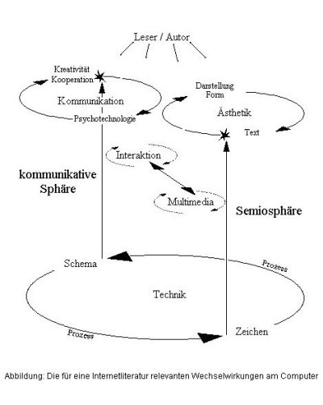

Literatur im Internet
Inhalt
[
Die Voraussetzungen der Vernetzung.
Der Computer als digitales Schriftmedium
]
[ Die relevanten medientheoretischen Konzeptionen ]
[ Die medientheoretische Konzeption von Michael Heim ]
[ Die medientheoretische Konzeption von Friedrich Kittler ]
[ Die medientheoretische Konzeption von Michael Giesecke ]
[
Die Vernetzung der Texte.
Die digitale Schriftlichkeit von Hypertext
]
[ Die theoretische Konzeption von Hypertextsystemen ]
[ Die technische Konzeption von Hypertextsystemen ]
[
Die Vernetzung als Kunst.
Der fiktionale Hypertext
]
[ Der fiktionale Hypertext in der Theorie ]
[ Die Hypertextualität des Palimpsestes ]
[ Das Lesen und Schreiben von Hypertext ]
[ Der fiktionale Hypertext in der Praxis ]
[ Die "imaginäre Bibliothek" von Heiko Idensen und Matthias Krohn ]
[ Die Abhängigkeit des Hypertexts von der Buchkultur ]
[ Die konzeptionellen Probleme des fiktionalen Hypertexts ]
[
Die Internetliteratur.
Die Entstehung einer Literatur der Vernetzung.
]
[
Modell einer Ästhetik der Internetliteratur.
Die medieninhärenten Wechselwirkungen
]
[
Ästhetik und Technik.
Literaturprojekte der Semiosphäre
]
[ Multimediale Internetliteratur ]
[ Die Kombination aus Text und Bild ]
[ "Die Aaleskorte der Ölig" von Dirk Günther und Frank Klötgen ]
[ "Trost der Bilder" von Jürgen Daiber und Jochen Metzger ]
[ Die Kombination aus Text und Ton ]
[ "Looppool" von Bastian Boettcher ]
[ Die Projektion sprachlicher Strukturen auf die technische Ebene des Hypertexts ]
[ "Zeit für die Bombe" von Susanne Berkenheger ]
[ "Hilfe" von Susanne Berkenheger ]
[ Computerheuristik als Objekt der Kunst ]
[
Kommunikation und Technik.
Literaturprojekte der Kommunikationssphäre
]
[ Kognitive Wechselwirkungen ]
[ Thematisch ungebundene Mitschreibeprojekte ]
[ "Assoziationsblaster" von Dragan Espenschied und Alvar Freude ]
[ Thematisch gebundene Mitschreibeprojekte ]
[ "TanGo" von Martina Kieninger ]
[ "Generationenprojekt" von Jan Ulrich Hasecke ]
[ Die Visualisierung der Vernetzung ]
[ Kreativität im virtuellen Raum ]
[ Projekte der Internetliteratur ]
Vorwort
Das Verhältnis zwischen der Literatur und elektronischen Medien verändert sich ständig und bleibt daher dauerhaft von Interesse. Doch die Literaturwissenschaft kann bisher meist nur eine inhaltliche und formale Verarbeitung der Technisierung konstatieren. Die Technik hat zwar Auswirkungen, die von der Literatur aufgegriffen werden, doch die Form der Literaturvermittlung durch den Buchdruck veränderte sich durch die elektronischen Medien kaum.
Erst die Verbreitung der Computertechnik scheint nennenswerte Auswirkungen auf die Literaturproduktion zu haben. Schon die Benutzung des Computers als Schreibgerät verändert die Art zu schreiben. [1]
Schrift und Literatur am Computer sind lediglich elektrische Impulse, die nach Belieben manipuliert werden können. Die Literatur kann nicht wie gewohnt auf dem Papier einer Buchseite fixiert werden, sondern bleibt in einem Zustand ständiger Veränderbarkeit. Dadurch ermöglicht die Computertechnik neue Formen des Umgangs mit dem Text. Hyperlinks verknüpfen verschiedene Textsegmente miteinander, die durch multimediale, räumliche und bewegliche Darstellungsformen ergänzt werden. Literarische Projekte werden innerhalb des Internets publiziert, dessen Kommunikationsangebot den Leser über die Gestalt des Werks entscheiden lässt. All dies zeitigt veränderte Bedingungen für die Produktion, die Rezeption und die Form von Texten. Solche Veränderungen sind das Thema dieser Arbeit. Doch fehlt es bisher einem Instrumentarium, das die wissenschaftliche Auseinandersetzung mit der Literatur am Computer ermöglicht.
Die Forschung geht zwar auffällig einmütig davon aus, dass die Elektronisierung von Schrift einen Paradigmenwechsel mit sich bringt. Doch bisher wurden die zahlreichen theoretischen Ausführungen noch von keiner Untersuchung ergänzt, die sich der literarischen Praxis zuwendet und konkrete Projekte einer Literatur im Internet analysiert.
Ziel des ersten Teils der vorliegenden Arbeit muss es also sein, ein Erklärungsmodell zu entwickeln, das die anschließende Analyse der Internetliteratur ermöglicht. Dieses Modell einer Ästhetik der Internetliteratur vereinfacht und modifiziert die medientheoretische Konzeption Michael Gieseckes und Christine Heibachs Modell einer Ästhetik des Digitalen, an denen es sich orientiert. Damit bleibt das Modell zwar hinter den Ansprüchen der Medientheorie zurück, ermöglicht aber eine Betrachtung der Projekte der Internetliteratur, die den zweiten Teil dieser Arbeit ausmacht. Grundsätzliche methodische Probleme bleiben bestehen, doch verdeutlicht das Modell immerhin deren Relevanz für die Analyse der literarischen Praxis.
Die Flüchtigkeit und Veränderlichkeit des Mediums wird von den Literaturprojekten konzeptionell aufgegriffen. Manches Projekt der Internetliteratur versteht sich als ständiger Schreibprozess. Mit der Einstellung der kreativen Arbeit ist der Kunstgegenstand des Literaturprojekts nicht fertiggestellt, sondern verschwunden. So verweigert sich die Internetliteratur einer Analyse, die zu einem eindeutigen und abschließenden Ergebnis kommen möchte. Wenn statt des Texts der bloße Prozess des Schreibens zum Gegenstand der Literatur wird, lässt sie sich durch eine Textanalyse nur noch unzureichend charakterisieren.
Der vorliegende Versuch einer wissenschaftlichen Auseinandersetzung mit der Internetliteratur bleibt daher selbst ein unvollendetes Projekt. Das Modell einer Ästhetik der digitalen Literatur muss ausgebaut werden und bedarf dringend einer fundierteren medientheoretischen Untermauerung. Maßstäbe des abgeschlossenen Werks und der stilistisch elaborierten Formulierung können nicht an Texte im Internet angelegt werden, bei denen sich teils nicht einmal die Autorenschaft identifizieren lässt. Die Literaturwissenschaft ist aufgefordert, einen Begriff der Ästhetik zu entwickeln, der dem Prozessualen und der Interaktion von Literatur im Internet gerecht wird.
"Die monomediale, technisierte und interaktionsfreie Kommunikation, die Grundlage des typographischen Zeitalters und noch immer der gängigen Kommunikations- und Literaturtheorien ist, liefert kein Paradigma für unsere Zeit, in der es um die Gestaltung des Zusammenwirkens verschiedener Medien und um eine Verbesserung der Rückkopplung geht." [2]
Wenn sich die Literaturwissenschaft einer Beschäftigung mit dem Internet zuwendet, wird sie Aspekte der Medien-, Kommunikationswissenschaft und Gesellschaftswissenschaft integrieren. Ihr Wirkungsbereich erweitert sich damit auf den einer Kulturwissenschaft, deren Relevanz sich über Kulturelles wie Soziales erstreckt. In all ihrer Unzulänglichkeit versteht sich die vorliegende Arbeit als eine Anregung, dieses Projekt der Literaturwissenschaft auch bezüglich der Internetliteratur voranzutreiben.
Die Voraussetzungen der Vernetzung.
Der Computer als digitales Schriftmedium
Der Computer ist das Gerät der elektronischen Datenverarbeitung. Er ist eine Maschine, die Informationen verarbeitet. Allein hierdurch wird schon ein grundlegendes, theoretisches Problem aufgeworfen, das sich wohl am einfachsten anhand traditioneller Technik verdeutlichen lässt: Sind die Erhebungen auf der Walze einer Drehorgel die Zeichen einer Schrift, deren Bedeutung dem Musikstück gleichkommt, oder sind sie lediglich Bestandteile der Mechanik des Geräts, das die Musik ertönen lässt? Beide Betrachtungsweisen sind berechtigt und richtig. Signifikant und Signifikat scheinen am Computer eins zu werden.
Zu einem technischen Medium wird der Computer dadurch, dass ein Computerprogramm Prozesse definiert, die durch den materiellen Rechner ausgeführt werden. Die Computerprogramme formalisieren Wege, bestimmte Aufgaben oder Probleme zu lösen. Diese Formalisierung durch das Programmieren erfüllt laut Krämer "die Bedingung des schriftlichen Symbolgebrauches, die Bedingung des schematischen Symbolgebrauches und die Bedingung des interpretationsfreien Symbolgebrauches" [3] .
Tatsächlich steht die Schriftlichkeit des Computerprogramms für Schemata, für wiederholt abzuwickelnde Rechnerprozesse. Bedeutung erhält der Programmcode erst in dem Ausführen dieser Prozesse. Das Ausführen eines Prozesses ist als Tatbestand per se eindeutig. In dem Ausführen der Rechnerprozesse kann der Programmcode also nur eine einzige Bedeutung erhalten. Die Symbole des Programmcodes lassen keine Interpretationsfreiheit. Für das Ausführen des Programms muss der Programmcode digital, also in Form von 0/1-Informationen vorliegen. Das Digitalspeichern macht die Information zu einem physischen Zustand. Beim Magnetspeicher sind das die beiden remanenten Zustände bistabiler magnetischer Elemente. Spätestens hier ist eine vom Zeichen selbst unterschiedene Bedeutungsebene des Zeichens wohl kaum mehr auszumachen. Die symbolische Qualität der Programmiersprache geht in der Physis, also dem Erfahrbaren auf; sie diente nur dem Verstehen des menschlichen Programmierers.
Die Materialisierung von Informationen zeigt, dass hier Annahmen der Informationstheorie Claude Shannons wirksam sind. [4] Shannon versteht die Entropie als Maß für den Informationsgehalt. [5] Dies lässt sich ähnlich wie in der Physik der Thermodynamik als mathematische Formel ausdrücken. Die Entropie in der Informationstheorie erlaubt eine mathematische Aussage über die Wahrscheinlichkeit und Häufigkeit der möglichen Zustände von übermittelten Nachrichten. [6] So wird der Informationsgehalt einer bestimmten Nachricht vergleichbar, mithin messbar. Viele Medientheorien greifen direkt auf den Informationsbegriff Shannons zurück, so zum Beispiel das Modell Vilém Flussers [7] oder die konstruktivistischen Medientheorien [8] .
Die Schriftlichkeit des objektorientierten Programmierens kann man demnach als ein reines, also immaterielles System von Symbolen verstehen, bei dem die Beschreibung mit ihrem Objekt zusammenfällt. [9] Das Computerprogramm führt Prozesse rekursiv aus, die der Programmcode schematisch beschreibt. Dies kann jedoch mit jeweils anderen Variablen geschehen, so dass die Rechnerprozesse immer neue Ergebnisse hervorbringen. [10] Am Computer sind also Texte möglich, die von dem Programm verändert werden. [11] Das Transformieren zu immer neuen digitalen Texten kennzeichnet einen qualitativen Unterschied zu der Reproduktion von identischem Text durch den Buchdruck und zu den Publikationsformen der anderen analogen Medien.
Die Digitalisierung verändert die Materialität und den Charakter der Schrift. Die neue Qualität des Speicherns hält den Text nicht unmittelbar, sondern bitcodiert und nur vorläufig fest. [12] Sie lässt keinen direkten Zugriff auf die alphanumerische Form des Textes zu, sondern macht Programme notwendig, die diese zur Darstellung und Bearbeitung des Textes immer wieder neu herstellen. Ebenso ist das Schreiben per Fingerdruck auf der Tastatur mittelbarer. Die Darstellung auf dem Bildschirm hält den Text in dem Zustand des Vorläufigen. Sie ermöglicht immer neue Veränderungen, die keine Spuren hinterlassen. Als unveränderbare und damit endgültige, verbindliche Form kann der Text nicht mehr dargestellt werden.
Die Veränderlichkeit veräußert die Beherrschung der Sprache an die Technik. André Leroi Gourhan umschreibt dies mit dem Begriff "extériorisation", der sich auf das Entwickeln von Werkzeugen, aber auch von Sprache und Symbolen bezieht. Gemeint ist ein Auslagern der inneren, kognitiven Fähigkeiten in den Raum des Sozialen. [13] Mit seiner digitalen Immaterialität erhält der Text eine Art von Exteriorität, die ihn dem Zugriff und der Kontrollierbarkeit weiter entzieht, als es die Entfremdung vom Text durch den frühneuzeitlichen Buchdruck vermochte. [14]
Die Schnittstellen, welche die Rechnerprozesse darstellen und für den Anwender steuerbar machen, ermöglichen eine ästhetische Visualisierung, zum Beispiel durch graphische Benutzeroberflächen. Dabei wird der Computer durch das Implementieren von Multimedialem zu einem für die Kunst geeigneten Medium. Text, Ton, Bild und Film können mit Hilfe des Computers hergestellt, dargestellt und zusammengeführt werden. Der Computer entwickelt sich damit zu einem "inklusiven Medium", das "die Leistungen anderer Medien mit einschließen oder bündeln" [15] kann. Die Vernetzung von Computern ermöglicht zusätzlich eine nahezu instantane Kommunikation, die Raum- und Zeitdifferenzen zu relativieren scheint.
Der Umgang mit Computern ist außer durch den technischen, auch durch einen ästhetischen und einen kommunikativen Aspekt geprägt. Die durch eine "ovidianische Digitalisierung" [16] grundlegend geänderten Bedingungen für die Darstellung und Klassifizierung von Text [17] haben Auswirkungen auf den Umgang mit Sprache. "Ovidianisch" steht hier für eine ständige Metamorphose, der das elektronische Wort unterliegt. Neben das Interesse an der statischen Repräsentation des Textes tritt unter solchen Bedingungen das Interesse an dem Prozess, der Sprache hervorbringt. [18]
Die Konsequenzen daraus werden verschieden bewertet. Für Friedrich Kittler resultiert hieraus eine Fokussierung auf die Materialität der Medien. Michael Heim versteht die Digitalisierung als Veränderung ontologischer Bedingungen, des "In-der-Welt-Seins". Dagegen betont Michael Giesecke bei seiner Analyse der Sprach- und Wahrnehmungstransformation die epistemologische Perspektive.
Die relevanten medientheoretischen Konzeptionen
Die medientheoretische Konzeption von Michael Heim
Für Michael Heim hat das Schreibsystem der Digitalisierung insofern eine ontologische Basis, als sie die Frage nach der Wahrnehmung von Realität aufwirft. Heim orientiert sich hier an der Technikkritik Heideggers. Die Hardware des Mediums ist weniger als bloße technische Tatsache aufzufassen, sondern eher als die von Menschen geschaffene Technologie und Kulturtechnik. Anhand der Technologie lässt sich die Beziehung der Menschen zu der Sprache, mithin die Beziehung zu dem Wirklichen aufzeigen. Heim konzipiert hierzu ein Modell der "psychischen Rahmen", in denen die Intimität zwischen dem Denken und seinen Gegenständen erzeugt wird. Diese Intimität bezeichnet das "In-der-Welt-Sein": [19] "The meaning of symbols is affected by the horizon of significance in which they appear." [20] Heim teilt nicht Heideggers Pessimismus bezüglich des Beherrschens von Sprache und damit auch von Menschlichem durch Technik. Doch seine Analyse kommt durchaus zu Ergebnissen, die in eine ähnliche Richtung weisen: Bücher gehörten zu einem psychischen Rahmen des Festhaltens, Manifestierens von Ideen. Dieses Fixieren ist durch die permanent änderbare, mutable Schrift auf dem Computerbildschirm nicht mehr möglich. [21] Die neue Flüchtigkeit der schriftlichen Sprache, die materielle Umsetzung der Derridaschen Différance, bedeutet einen Kontrollverlust des schreibenden Menschen, dessen Ideen nun nicht mehr endgültig festgehalten werden.
Doch gerade dieses Zersplittern der Wirklichkeit bewirkt eine Sehnsucht nach Ganzheitlichem. Aus dem Fragmentarischen werden neue virtuelle Realitäten gebildet. [22] Da die virtuelle Welt alle Sinne des Menschen, also das Erleben integriert, kann diese als "ontologisches Medium" gelten, welches sein Verhältnis zu den Dingen reflektiert. [23] Auf diese Art und Weise erweitert sich der "psychische Rahmen" um den "virtuellen Realismus", um ein neues Verhältnis zu der Welt. [24] Eine Selbstreferentialität des digitalen Mediums, die keinen Inhalt, nur den Prozess kennt, ergibt sich daraus für Heim jedoch nicht. Heim versucht, den Computer in seiner reinen Funktionalität zu erfassen, die den psychischen Rahmen um Neues erweitert und für eine neue Ontologie nutzbar wird. Somit gründet Heims Analyse letztlich doch auf einer Dualität von Realität und Idee. Die Konstruktion der Realität durch das Medium wird dabei also nicht betrachtet.
Die medientheoretische Konzeption von Friedrich Kittler
Friedrich Kittler versucht, die Entlarvung des hermeneutischen Sinnidealismus durch die Schriftphilosophie des Poststrukturalismus fortzusetzen, indem er die Medien auf ihre Materialität zurückführt. Kittler sieht das Wesen der Sprache in ihren Medien, ähnlich wie Shannon die Informationen als Problem ihrer Übertragung ausmachte. McLuhans Diktum "das Medium ist die Botschaft" wird dabei als Erklärungsmodell für Diskurspraktiken gebraucht. Die im Programmcode formalisierten Schemata von Prozessen beim digitalen Schreiben sind nach Kittler auf die Elektronik zurückzuführen. Damit gilt die Software als Funktion der Hardware. [25] Es ist nicht mehr die Software, die der Hardware Anweisungen gibt, stattdessen diktiert das technisch Machbare die Ausformung des Mediums. Das Technische definiert das Begriffliche: "Was Mensch heißt, bestimmen keine Attribute, die Philosophen den Leuten zur Selbstverständigung bei- oder nahelegen, sondern technische Standards." [26] In der Epoche der elektronischen Medien übt also das technisch Ausführbare einen normierenden Zwang aus. Erst auf Basis dieser Normierung und Gleichschaltung sichern sich die Medien ihre Funktion. [27]
Die Computertechnik verwirklicht laut Kittler eine Gleichschaltung erstens durch die Imperative des Programmcodes, zweitens durch die Reduktion der symbolischen Systeme auf die 0/1-Differenz. Die Technik gilt bei Kittler nicht als Folge der sozialen Entwicklung, sondern als deren Ursache. Latente Denkstrukturen können also anhand der Technik nicht mehr aufgedeckt werden, weil sie von der Technik selbst hervorgebracht wurden. Für Kittler kehrt sich Foucaults archäologischer Ansatz um, er versteht die Technik als strukturprägend. Eine solche Betrachtungsweise erfasst aber nicht alle Aspekte der Technikentwicklung. Durch ein komplexes Zusammenspiel, eine Rückkopplung zwischen Maschine und Mensch wird Information am Computer nämlich nicht nur übertragen, sondern auch produziert. Der Einfluss des Menschen auf die Technik, also das was der Mensch in der Wechselwirkung mit der Technik einbringt, entzieht sich Kittlers Beobachtung. Hierzu bemerkt Heibach, dass sich für ihn eben nur das Subjekt in dem technischen Prozess auflöse, der alles kontrolliert. [28]
Die medientheoretische Konzeption von Michael Giesecke
Die Analyse Michael Gieseckes ist indessen eher an der Systemtheorie ausgerichtet. Den Beginn der Medienkultur erkennt er, wie Elizabeth L. Eisenstein in der Entwicklung des Buchdrucks. [29] Über die Bedeutsamkeit, die schon der Entwicklung von Handschriftlichkeit zukommt, existieren maßgebliche Arbeiten einiger Schüler Marshall McLuhans. [30] Jens Brockmeier erklärt Schriftlichkeit dagegen weniger anhand ihrer historischen Entwicklung, sondern eher als Systeme menschlichen Bewußtseins, die innerhalb des psychischen Rahmens wirken. [31] Giesecke hebt die Widersprüche zwischen beiden Vorgehensweisen auf, indem er die Bedingungen der Frühneuzeit als "äußerst differenziertes, selbstregulierendes, komplexes und dynamisches, informationsverarbeitendes System" [32] versteht: Der kommerzielle Buchdruck habe eine "Operationalisierung der Wahrnehmung der Umwelt" [33] mit sich gebracht. Die abgedruckte Wahrnehmung musste für das wachsende Lesepublikum nachvollziehbar sein. So wie es schon McLuhan feststellt, ändert der Buchdruck auch nach Giesecke das gesellschaftliche und das psychische System. [34]
Giesecke wendet Termini der Systemtheorie auf die Umwälzungen durch die frühe Druckkultur an. [35] Dieses Vorgehen mag nicht ganz unproblematisch sein, es offenbart aber erstaunliche Parallelen der frühen Druckkultur zu den Funktionen des neuen digitalen Schrifttums. Ähnliche Züge tragen insbesondere die normierenden Mechanismen, durch welche die Wahrnehmung der Rezipienten auf das jeweilige Medium eingestellt werden. [36] Dies darf jedoch nicht darüber hinwegtäuschen, dass die eigentliche Aneignung eines Modus für die Rezeption neuer Massenmedien auf verschiedene Weise wirkt. Während die Buchkultur den allgemein verbindlichen, statischen Rezeptionsmodus mit sich bringt, fordert nach Georg Jäger das Medium Computer von dem Rezipient, die Wahrnehmung auf ständige Veränderungen umzustellen, den festen Standpunkt der Rezeption zu verlassen. [37]
Giesecke legt seiner Betrachtung der Systeme von Buch- und Computerkultur ein Modell der Transformation gesellschaftlicher Systeme zugrunde. [38] Innovationen sind demnach zunächst von den älteren Systemen abhängig. Diese Abhängigkeit kehrt sich um, Erklärungsmodelle des neuen Systems werden auf das alte angewandt. Die alten Modi der Wahrnehmung verlieren schließlich ihre Relevanz für das innovative System, das hierdurch autonom wird. Ähnlich wie in McLuhans Akkumulationstheorie löst hier das neue System keine alten Systeme ab, sondern okkupiert oder integriert diese lediglich. [39] Für die Gegenwart der Digitalkultur stellt Giesecke noch die Abhängigkeit von dem älteren System der Buchkultur fest:
"Über den Buchdruck hinausgehende bleibende Bedeutung werden die Medien dort erlangen, wo sie völlig andersartige Informationssysteme aufbauen: nicht ... rationales Denken substituieren ... und auch keine sprachliche Darstellungsform wählen." [40]
Es steht natürlich außer Frage, dass das neue Medium eigene Darstellungsformen entwickeln muss, um sich zu etablieren. Tatsächlich werden noch die Erklärungsmodelle des älteren Systems auf die digitalen Medien angewandt. Jedoch darf bezweifelt werden, ob - wie Giesecke meint - die Ablösung von dieser Abhängigkeit den Verlust von Sprache in dem neuen Medium bedeutet. Im Folgenden wird sich zeigen, wie wichtig Schrift und Sprache für das Medium Computer bleiben.
Die Vernetzung der Texte.
Die digitale Schriftlichkeit von Hypertext
Die theoretische Konzeption von Hypertextsystemen
Die theoretische Konzeption von Hypertext lässt sich auf Vannevar Bushs Entwurf "Memex" (Memory Extender) zurückführen. [41] Bush projektierte eine Bibliothek von Mikrofilmen, deren Bestandteile assoziativ indexiert und miteinander verknüpft sein sollten. Den beliebig zahlreichen Verknüpfungen, Zusammenhängen folgend, bahnt sich der Benutzer genau denjenigen Weg durch das Archivmaterial, der seinem Bedarf entspricht. [42]
Bushs Memex-Konzept wurde zu Beginn der 1960er Jahre von Ted Nelson auf die neue Computertechnik übertragen. Der Begriff "Hypertext" für das nicht-lineare Verknüpfen von digitalen Texten stammt von Nelson. [43] Sein Hypertext-Archiv "Xanadu" basiert auf einem frei zugänglichen, universalen "Docuverse", das alle jemals produzierten Medieninhalte aufnimmt. Der Anwender ist gehalten, die Dokumente durch eigene assoziative Verknüpfungen, sogenannte "Hyperlinks", zu verbinden, sie zu kommentieren und zu zitieren. [44]
Das Konzept von "Xanadu" setzt voraus, dass jedes vorhandene Textdokument direkt oder indirekt auf andere, ältere Texte Bezug nimmt und daher sinnvoll mit diesen verknüpft werden kann. Durch die Betrachtung der Verknüpfungen offenbaren sich in dem "Docuverse" die Strukturen dieser Intertextualität. Für Nelson ist sie das grundlegende Kennzeichen von Literatur. [45] Die Texte nach den eigenen Vorstellungen zusammenzustellen und zu verknüpfen, ermöglicht nach Nelson neue, ureigene Deutungen und emanzipiert damit den Leser von den Autoren. Gegenüber dem Werk nimmt der Rezipient eine ähnlich kreative Funktion ein wie dessen Schöpfer. Das Lineare des Texts wird hier durch den Leser um die assoziativen Verknüpfungen, das assoziative Denken bereichert. [46] Weder in der Informatik noch in der Literaturwissenschaft fanden die Thesen von Nelsons "Dream Machines" Anklang. Erst nach 20 Jahren konnte er sein Projekt "Xanadu" im kleinen Maßstab als kostenpflichtigen Dienst verwirklichen. [47]
Die technische Konzeption von Hypertextsystemen
Gleichzeitig mit den theoretischen Entwürfen von Hypertextkonzepten entstanden die technischen Möglichkeiten zu deren Verwirklichung. Im Rahmen seines "Augment project" versuchte Douglas Engelbart, menschliche Fertigkeiten durch ein Computersystem zu fördern. In sein "oN-Line-System" (NLS) wurden die Aufzeichnungen assoziierter Wissenschaftler aufgenommen. Alle Beteiligten hatten Zugriff auf die Dokumente, konnten sie beliebig um Verweise auf eigene Kommentare ergänzen. [48] Engelbarts Vorstellung von Vernetzung beinhaltete die Übermittlung von digitalen Briefen zwischen den Terminals der Computernutzer. [49] Ein erstes leistungsfähiges System entstand 1968 mit Andries van Dams "FRESS" (File Retrieval and Editing System), dem Nachfolger seines "Hypertext Editing System" aus dem Vorjahr. Die Hypertextmaschinen von Dam ermöglichten dem Leser das Wechseln zwischen den Texten, die durch Links miteinander verknüpften waren. [50]
Der Erfolg des Personal Computers brachte 1986 eine erste Hypertextmaschine mit sich, die nicht mehr auf Großrechnern ausgeführt werden musste. Die "Hypercard" der Firma Macintosh ist Bestandteil eines Systems digitaler Karteikarten, zwischen denen Verknüpfungen möglich sind. Durch verschiedene Arten von Links konnten dagegen mit IBMs "NoteCards" die Textstellen selbst verbunden werden. [51]
Tim Berners-Lee unterbreitete 1989 Anregungen zu einer Verknüpfung von Dokumenten im Europäischen Kernforschungszentrums "CERN" (Conseil Européen pour la Recherche Nucléaire). Diese Vernetzung basiert auf Links innerhalb von Hypertexten, die in einem von der Plattform des Rechners unabhängigen Format vorliegen sollten. [52] Dies verlangt nach einer Programmiersprache, welche einzelne Textobjekte des Hypertextes etikettieren kann. Mit "HTML" (Hypertext Markup Language) kann die Hierarchie und Struktur des Textes unabhängig von der Art des jeweiligen Computersystems dargestellt werden. In das Internet wurde diese Hypertextkonzeption unter dem Namen "World Wide Web" implementiert. 1992 kam mit dem Browser "Mosaic" eine erste Software auf den Markt, die HTML graphisch anzeigte und das Einbinden von Bilddateien unterstützte. Außer HTML-Systemen wurden andere multimediafähige Hypertextkonzepte verwirklicht. Bei Systemen, die dem Benutzer mehr Möglichkeiten zu einer Interaktion bieten, wird oft von "Hypermedia" gesprochen. Ein klarer qualitativer Unterschied zwischen "Hypermedia" und "Multimedia" lässt sich jedoch nicht ausmachen. Daher wird hier in den folgenden Kapiteln ausschließlich der gängigere Terminus "Multimedia" verwendet.
Ausgereifte Multimediasysteme dienen zum fortgeschrittenen Informationsmanagement, indem sie Dokumente je nach Bedarf gemäß verschiedener Kriterien dynamisch strukturieren. Diese Art von Flexibilität kann durch verlinkte HTML-Dokumente im "World Wide Web" nicht erreicht werden. [53] Zwar kann auch HTML die Verknüpfungen und Links nach ihren Funktion differenziert beschreiben, doch diese Informationen können von den Browsern noch nicht angezeigt werden. Der Anwender kann keine eigenen Verknüpfungen vornehmen. Das dezentrale, global zugängliche "World Wide Web" avanciert zu einem populären Medium für Publikationen, dessen Informationen aber gerade wegen seiner dezentralen Strukturen nicht organisiert werden können. Diese Unterschiede zu lokalen oder zentral kontrollierten Hypermedia- und Hypertextsystemen werden oft als maßgebliche Einwände gegen das "World Wide Web" angeführt, so zum Beispiel von Ted Nelson und George P. Landow. [54]
Die Masse der Darbietungsformen, die Vorläufigkeit der Information und das Dezentrale der Vernetzung bestimmen die Funktion des "World Wide Web" anders als die der Hypermediasysteme. Es ist weniger eine detailliert konzipierte, strukturierte Informationsmaschine, sondern eher ein mediales Phänomen.
Der Begriff "Hypertext" schließt für Computertechniker meist auch das Programm der Hypertextmaschine ein, in den Literaturwissenschaften wird der Terminus oft nur für die dem Hypertext eigene Methode der Organisation von Text benutzt. [55] Trotz aller Unterschiede zwischen Hypertextsystemen bleibt eine Gemeinsamkeit, die den Begriff "Hypertext" für die Beschäftigung mit seinen Auswirkungen auf das Literarische definieren mag: die Verknüpfung zwischen Texten oder den einzelnen Teilen eines Texts:
"Die Grundidee von Hypertext besteht darin, dass informationelle Einheiten, in denen Objekte oder Vorgänge des einschlägigen Weltausschnittes auf textuelle, graphische oder audiovisuelle Weise dargestellt werden, flexibel über Verknüpfungen manipuliert werden können." [56]
Die Vernetzung als Kunst.
Der fiktionale Hypertext
Der fiktionale Hypertext in der Theorie
Recht bald nach der Entwicklung erster Hypertextsysteme begann man, die Möglichkeiten einer künstlerischen Verwendung von multimedialem Hypertext zu erkunden. Mit "Afternoon, a story" schuf der Hochschullehrer Michael Joyce 1987 eine erste "Hyperfiction", einen fiktionalen Text mit den Strukturen eines Hypertexts. Zusammen mit der Veröffentlichung von "Afternoon, a story" auf Diskette initiierte Michael Joyce eine Theorie des belletristischen Hypertextes. Die bedeutendsten Theoretiker sind George P. Landow, Jay David Bolter und Stuart Moulthrop. Gemeinsam mit Michael Joyce vertreten alle die Ansicht, fiktionaler Hypertext sei literarische Avantgarde, die Linearität in der Narration werde hier überwunden. Hypertext erreiche das Ziel der literarischen Moderne, dem Leser eine kreativere Rolle einzuräumen und die Konventionen der Buchkultur zu überwinden. Um diese These zu untermauern, legt die Hypertexttheorie Beispiele für Hypertextuelles in der gedruckten Literatur vor. [57] Stuart Moulthrop erstellte aus "Garten der Pfade, die sich verzweigen" von Jorges Luis Borges einen Hypertext, um darin hypertextuellen Strukturen nachzuweisen. Dabei entspricht der Text Borges` eher in seiner inhaltlichen Dimension den Vorstellungen der Hypertexttheorie: Borges` Erzählung kreist mit ihrer Parabel der potentiell möglichen Handlungsabläufe eines nie vollendeten Buches um das Problem der Entscheidung für denkbare Verhaltensweisen mit jeweils verschiedenen, unabsehbaren Folgen. Dagegen wird bei der Beschäftigung mit James Joyce gerne die Schreibweise hervorgehoben, welche lineares Erzählen durchbricht. [58]
Als weitere Beispiele für Hypertextuelles in der gedruckten Literatur werden Werke der OuLiPo-Gruppe, einer "Werkstatt für potentielle Literatur", in der sich Schriftsteller und Mathematiker seit 1960 mit sprachlichen Experimenten befassten. [59] Die Analyse der Texte Raymond Queneaus und Julio Cortázars scheint für die Hypertextheorie besonders fruchtbar zu sein. In seinem Gedichtband "Cent mille milliards de poèmes" zerlegt Raymond Queneau Sonette in kleine Einzelteile; der Leser ist angehalten, diese nach Belieben zusammenzusetzen. Julio Cortázars "Rayuela" besteht aus einer Anzahl von Textteilen, die durch Nummern zum Weiterlesen an anderen Stellen auffordern.
Nach Auffassung der Hypertexttheorie werden mit elektronischen Hypertextmedien derartige Versuche vorangetrieben, den Leser am Strukturieren des Textes zu beteiligen und sich dem Drängen des Mediums Buch auf mehr oder minder lineare Texte zu entziehen. [60] Dies wird wiederum in eine Beziehung zu dem Poststrukturalismus gesetzt, also in erster Linie zu der Texttheorie Derridas und Roland Barthes` Theorie des Lesens. [61] Damit erschließen sich die Hypertexttheorien die literaturtheoretischen Dimensionen der Funktion des Autors, der Rolle des Lesers, der Intertextualität und Struktur des Textes. Der Begriff "Hypertext" steht nun nicht mehr bloß für digitale Texte mit Verweisstrukturen, sondern allgemein für Verweisstrukturen in der Literatur.
Diese Art der Begriffserweiterung um eine Adaption des literaturtheoretischen Terminus "Hypertext" fordert die Kritik geradezu heraus, denn implizit postuliert hierdurch die Hypertexttheorie, die semantischen und stilistischen Verweisstrukturen der modernen Literatur seien durch den digitalen Hypertext besser zu verwirklichen. [62] Die Kritik Aarseth beispielsweise spricht jedoch den digitalen Hypertexten jede ästhetisch relevante Intertextualiät ab. [63]
Die Hypertextualität des Palimpsestes
In gewisser Weise stellt sich die Hypertexttheorie also durch ihre Begriffsbildung in der Tradition der "Palimpsestes. La littérature au second degré" [64] , einer berühmt gewordenen literaturwissenschaftlichen Abhandlung von Gérard Genette. In dieser Schrift prägt Genette den literaturtheoretischen Terminus "Hypertext", nachdem er sich während der siebziger Jahre mit Arbeiten in dem Bereich der strukturalen Erzähltheorie hervorgetan hatte.
Mit "Palimpsestes" belebt Genette die Diskussion über Intertextualität, die in den sechziger Jahren von der Semiotikerin J. Kristeva und der Literaturkritik angestoßen worden war. [65] Ein Palimpsest ist eine üblicherweise aus Sparsamkeit wiederverwendete Handschrift, deren ursprünglicher Text zwar gelöscht ist, aber erkennbar bleibt. Dies dient Genette als Metapher für eine "Transtextualität", womit bei ihm die Intertextualität gemeint ist. Genette differenziert zwischen fünf Kategorien der "Transtextualität: [66]
- Paratextualität, also zum Beispiel Titel, Anmerkungen und Vorwort eines Texts
- Architextualität entspricht der Gattung, der Erzählweise, der Art des Diskurses in dem Text
- Metatextualität meint die Kritik an dem Text, die Kommentierung
- Intertextualität umschreibt die Gegenwart anderer Texte in der Literatur
- Hypertextualität meint eine Beziehung zwischen mehreren Texten
Das eigentliche Thema von "Palimpsestes" ist die Hypertextualität, bei der ein Hypertext vor dem Hintergrund eines Hypotexts verfasst wird. Fundamentale Typen von Hypertextualität sind Imitation und Transformation. Genette führt als Beispiel hierfür Vergils "Aeneis" und Joyces "Ulysses" an. Der Hypotext "Aeneis" werde von Vergils Hypertext "Aeneis" imitiert, er erzählt Anderes in einer gleichen Weise. Die "Odyssee" werde dagegen in Joyces Hypertext "Ulysses" transformiert, er erzählt Gleiches anders. Imitation und Transformation können ernst, satirisch oder spielerisch sein. Die dem entsprechenden drei Arten der Transformation sind das Transponieren, die Parodie und die Travestie. Die Fälschung, die Karikatur und das Pastiche sind die drei Arten der Imitation. Innerhalb dieses Rasters weist Genette hypertextuelle Bezüge von der Antike bis in die Gegenwart nach. Dazu beschäftigt er sich mit so verschiedenen Autoren wie Homer, Sophokles, Scarron, Racine, Rimbaud und Cervantes. Genette referiert über die Autoren des Oulipo, über Stendhal und dessen Rezeption durch Balzac, er analysiert die Querverweise in Zolas Oeuvre und bei Queneau. Genette geht also eher systematisch, nicht diachronisch vor. Nur so kann sein Konzept der Intertextualität ein neues Licht auf das Werk der verschiedenen Autoren werfen. [67]
Das Lesen und Schreiben von Hypertext
So fragwürdig es auch sein mag, wenn die Hypertexttheorie kurzerhand Genettes literaturtheoretischen Begriff "Hypertext" auf den digitalen Hypertext anwendet, eines muss doch eingestanden werden: Die Struktur des Textes entwickelt sich von dem Sequentiellen zu dem Multilinearen. [68] Hypertexte bringen eine Zersplitterung zu kleinen Textstücken mit sich, für die Landow den Terminus "lexias" prägt. [69] Durch Links könne lexias miteinander verknüpft werden.
Dadurch, dass der Leser die Wahl zwischen verschiedenen Links hat, eröffnen sich ihm unterschiedliche Möglichkeiten, der Struktur des Textes zu folgen. Mithin ist diese Textstruktur nicht mehr statisch festgelegt, sondern offen für eine Anzahl von Lesarten, die den möglichen Kombinationen von "lexias" entspricht. Da der Leser durch die Wahl einer aus mehreren Verknüpfungen nur einen Teil der denkbaren Kombinationen erstellt, erschwert Hypertext eine geschlossene Narration. [70] Der Autor müsste diese nicht nur für die Gesamtheit des Hypertextes, sondern auch für jede einzelne, denkbare Kombination von Textteilen herstellen. Zudem widersetzen sich die durch gleichartige Links verknüpften Textteile einer Hierarchisierung. Durch all das kommt dem Leser eine neue Rolle zu, seine Freiheit in der Sinnkonstruktion übersteigt diejenige beim Lesen von linear fortschreitendem Text.
Die veränderte Rolle des Lesers hat Auswirkungen auf die Funktion des Schreibenden. Der Autor tritt weite Teile seiner Verfügungsgewalt über das Strukturieren, mithin das Verstehen des Textes an den kreativen Leser ab, [71] was Landow zu der Schaffung eines neuen Terminus "wreader" aus "writer" und "reader" ermutigt. [72]
Links bieten die Möglichkeit, Texte außerhalb des eigentlichen Werkes einzubeziehen. Damit expliziert schon der Hypertext selbst seine Einreihung in den intertextuellen Kontext. Stark abstrahiert deutet dies in die Richtung eines beginnenden Zerfalls der Funktion des Autors als Erschaffer von Genuinem, ähnlich wie bei Foucaults Konzeption einer "Ästhetik der Existenz" [73] . Gegenstand der Ästhetik ist hier nicht mehr das Kunstobjekt, sondern ein Schaffensprozess, bei dem Rezipient und Produzent in ähnlicher Weise eins werden, wie es das Hypertextkonzept projektiert.
Links erlauben die Verbindung ungleicher Textarten. Damit entsteht ein Anreiz, Texte ganz verschiedener Autoren zu verknüpfen. So kann etwa Fiktionales mit "Nonfiction" enger miteinander verquickt werden als in der Buchkultur üblich, wo Belletristik und "Nonfiction" meist sogar physisch klar voneinander separiert werden. Auch hierdurch versucht sich Hypertext, den gewohnten ästhetischen Kategorien zu entziehen und die Rolle des Autors neu zu definieren. [74] Doch zumindest bisher werden Hypertexte in der Praxis all diesen Vorsätzen kaum gerecht.
Der fiktionale Hypertext in der Praxis
Die Thesen der Hypertexttheorie mögen schlüssig sein. Oft wird ihnen jedoch entgegnet, dass die bisher entstandenen fiktionalen Hypertexte hinter den Vorstellungen der Theorie weit zurückbleiben. [75]
Bei allen Hypertexttheoretikern handelt es sich um Lehrende, die Hypertext zunächst zu der Organisation von Informations- und Lehrmaterial einsetzen und erst in zweiter Linie für Versuche fiktionalen Erzählens. Die Vernetzung des wissenschaftlichen Textmaterials ist im Regelfall systematisch. Links können beispielsweise die Verwendung von Inhaltsverzeichnissen, Indizes und Registern optimieren. Sie können auf Anmerkungen, Zusatzinformationen, Fußnoten oder gar auf die Primär- und Sekundärliteratur selbst verweisen. Am Schreiben und Aktualisieren solcher Hypertextwerke, Hypertextdokumentationen sind nicht selten Leser beteiligt, indem sie etwa Anmerkungen beisteuern können. Möglicherweise ist also die These einer tatsächlich neuen Rolle des Lesers durch die Erfahrungen beim Einsatz von Hypertext in Forschung und Lehre inspiriert.
Fiktionale Hypertexte können sich jedoch meist nicht an den bestehenden Konventionen des Verweisens orientieren, wie sie der Leser aus den Sach- und Lehrbüchern oder wissenschaftlichen Publikationen kennt. Die Verweise, die Links innerhalb fiktionaler Hypertexte, geben daher selten Auskunft darüber, worauf sie verweisen. Die Transparenz der Struktur des Hypertextes geht also bei fiktionalen Hypertexten oftmals verloren. Die freie Entscheidung für einen bestimmten Link kann von dem Leser nicht mehr bewusst getroffen werden, sie wird stattdessen durch den Zufall bestimmt. [76] Damit schwindet die postulierte Verfügungsgewalt des Lesers über eine autonome, individuelle Konstruktion des zu lesenden Textes, dessen Struktur und Bedeutung. Nicht selten enden daher Lesesitzungen mit einer Enttäuschung, da sich dem Leser die Strukturen der Narratio nicht früh genug erschließen. [77]
Für die Erstellung von fiktionalen Hypertexten entwickelte John Smith zusammen mit Michael Joyce und Jay D. Bolter eine eigene Software. "Storyspace" [78] wird von vielen Autoren beim Schreiben ihrer Hypertexte genutzt. Hierdurch ist es möglich, die Aufeinanderfolge der Textteile stärker zu determinieren. Einzelne Textabschnitte werden dem Leser also nur dann präsentiert, wenn dieser vorher bestimmte andere gelesen hat.
Solche Maßnahmen, eine gewisse Transparenz und Kohärenz der Narratio durch die bloße Einschränkung der Entscheidungsfreiheit des Lesers technisch herzustellen, stellen Landows Diktum von einem "wreader" [79] nachhaltig in Frage. Janet Murray fordert die klare Unterscheidung zwischen dem im Sinne der Rezeptionsästhetik aktiven Leser und dem Autor, der ihm unvermeidlich gewisse Regeln zu der Lektüre seines Werkes an die Hand geben müsse. [80] Die Vision einer neuen Qualität der Autonomie des aktiven Lesens wird damit für den praktischen Umgang mit Hypertext auf die Freiheit der kognitiven Aktivitäten beim Lesen zurückgeworfen, wie sie schon bezüglich gedruckter Literatur festgestellt wurde. [81]
Nach Christina Heibach nimmt die Herstellung einer Struktur des Textes die Aufmerksamkeit des Lesers fiktionaler Hypertexte möglicherweise so sehr in Anspruch, dass seiner eigenen Imagination sogar weniger Raum bleibt als beim Lesen gedruckter Literatur: "Er [der Leser] wird durch diese Form der ?Technologisierung des Wortes' letztlich mehr behindert als befreit." [82] Ein Beleg hierfür sei die Tatsache, dass für wissenschaftliche Arbeiten über fiktionale Hypertexte überdurchschnittliche Lektürearbeit geleistet werden musste, um überhaupt erste bescheidene Erkenntnisse über die Strukturen der Hypertexte gewinnen zu können. Diese Struktur wird am deutlichsten in einer Visualisierung der Verknüpfungen durch eine Stammbaum- oder Kartendarstellung. [83] Eine derartige Veranschaulichung der Gesamtstruktur des Hypertextes, eine Orientierungshilfe, wird den Lesern jedoch von vielen Autoren nicht angeboten.
Nicht nur die Determinanten des Autors beeinflussen das Lesen in der Praxis stärker als theoretisch angenommen. Hinzu kommt die bereits besprochene Entfremdung von dem digitalen Text, der nur auf dem Bildschirm gelesen werden kann. Die fehlende Transparenz der Erzählstruktur verstärkt den Eindruck, der digitale Text entziehe sich der Verfügungsgewalt des Lesers: Verknüpfungen überlassen den Lesevorgang weniger einer bewussten, freien Entscheidung als dem Zufall, ohne dass dies im Text reflektiert oder ästhetisch fruchtbar wird. [84]
Mitte der neunziger Jahre entstanden auch im deutschen Sprachraum erste fiktionale Hypertexte. Anders als bei den US-amerikanischen Pionieren wie beispielsweise Stuart Moulthrop, Michael Joyce und Shelley Jackson ist es laut Beat Suter unter deutschsprachigen Autoren weniger verbreitet, Computerprogramme wie "Storyspace" zu nutzen, die dem Hypertext Strukturen vorgeben. [85] Dies hat zur Folge, dass die deutschsprachigen Hypertexte die Leserentscheidung tendenziell weniger determinieren. Die junge Entwicklung deutschsprachiger Hypertexte ist laut Suter eng mit der Ausbreitung des Internets verbunden. [86] So fehlt ihr die Tradition einer theoretischen Konzeption, weswegen sie eher an einer Ästhetik des multimedialen Internets als an der Programmatik der Hypertexttheorie orientiert ist. Nur die frühsten Projekte dieser Internetliteratur können noch als reine Hypertexte verstanden werden. Als einziges der wenigen frühen Projekte deutschsprachiger Internetliteratur, auf die man die Begriffe der Hypertexttheorie anwenden kann, ist Heiko Idensens und Matthias Krohns "imaginäre Bibliothek" erhalten geblieben.
Es ist nicht ganz einfach, die Entwicklung der frühen fiktionalen Hypertexte nachzuvollziehen, denn die relevanten Daten verschwinden mitunter recht schnell aus dem Internet. Die Hinweise auf die ersten Versuche fiktionalen Hypertextes in deutscher Sprache haben sich verflüchtigt. So wurde etwa das Projekt "Interstory" [87] von Doris Köhler und Rolf Krause bei einer Systemwartung versehentlich von dem Server der Universität Hamburg gelöscht. [88] Nur wenige frühe literarische Hypertexte sind auf CD-ROMs von Symposien der Autoren gespeichert worden. [89] Selbst Projekte, an denen derzeit gearbeitet wird, unterliegen der Flüchtigkeit, die dem Medium Internet eigen ist. So verschwand etwa die Startseite von Guido Grigats "Internet Literatur Webring bla" [90] , der sich die umfassende Verknüpfung von deutschsprachigen Projekten der Internetliteratur zu Ziel setzt, zeitweise aus dem Internet.
Die "imaginäre Bibliothek" von Heiko Idensen und Matthias Krohn
Einer der ersten fiktionalen Hypertexte in ausschließlich deutscher Sprache war Heiko Idensens und Matthias Krohns "imaginäre Bibliothek" [91] . Schon 1990 wurde es auf der Ars Electronica in Linz vorgestellt. Zwei Personal-Computer mit Drucker fertigten hier endlose Ausdrucke der Textinhalte des Projekts an. 1994 publizierte man eine überarbeitete Version der "imaginäre Bibliothek" im World Wide Web.
Nachdem Idensen und Krohn bereits an Zitat- und Literaturdatenbanken gearbeitet hatten, versuchten sie durch die "imaginäre Bibliothek" die literarische Experimente zu verwirklichen, beispielsweise Permutationen, Visuelle Poesie, Cut-Up, Topographien, Intertext oder auch Romananfänge. Hieraus entstand ein komplexes Hypertextprojekt von 600 Hypertextdokumenten die durch 2635 Hyperlinks untereinander oder mit externen Dokumenten verknüpft sind.
"Auf jede Wand jedes Sechecks kommen fünf Regale; jedes Regal faßt zweiunddreißig Bücher gleichen Formats; jedes Buch besteht aus einhundertzehn Seiten, je Seite aus vierzig Zeilen, jede Zeile aus achtzig Buchstaben von schwarzer Farbe; die Anzahl der orthographischen Symbole ist fünfundzwanzig; die Bibliothek birgt in der Tat alle Wortstrukturen, alle im Rahmen der fünfundzwanzig Symbole möglichen Variationen. Die Bibliothek ist schrankenlos und periodisch." [92]
Diese imaginäre Enzyklopädie zielt auf ein assoziatives Lesen. Der Leser erhält keinen Überblick über die komplexe Struktur des Projektes. Stattdessen verirrt er sich in dem Netzwerk der verknüpften Texten, wodurch veranschaulicht werden soll, in welcher Weise der Leser seine Welt als unendliche, undurchschaubar Bibliothek konstituiert. Die Anregungen zu einer derartigen philosophischen Fundierung des Hypertextprojektes erhielten die Autoren durch Jorge Luis Borges "Die unendliche Bibliothek", Umberto Ecos "Der Name der Rose" sowie das von Jean Francois Lyotard betreute Minitel-Schreibprojekt der Pariser Immaterialien-Ausstellung von 1984. [93]
Die Bibliotheks-Metapher verweist deutlich auf die Buchkultur. Hypertexte wie "Die imaginäre Bibliothek" machen die Buchkultur jedoch nicht nur zu ihrem Thema, sondern sind auch konzeptionell und strukturell von ihr geprägt.
Die Abhängigkeit des Hypertexts von der Buchkultur
Im Sinne von Gieseckes Evolutionsmodell befinden sich weite Teile der Hypertextliteratur in einer Abhängigkeit von der Buchkultur. Der strukturelle Aufbau kommt oftmals einer Nachahmung von Buchseiten gleich. Multimediales geht keine eigentliche Verbindung mit dem Text ein, sondern ist ihm beigefügt, ähnlich wie die Bebilderung dem gedruckten Text. Die Verwendung von Links zur Verknüpfung verschiedener Segmente erzeugt zwar komplexere Gesamtstrukturen, bringt jedoch keinen wirklichen qualitativen Unterschied zu den Verweisstrukturen in der gedruckten Literatur mit sich. Die Narration orientiert sich weiterhin an den bewährten Mustern. Somit ist auch die von Landow postulierte offene narrative Struktur [94] kein spezifisches Merkmal von Hypertexten. Eher ändert sich der Prozess des Lesens, der zu einer Suche nach der adäquaten Lesart wird. [95] Aus diesen Gründen rechnet Aarseth Teile der Literatur des Hyperfiction der modernen Literatur zu, nicht aber einer postmodernen, wie es die Hypertexttheorie eindringlich beteuert. [96] Das Postmoderne in der Literatur meint nicht nur die subversive Auseinandersetzung mit der Buchkultur, sondern im Wesentlichen die Überwindung der Grenzen von gedruckter Schrift. Hypertext, der noch der Buchkultur verpflichtet bleibt, kann dies jedoch selbstredend nicht leisten. Wenn nach Bolz "Versuche, Bücher zu schreiben, die die Buchform sprengen" [97] missglückt sind, dann aber sicherlich auch die Versuche, durch Hypertext die Buchform zu überwinden.
Das Avantgardistische der herkömmlichen Hypertextliteratur beschränkt sich auf Spezifika moderner Literatur: die Perspektiv- und Zeitwechsel, das Entwickeln mehrerer Erzählebenen und das Unterbrechen narrativer Sequentialität. [98] Ein Indiz hierfür ist auch die Tatsache, dass sich die literaturwissenschaftliche Analyse von fiktionalen Hypertexten auf Modelle beruft, die anhand gedruckter Literatur entworfen wurden: die Literaturtheorien des Poststrukturalismus, Strukturalismus, die Semiotik und so weiter. [99]
Zwischen den Strukturen von Hypertext und dem assoziativen Denken werden immer wieder Analogien gesehen. [100] Jedoch bilden die Links dabei bestenfalls die assoziativen Verknüpfungen des Autors ab, ohne dass diese referentiell auf einer einheitlichen Wahrnehmung, einem gemeinsamen Grundwissen basieren müssen oder können. [101] Daraus resultieren die beschriebenen Schwierigkeiten der Lektüre, die Suche nach der richtigen Verknüpfung und der adäquaten Lesart. [102]
Für den angemessenen Umgang mit neuen technischen Medien müssen entsprechende Konventionen der Wahrnehmung entwickelt werden. Dies steht einerseits in einem gewissen Widerspruch zu der These von der Analogie zwischen Hypertextstrukturen und Gehirnfunktionen, [103] denn wenn der Hypertext tatsächlich eine Entsprechung zu der Gestalt menschlichen Denkens darstellen könnte, müsste wohl der Umgang mit Hypertext nicht erst mühsam eingeübt werden. Anderseits wird vor diesem Hintergrund die Schwierigkeit der Rezeption verständlich: Hypertext als ästhetisches Konzept hat sich von der Buchkultur noch nicht soweit abgelöst, als dass sich hierfür geeignete, spezifische Wahrnehmungsgewohnheiten etablieren konnten. Von einer weitgehenden Konvergenz der Strukturen des Hypertexts mit dem Poststrukturalismus kann kaum mehr die Rede sein, sofern man diese Abhängigkeit digitaler Schriftlichkeit von dem symbolischen System der Buchkultur beachtet. [104]
Die konzeptionellen Probleme des fiktionalen Hypertexts
Die neue Flüchtigkeit des digitalen Textes ist verbunden mit einer erneuerten Reglementierung und Formalisierung durch die Imperative der Programmiersprache, wenn diese beispielsweise Links definiert, also festlegt. Diese Paradoxie ist grundlegend für die meisten der hier besprochenen theoretischen Probleme mit Hypertext. [105] Die Hypertexttheorie beschäftigt sich damit jedoch kaum.
Das Vorantreiben der Hypertexttheorie durch die Autoren selbst übt den Zwang aus, Thesen der Theorie auch praktisch in der Literaturform zu verwirklichen. Für diesen Beweis der Hypertexttheorie durch die eigene schriftstellerische Praxis arbeitet man sich laut Heibach immer weniger an dem Problem der entsprechenden technischen Umsetzung ab. [106]
"Many people consider these forms of writing to be new and drastic and threatening. However, I would like to take the position that hypertext is fundamentally traditional and in the mainstream of literature." [107]
Das Ziel der Hypertexttheorie wird hier vielmehr durch die besprochene Bedeutungsverschiebung des Begriffs "Hypertext" erreicht. "Hypertext" steht dabei inzwischen nicht für die technische Organisation von Text, sondern auch für eine spezifische Rhetorik. [108] Im bloßen sprachlichen Gestus mag nun die Theorie als verwirklicht gelten - zumal genügend moderne Buchautoren den passenden Stoff liefern.
Viele der fiktionalen Hypertexte, die sich in einer literarischen Tradition der Moderne sehen, versuchen die Destruktion einer am Intellekt, nicht an der sinnlichen Wahrnehmung ausgerichteten Realität. [109] Hierzu werden beispielsweise unterschiedliche Perspektiven der Wahrnehmung wiedergegeben, ohne sie jedoch bestimmten Figuren der Erzählung beizuordnen. [110] Diese, von Espen Aarseth als "ergodisch" [111] bezeichnete Literatur, bringt eine Art variierende Kombinatorik hervor, die dem Leser erhöhte kognitive Leistungen abverlangt: "A cybertext is a machine for the production of variety of expression." [112]
Die Variabilität in Hypertexten ermöglicht zwar eine flexible Kombination, beschränkt diese aber gleichzeitig. Nach der Auswahl einer Verknüpfung kann eine andere nicht mehr gewählt werden, ohne dass das vorherige Lesen des Textteils der zuerst gewählten Verknüpfung einen Einfluss auf die Lesart hätte. [113] Daher differenziert Aarseth zwischen Ebenen des Textes als "strings as they appear in the text" und als "strings as they appear to the reader". [114] Aarseths "textons" entsprechen den vorhanden Textelementen, "scriptons" sind die durch das Lesen realisierten Kombinationen. Hergebrachte fiktionale Hypertexte legen die Anzahl von "textons" und damit der theoretisch möglichen "scriptons" fest. [115] Dies deutet auf eine gewisse Statik auch bei Hypertexten hin, welche einen Aspekt des starken Bezugs auf die gedruckte Literatur verdeutlichen mag. Die Kombinationen aus Textelementen werden nicht durch den Computer dynamisch hergestellt, sie können auch in analogen Medien verwirklicht werden.
Die technischen Voraussetzungen für das Herstellen und Präsentieren von Hypertext ist oftmals kein Gegenstand der Reflexion des Autors. [116] Die sich entwickelnde Computertechnik bleibt durch die Performanz des Textes in gleichbleibend verknüpften, statischen Lexien ungenutzt. Dagegen organisiert die Informatik den Text längst auch variabel. "spatial hypertext" ordnet und verknüpft Elemente großer Textkorpora gemäß der individuellen Vorgaben des Nutzers automatisch. Dies konzipiert und verwirklicht beispielsweise Chaomei Chen mit seiner Datenvisualisierung "Semantical Organised Virtual Environment" [117] .
Spatial Hypertext ermöglicht neben der dynamischen Strukturierung des Textkörpers nach meist semantischen Kriterien, die räumliche Darstellung dieser vom Nutzer definierten Strukturierung. Ein Beispiel hierfür ist das Hypertextsystem "VIKI". [118] Hypertext wird hier als "räumliche" Textform genutzt, wodurch sich eine Vielzahl von Möglichkeiten erschließen, dem Leser statt statischer Textverknüpfung eine Bewegung durch den mehrdimensionalen Raum des Textes anzubieten: [119]
"Indeed, proximity in virtual space is entirely functional: two places are ?close' (can we say linked as in hypertext?) if there's some need for them to be." [120]
Die technische Textform Hypertext wurde zur Organisation von Informationen entwickelt. Wird Hypertext nun künstlerisch produktiv gemacht, muss einem Dualismus von Form und Text effektiv entgegengetreten werden. Die Textform, Textstruktur ist nicht mehr nur eine angemessene Hülle für den Inhalt, sondern leistet entscheidende Beiträge für das Konstituieren von Sinn und Inhalt. Den Charakter von Hypertext scheint also vor allem der große Stellenwert der Textstruktur zu kennzeichnen, sie ist konstitutiv für die spezifische Ästhetik des räumlich organisierten Hypertexts. [121] Die Form lässt sich von dem Inhaltlichen nicht loslösen. [122]
Der "spatial hypertext" scheint also eine Entwicklung zu einer weitgehenden Visualisierung des Textes und der Textstruktur anzustoßen. Selbst der Autor und Hypertexttheoretiker Michael Joyce zweifelt daran, dass die Strukturen bisheriger Hypertexte beibehalten werden: "Thus I write a passing form in an uncertain medium." [123] Die Verquickung des Zeichensystems der Schrift mit dem von Bild und Ton wird dadurch zu dem bedeutsamsten Projekt der Ästhetik weiterentwickelter Hypertextprojekte. [124] Die entsprechenden multimedialen und kommunikativen Literaturprojekte entwickeln sich im Medium Internet.
Die Internetliteratur.
Die Entstehung einer Literatur der Vernetzung.
Zusammen mit dem Beginn einer rasanten Verbreitung des Mediums Internet tauchten in den Jahren 1994 bis 1996 mit der Im World Wide Web vermehrt Literaturprojekte auf. Die Autoren und Initiatoren dieser Projekte waren, Martina Kieninger [125] , Hartmut Landwehr [126] , Sven Stillich [127] , Martin Auer [128] , Johannes Auer [129] , Dirk Schröder [130] , Burkhard Schröder [131] , Claudia Klinger [132] , Walter Grond [133] , Olivia Adler [134] , Olaf Koch [135] , Norman Ohler [136] , Reinhard Döhl [137] , Klaus Dufke und Sven Sander.
Der Literaturwettbewerb Pegasus [138] weckte Anfang 1996 das Interesse einer breiteren Öffentlichkeit an Internetliteratur. [139] Gleichzeitig entstand ein Diskurs unter den Autoren, für den eigene Foren geschaffen wurden. 1996 initiierte Sven Stillich eine Mailingliste zum Thema "Netzliteratur" [140] . Dirk Schröder, der dieses Diskussionsforum seit 1998 betreut, beschreibt es folgendermaßen: "Netzliteratur ist eine leicht fluktuierende Gruppe von Homepagern, Netzkünstlern, emailnutzenden Schriftstellern und Vieldiskutierern, die im Umkreis der gleichnamigen Mailingliste ohne besondere Absicht und einzig vereint durch das Wörtchen das ebenfalls gleichnamige Werk voranschreiben. Es besteht aus unzähligen Emails, Webseiten, einigen Telefonaten und sogar ein paar Fotos. Die Autoren sind zugleich die Figuren der Geschichte und schreiben sich sozusagen selbst." [141]
1997 schuf Guido Grigat einen Internet-Literatur-Webring "bla", durch den die verstreuten Projekte deutschsprachiger Internetliteratur miteinander vernetzt werden. [142] Mit der Publikation "[OLLI] Olivers Links zur Literatur" [143] informiert Oliver Gassner über Literaturprojekte im Internet und erstellt mit dem Gemeinschaftsprojet "AleXana" eine Bibliothek der Netzliteratur. [144]
Weitere Internetprojekte von Jan Ulrich Hasecke [145] , Regula Erni [146] , Werner Stangl [147] und das Internetmagazin "Berliner Zimmer" [148] von Sabrina Ortmann [149] und Enno E. Peter [150] sowie die Mitschreibeprojekte [151] Claudia Klingers [152] bieten Informationen über Internetliteratur allgemein oder stellen Ressourcen für Autoren bereit.
Populärer wurde Internetliteratur als sich die Internetliteraten durch die Kongresse "Hartmoderne" [153] 1997 und "Softmoderne" [154] in den Jahren 1997, 1999 der Presse präsentierten sowie durch die Förderung des ORF [155] und die Versuche des ZDF-Kulturmagazins "Aspekte" [156] , dessen erste Projekte man schnell wieder aus dem World Wide Web entfernte. [157]
In dem Feuilleton der "Frankfurter Allgemeine Zeitung", in der "Neue Zürcher Zeitung" und in der "Süddeutsche Zeitung" wagte man eine Rezeption, die eine Internetliteratur teils begrüßte. So kommt die Analyse Hanns-Josef Ortheils zu dem Schluss, dass die Reflexion über neue Medien bisher der Buchkultur verhaftet bleiben. Die hergebrachten Auffassungen bezüglich des Werkes hindere manchen Kritiker daran, den Paradigmenwechsel wahrzunehmen und die neue Ästhetik zu verstehen:
"Die neuen Medien des elektronischen Zeitalters machen immer deutlicher, wie sehr dieser Gedanke ein Buchgedanke ist, ein Konzept also, das seine Wurzeln im stetigen Lernen und in der Auseinandersetzung mit Büchern und Lehrern hat, die als Autoritäten wirken. [...] Begreift man die Computertexte nicht mehr als 'Werke', so fällt bald auch die Unterscheidung zwischen Autor und Leser weg. In dem Moment, in dem der Text dem Netz eingeschrieben wird, löst er sich von seinem Autor und kann von den Lesern, die in unermüdlichem Wechsel zu Autoren und wieder zu Lesern werden, umgeschrieben werden. Statt in sich ruhender 'Werke' entsteht so ein 'Lese-Schreibe-Kontinuum', in das die Empfänger jederzeit einsteigen können. Die Strukturen in diesem Kontinuum sind frei fluktuierende Zeichen, die nicht mehr auf einen Autor verweisen, sondern sich um das neue Zentrum, den Leser (oder besser: den Empfänger), scharen." [158]
Die ZEIT richtete zwar den wichtigsten Wettbewerb für Internet-Literatur aus, doch die Essays, die hier erschienen, lehnten das Konzept von Internetliteratur ab. [159] In einem Artikel von Christian Benne hieß es vor der Preisverleihung 1998:
"Lesen im Internet ist wie Musikhören übers Telephon. [...] Literatur im Netz ist eine Totgeburt. Sie scheitert schon als Idee, weil ihr Widersinn womöglich nur noch von Hörspielen aus dem Handy übertroffen wird. [...] Literatur [...] kann allein in der Schrift von Generation zu Generation weitergegeben werden. Littera scripta manet. [...] Noch viel weniger als das Buch wird sie (die Internet-Literatur) in der Lage sein, eine moderne literarische Öffentlichkeit zu schaffen. Im Netz sind allen Chats zum Trotz, Lektorat und konstruktive Kritik so unvorstellbar wie ein WWW-Äquivalent zu dem Tisch mit den Neuerscheinungen. Im gigantischen Durcheinander des Internet regiert Zufall, nicht Qualität." [160]
Diese Auffassung von dem Medium Internet belastete laut Suter die Kooperation mit dem Computerhersteller IBM, der als Hauptsponsor den Pegasus-Wettbewerb mitorganisierte. Schon 1998 musste der Literaturwettbewerb endgültig eingestellt werden. [161]
Das Zusammentreffen der Autoren auf den Veranstaltungen der Pegasus-Wettbewerbe [162] , bei dem Symposium "Digitaler Diskurs" [163] 1999 und bei einer Tagung der Mailingliste Netzliteratur am Bodensee [164] 1998 und 1999 bei Oliver Gassner in Vaihingen [165] führte zu neuen gemeinsamen Literaturprojekten. Mit "Hyperfiction" [166] erschien erstmals eine Sammlung von Essays über die Theorie der Internetliteratur; das Buch wird ergänzt von einer CD-ROM, auf der die wichtigsten fiktionalen Hypertexte deutscher Sprache archiviert wurden. [167] Mit dem Online-Magazin "dichtung digital" [168] gründete Roberto Simanowski ein Rezensionsforum für Internetliteratur, das auch Beiträge zu der Theorie dieser Literaturform veröffentlicht. [169]
Literaturwettbewerbe
In den Jahren 1996, 1997 und 1998 schrieb die Wochenzeitung "Die Zeit" zusammen mit dem Computerhersteller "IBM" den Internet-Literaturwettbewerb Pegasus aus. [170] Bei allen drei Wettbewerben hatte die Jury Schwierigkeiten, Kriterien für eine Wahl der Preisträger zu finden. Kern des Problems war die mangelnde Klarheit darüber, was unter Internet-Literatur zu verstehen sei. [171]
Durch die Beschränkung der Werke auf einen Umfang von 60 Kbyte schloss der erste Pegasus-Wettbewerb [172] multimediale Inhalte aus, was heftige Kritik herausforderte. Die Jury aus Literaturkritikern und Redakteuren prämierte ein Drama von Martina Kieninger, das Grafiken aus Ascii-Zeichen enthielt. [173] Einen Sonderpreis erhielt Sven Stillich für sein Videogedicht "Verwunschlos" [174] , mit dem Stillich die technischen Einschränkungen bewusst überschritten hatte.
Seven Stillich erreichte, dass der Pegasus-Wettbewerb 1997 [175] auf eine Restriktion der verwendeten Computertechnik verzichtete. Neben Susanne Berkenhegers [176] "Zeit für die Bombe" [177] wurde Peter Berlichs [178] "CORE" [179] ausgezeichnet. Die Kritik der Internetliteraten richtete sich diesmal gegen die Feststellung der Jury, eine Verquickung einer literarischen Aussagekraft mit den technischen Möglichkeiten des Mediums sei der Internetliteratur bisher noch nicht gelungen. Die Literatur im Internet befinde sich in einem Anfangsstadium, das literarischen Wert vermissen lasse. In der Laudatio des Vertreters der Jury Hermann Rotermund hieß es: "Wir wissen tatsächlich noch nicht, was Internet-Literatur IST. Wir koennen anhand der vorhandenen Elemente nur ahnen, was sie WIRD oder werden koennte." [180] Hierauf mutmaßten viele Wettbewerbsteilnehmer, die Jury habe während der nur zweitägigen Sichtung etliche der 163 Beiträge nicht gelesen, unter denen höchst umfangreiche Projekte zu finden waren. [181]
Bei dem Wettbewerb 1998 schenkte man multimedialen Projekten erhöhte Aufmerksamkeit, was sich vor allem darin zeigte, dass man Florian Cramers "Permutationen" [182] und Bastian Böttchers "Looppool" [183] mit Sonderpreisen auszeichnete. Doch auch 1998 gelang es nicht der Jury nicht, Kriterien einer Ästhetik der Internetliteratur zu entwickeln.
Susanne Berkenhegers Festrede an die Preisträger des Wettbewerbs Pegasus 98 spricht den Mangel an Bewertungskriterien an: "Als die Jury sich dieses Jahr traf, hatte sie nicht mehr Bewertungskriterien zur Hand als im Vorjahr. Ja, zunächst schien es gar, als sei ihr das Hauptkriterium, nämlich dass es um Literatur ginge, auch noch genommen worden. Die Ausschreibung des Pegasus 98 richtete sich an alle, die Sprache mit den technischen und künstlerischen Mitteln des Internets verknüpften, und nannte sich ansonsten schlicht Internet-Wettbewerb. Der Literaturbegriff war zu eng geworden, nachdem schon im vergangenen Jahr die eingesandten Beiträge zunehmend Text, Design, Bild, Ton kombinierten. Ausserdem - darin war sich die Jury einig - sollte die Programmierung als Teil der Autorschaft anerkannt werden. Der literarische Fokus sollte jedoch beibehalten werden." [184]
Multimedialität und Programmiertechnik bleiben hier gedanklich von einem Literaturbegriff getrennt, der die Bedeutsamkeit des Wortes meint. So wurde es zu der unlösbaren Aufgabe der Jury, einen Kompromiss zwischen diesem Literaturbegriff und der Multimedialität, Beweglichkeit der Hypertextstruktur zu finden. Es versteht sich, dass ein solcher Kompromiss keine Maßstäbe einer Ästhetik an die Hand gibt, die der Internet-Literatur gerecht wird. In Folge dieser konzeptionellen Schwierigkeiten wurde der jährliche Pegasus-Wettbewerb eingestellt.
Nachdem der Pegasus-Wettbewerb von ZEIT und IBM eingestellt wurde, organisierte Oliver Gassner [185] 1999 zusammen mit der Stadt Ettlingen einen Literaturwettbewerb [186] im Rahmen der Literaturtage Baden-Württemberg. Erstmals setzte sich eine Jury aus Exponenten und Kennern der Internetliteratur zusammen, die nicht nur die Textualität und die Multimedialität, sondern in erster Linie die Interaktivität der Beiträge honorierten.
In der Kategorie des Themenwettbewerbs "jahr.1000.www.ende" wurde das Jan Ulrich Haseckes "Generationenprojekt" [187] und der "Assoziationsblaster" [188] von Alvar Freude und Dragan Espenschied ausgezeichnet. Guido Grigats erhielt den Projektpreis für "23:40" [189] und Susanne Berkenheger den Autorenpreis für ihren Hypertext "Hilfe!" [190] .
Aus der Tatsache, dass sich hier die Bemühungen der Netzliteraten auf eine Interaktivität verlagert hatten, die den Leser zu einer Mitarbeit auffordert, leitet Beat Suter Tendenzen der ästhetischen Entwicklung der Internetliteratur ab: 1996 sei "eindeutig die Auseinandersetzung mit Text/ Hypertext das dominante Element" gewesen, "1997 wurde der Aspekt der Fiktion besonders stark herausgearbeitet. 1998 dann wurde ein erster Schritt vom Textmedium zu den Multimedia versucht und dabei das 'Handwerk' des Programmierens eindeutig aufgewertet. Und 1999 weisen die Bemühungen in Richtung der Interaktivität." [191]
Eine Ästhetik der multimedialen oder interaktiven Internetliteratur, die nicht mehr bloß Hypertext ist, soll der Gegenstand der nun folgenden Betrachtungen sein.
Modell einer Ästhetik der Internetliteratur.
Die medieninhärenten Wechselwirkungen
Die Funktion und Funktionsweise des Mediums Internet lässt sich aus dem Zusammenspiel des Kommunikativen, des Ästhetischen und des Technischen verstehen. Eine solche Betrachtungsweise beherzigt McLuhans Einsicht, Inhalte seien Eigenschaften des Mediums selbst. Außerdem vermeidet die eher ontologische Perspektive den Fehler der Hypertexttheorie, Theorien der gedruckten Literatur auf die digitale anzuwenden, ohne den grundsätzlich veränderten kommunikativen und technischen Bedingungen Rechnung zu tragen. [192]
Eine Entsprechung findet diese Betrachtungsweise in Michael Gieseckes medientheoretischer Konzeption. Giesecke analysiert "Spiegelungen", das heißt Resonanzen und Rückkopplungen zwischen Medien, welche Rückschlüsse von einem Medium auf das andere erst erlauben. [193] Eine solche Spiegelung erzeugt laut Giesecke Transformationen in den beteiligten Medien. Wenn aber nach McLuhan immer die jeweils anderen Medien zu dem Inhalt eines Mediums werden, muss die Rückkopplung und Transformation höchst relevant für die Entwicklung der Medien sein. Das Medium Computer löst also nicht bloß eine Flut gedruckter Publikationen über Computer aus, sondern prägt deren Charakter. Ein einfaches Beispiel hierfür sind "Menübalken" für die Navigation innerhalb vieler Projekte des World Wide Web, welche von den gedruckten Computerzeitschriften als Orientierungshilfe und zur thematischen Strukturierung nachgeahmt werden. Andererseits werden Rückkopplungen nicht nur zwischen den Medien wirksam. Auch innerhalb seines Systems beeinflusst das Medium Computer die bekannten Zeichensysteme der verschiedenen Medien, die der Computer integriert. Für die Art und Weise, in der das geschieht, ist die spezifische Funktionsweise des Computers maßgeblich. Das den Computer kennzeichnende Prozessuale entsteht nach Bateson aus der Rekursion bei dem Ausführen des Programmcodes, also dem isomorphen, schematischen Ablauf im Prozessor. [194]
"Das ?wenn...dann...' der Logik enthält keine Zeit. Aber im Computer werden Ursache und Wirkung verwendet, um das ?wenn...dann...' der Logik zu simulieren; und alle Abfolgen von Ursache und Wirkung schließen notwendig Zeit ein. ... Der Computer stößt niemals wirklich auf eine logische Paradoxie, sondern nur auf die Simulation einer Paradoxie in Ketten von Ursache und Wirkung. Der Computer vergeht daher nicht. Er oszilliert nur." [195]
Aus diesem isomorphen Prozess, aus der "Oszillation", leitet Christine Heibach zwei räumliche Dimensionen für die Heurisitik am Computer insgesamt ab:
"Es geht dabei ... um horizontale Bewegungen auf den einzelnen Ebenen (v.a. zwischen einzelnen in den Computer integrierten Zeichensystemen respektive Medien), die aber jeweils wieder durch die Interaktion zwischen den Ebenen erzeugt werden." [196]
Diese vertikalen Oszillationen werden laut Heibach "durch die homogenen Oszillationen der technischen Ebene geprägt, andererseits aber auch durch Oszillation zwischen Mensch und Maschine ..." [197] . Prozesse der technischen Ebene determinieren also die Gestalt der ästhetischen und der kommunikativen Ebene. Dies entspricht der Konzeption Richard Lanhams, wonach die Interferenzen bei dem Aufeinandertreffen unterschiedlicher Ordnungen neuartige Erscheinungen erschaffen. Diese bleiben in einem Zustand ständiger Umformung, sofern die Wechselwirkung zwischen den Systemen bestehen bleibt, aus denen sie hervorgehen. [198] Lanham bezieht dies nicht nur auf die Rhetorik, sondern begreift es als allgemeines Phänomen. [199]
"The digitization now common to letters and shapes creates a mixed text of icons and words in which ?static and immobile' and dynamically mobile cognitive styles toggle back and forth into a new bistable expressivity." [200]
Das Interagieren der Technik vernetzter Computer ermöglicht die Kommunikation zwischen Computernutzern. Kommunikation und Kooperation zwischen den Entwicklern sind wiederum unabdingbare Voraussetzung für das Programmieren der Technik. [201] Solche Wechselwirkungen bringen spezifische Formen der Anschauung und Darstellung hervor. Sie werden dokumentiert in der horizontalen Oszillation auf der ästhetischen Ebene, die dem Medium inhärent sind. Beispiele hierfür sind die Wechselwirkungen zwischen Struktur und Text bei Hypertexten oder aber auch die Interaktion zwischen ursprünglich voneinander geschiedenen semiotischen Systemen. [202]
Damit ist die Oszillation als grundlegende Bedingung digitaler Literatur gekennzeichnet. Dieses dynamische Modell einer Oszillation gilt Heibach als geeignet als Basis einer Analyse, die es vermeidet, das Erfassen des Neuen durch das Verständnis hergebrachter Begriffe zu überlagern. Heibach bezeichnet diejenigen Dimensionen, die sich der Internetliteratur durch die Wechselwirkungen, also Oszillationen zwischen Technischem und Kommunikativem erschließen, als "Soziosphäre" und "Vernetzungssphäre". [203] Für den Zusammenhang der folgenden Analyse reicht jedoch der Ausdruck "kommunikative Sphäre". Der Raum, den die Oszillation zwischen der technischen und der ästhetischen Ebene am Computer konstituiert, wird in Anlehnung an Jurij M. Lotman als "Semiosphäre" bezeichnet. [204] Gilles Deleuze und Félix Guattari konzipieren zusätzlich eine "Rhizosphäre" des Hypertextes, die jedoch für eine Internetliteratur im engeren Sinne weniger relevant ist. [205]
Die zu besprechenden Projekte sind entweder eher auf die Ebene der Ästhetik oder die der Kommunikation ausgerichtet. Entsprechend gehören die einen eher einer Semiosphäre der Wechselwirkung und Oszillation zwischen technischer Ebene und ästhetischer Ebene an. Die anderen Projekte sind eher der kommunikativen Sphäre zuzuordnen, die aus der Oszillation zwischen Technik und Kommunikation entsteht. Die Oszillationen werden von dem Prozessualen angestoßen, das die Funktionsweise der Technik prägt. Das wesentliche Phänomen, das in der Semiosphäre entsteht, ist eine Multimedialität. Sie ist das Produkt einer Wechselwirkung zwischen der technischen und der ästhetischen Ebene. Das wesentliche Phänomen der kommunikativen Sphäre ist eine Interaktivität, die einer Wechselwirkung zwischen der technischen und der kommunikativen Ebene gleichkommt. All dies prägt die grundlegenden medialen Bedingungen, mit denen Autor und Leser durch die Internetliteratur konfrontiert sind.
Ästhetik und Technik.
Literaturprojekte der Semiosphäre
Theorie
Die Wechselwirkung des Technischen mit dem Ästhetischen prägt Schreibprojekte, in denen die kommunikative, soziale Ebene eher indirekt eine Rolle spielt. Das Augenmerk ist vor allem auf die Multimedialität und die Performanz des Textes gerichtet. Die Wechselwirkung, Oszillation zwischen der ästhetischen und der technischen Ebene etabliert also eine "Semiosphäre", welche für diese Projekte maßgeblich ist. [206] Mit dem Terminus "Semiosphäre" umschreibt Lotman den Raum des Zusammenspiels verschiedener Zeichensysteme. [207] Dies fußt auf der Prämisse, semiotische Systeme seien nicht statisch und ihre Entwicklung niemals abgeschlossen. Für die Semiotik heißt das folgendes:
"Ein Ensemble semiotischer Gebilde geht der einzelnen isolierten Sprache voraus (nicht heuristisch, sondern funktional) und bildet die Bedingung für die Existenz der letzteren. Ohne Semiosphäre funktioniert die Sprache nicht nur nicht, sie existiert nicht einmal. Die verschiedenen Substrukturen der Semiosphäre sind in ihrer Wechselwirkung miteinander verbunden und können ohne Unterstützung durcheinander gar nicht funktionieren. In diesem Sinne umfaßt die Semiosphäre der modernen Welt, die sich im Verlauf der Jahrhunderte unaufhaltsam im Raum ausgedehnt und heute einen globalen Charakter angenommen hat, die Signale der Sputniks ebenso wie die Verse der Dichter und die Schreie der Tiere. Die Wechselseitigkeit aller Elemente des semiotischen Raumes ist keine Metapher, sondern Realität.
[...] Ungeachtet dessen, dass sich die Semiosphäre uns, die wir uns mitten in ihr befinden, als ein chaotisches nichtreguliertes Objekt, als eine Ansammlung autonomer Elemente darstellen kann, muß man davon ausgehen, dass sie eine innere Regulierung und funktionale Gebundenheit der Teile besitzt, deren dynamische Korrelation das V e r h a l t e n der Semiosphäre insgesamt bildet." [208]
Zwischen verschiedenen Zeichensystemen, Semiosphären besteht also ein ständiger Transfer. [209] Die Eigenschaft des Internets, verschiedene Medien, verschiedene Semiosphären zu integrieren, verleitet zu der Annahme, dass hier die neue, gemeinsame Semiosphäre aus multimedialen Inhalten generiert werde: Bezüglich des Internets als semiotischen Raum ist nach Heibach der Transfer zwischen den Semiosphären besonders relevant: Bild, bewegtes Bild, Ton und Sprache werden integriert. Durch ihr Zusammenspiel und den Austausch untereinander entwickelt sich mitunter eine neue, gemeinsame Semiosphäre. [210]
Doch die multimedialen Inhalte selbst lassen keine neuen semiotischen Systeme entstehen. Multimedia ist lediglich ein Phänomen des Zusammenspiels mehrerer semiotischer Systeme, aus deren Austausch eine neue gemeinsame Semiosphäre entstehen kann. Dies wird von Theoretikern der Internetliteratur verkannt. So meint Heibach, die Oszillation auf der Ebene des Ästhetischen und auf der Ebene des Kommunikativen könne beispielsweise "hypermediale Phänomene manifestieren" [211] . Multimediales erweitere die Welt des einzelnen Textes zu einem "Semioversum", da das multimediale Element nicht mehr nur neben dem Text stehe, sondern mit dem Text interagiere. [212] Ein Beispiel dafür, wie Internetliteratur konkret einem solchen Anspruch gerecht wird, nennt Heibach jedoch nicht. Auch John Cayley geht davon aus, dass sich in dem Internet die semiotischen Systeme zueinander bewegen und versucht dies durch den Terminus des "Performancespace" zu erfassen. [213] Hess-Lüttich vertritt eine ähnliche These. Unter den Bedingungen einer weiterentwickelten Multimedialität erhalte der Begriff "Textualität" eine Bedeutung, die mehr als nur eine lineare Zeichenkette meint. Hess-Lüttichs definiert den Text als ein konstruktives Zeichengefüge, das "sich erst im Zusammenwirken der semiotischen Dimensionen verwirklicht als kommunikative Sachverhalte vermittelnde Semiose" [214]
Hier wird ein Erklärungsmodell, das auf die Wechselwirkung zwischen Zeichensystemen zutreffen mag, als Kennzeichen des Medieninhalts verstanden. Multimediale Medieninhalte erschaffen jedoch nicht aus sich selbst die Deutungs- und Darstellungsformen, durch welche die multimedialen Inhalte überhaupt erst ermöglicht wurden. Die Inhalte des Medium können die Semiosphäre, innerhalb der sie sich bewegen, nicht selbst erzeugt haben. Multimediale Inhalte sind der Ausdruck, nicht die Schöpfer eines Deutungs- und Darstellungssystems, das aus der Wechselwirkung von Computertechnik und Zeichensystemen entsteht.
Ein neues, verändertes semiotisches System entsteht nur aus der Wechselwirkung zwischen Zeichensystemen. Die Internetliteratur bringt also nur dann neuartige semiotische Phänomene hervor, wenn sie Zeichensysteme in eine Wechselwirkung bringt, die innerhalb anderer Medien noch nicht verwirklicht wurde. Ein einfaches Kriterium für ein innovatives Potential der Internetliteratur ist es daher, dass sie nicht ohne Bedeutungsverlust in anderen Medien publiziert werden kann. Aus der neuartigen Integration verschiedener Zeichensysteme wäre dann ein neues Deutungs- und Darstellungssystem entstanden, das innerhalb anderer Medien nicht hergestellt werden kann.
Die Zeichensysteme Schrift und Ton werden in keinem anderen Medium gleichberechtigt integriert. Das Internet kann beides miteinander kombinieren. Die Nutzung dieser Option eröffnet der Internetliteratur ein Potential der Innovation, was sich in dem Projekt "Looppool" [215] zeigt. Das Gegenteil gilt für den Aspekt der Multimedialität, der bei den meisten Projekten noch immer im Vordergrund steht. Seit ihrem Entstehen kombinieren Druckmedien die beiden Zeichensysteme Text und Bild. Neue Deutungssysteme kann diese Art der Multimedialität nicht mehr erzeugen, auch wenn sie auf dem Computerbildschirm angezeigt wird. Völlig zu Recht wird den meisten Projekten der Internetliteratur vorgeworfen, hier nutze sie nicht die Möglichkeiten einer Multimedialität des Computermediums. Doch in der Kritik äußert sich gleichzeitig eine unbegründete Erwartung, Text und Bild solle im Internet eine engere semantische Beziehung eingehen als innerhalb der Druckmedien: "Meist allerdings beschränkt sich diese Kombination auf die Integration des Bildes als illustratives Beiwerk." [216] Der Grad und die Art der semiotischen Beziehung zwischen Bild- und Textinformation kommt aber keiner eigenen Qualität der Kombination aus Text und Bild in der Internetliteratur gleich. Bilder und Texte in Büchern stellen ihre gemeinsame Bedeutung auf genauso unterschiedliche Art und Weise her.
Ein spezifisches Merkmal des digitalen Mediums Internet ist vielmehr die Möglichkeit, Multimediales um eine Interaktion zu bereichen. Internetliteratur muss eine Ebene der Interaktivität oder der Kommunikation aufweisen, um möglicherweise als literarisch innovativ gelten zu können. Die folgende Analyse wird dies verifizieren.
Multimediale Internetliteratur
Der Computer fungiert als Universalmaschine zur Verarbeitung von Zeichen; die Verarbeitungsprozesse werden im Programmcode durch die Zeichen vorgeschrieben. Der Computer kann also schon an sich als ein differenziertes semiotisches System verstanden werden. Programmiersprache und graphisch-schriftliche Benutzeroberflächen konstituieren eine eigene Semiosphäre. Mit deren Semantik setzt sich die Ästhetik von Teilen der Internetliteratur spielerisch auseinander. [217]
Viele Projekte der Internetliteratur beschäftigen sich jedoch weniger mit der Technik, sondern versuchen eher, Darstellungsformen hergebrachter Zeichensysteme für die neuen Bedingungen der Vernetzung und Digitalisierung fruchtbar zu machen.
Ein Hauptproblem ist hierbei der Widerspruch zwischen literarischer Tradition und der Technik des Computers, die in gewissem Maße nach dem Bruch mit Traditionen verlangt.
Dies verdeutlicht sich vor allem darin, dass man auf der einen Seite eine Loslösung von bekannten Kategorien betreibt, jedoch auf der anderen Seite an ihnen festhält. Einerseits überwindet Internetliteratur die hergebrachte Trennung zwischen den Zeichensystemen, das Genie des einzelnen Autors und Schöpfers wird gegen die Autorenschaft des Kollektivs eingetauscht und das Statische der gedruckten Texte wird abgelöst durch die Flüchtigkeit und Veränderlichkeit des digitalen Zeichens. Andererseits wird noch immer gerne zwischen dem Text als Idee und seinem konkreten Erscheinen auf dem Bildschirm differenziert, als könne man den Text ebenso gut auf Papier drucken. Unter dieser Prämisse werden die Spezifika der Internetliteratur zu einem verzichtbaren Beiwerk des eigentlichen Texts. [218] Cubitt führt das auf eine "narcissistic socialisation" zurück:
"The result is a constant oscillation between the dispersal of subjectivity across the playworld, [...], and in the opposite direction a constant, touristic drawing in of ideal egos, roles and acts of cunning devised to maintain the privilege of the observing self, experienced as increasingly real, and increasingly self-involved, while the self itself becomes an object of introvert observation and the administrative disciplines of self-improvement fads." [219]
Für die geplante Vermarktung von Werken ist ein Schutz des Urheberrechts nötig, wodurch Autoren wieder in ihr altes Recht zurückkehren, Schöpfer und alleinige Besitzer von Ideen zu sein. Dadurch verbietet sich ein gemeinsames Arbeiten in einem allzu großen Kollektiv.
Es zeigt sich also deutlich, in welch beträchtlichem Maße die Strukturen der Internetliteratur noch von der Druckkultur abhängig sind.
Um so schwieriger gestalten sich die Versuche, eine erste Medienästhetik für die Internetliteratur auch nur im Ansatz zu entwickeln. Wie in der Programmatik der Internetliteratur selbst, treffen hier utopische Tendenzen auf restaurative.
Die zu besprechenden Literaturprojekte kann man als der ästhetischen Ebene zugehörig verstehen. Sie erproben mögliche Formen einer Verquickung von Text mit Bild und Ton, zielen aber nicht auf eine Enthüllung der technischen Bedingungen des Mediums. Natürlich sind auch diese Projekte ohne eine Programmierung der Technik nicht möglich, doch diese wird nicht selber zu einem Gegenstand des künstlerischen Interesses. [220]
Die Kombination aus Text und Bild
"Die Aaleskorte der Ölig" von Dirk Günther und Frank Klötgen
Eine multimediale Umsetzung gelang dem zweiten Preisträgern des Pegasus-Wettbewerbs 1998 Dirk Günther und Frank Klötgen mit "Die Aaleskorte der Ölig". [221] Es handelt sich um ein Projekt, das von den Autoren irreführend als "Film" bezeichnet wird. "Die Aaleskorte der Ölig" ist viel eher eine Art Bildergeschichte. Der Leser legt hier zu Beginn eine bestimmte Reihenfolge von Szenen fest. Eine Erzählperspektive lässt sich durch das Anklicken der Figuren wählen. Verwirrende Kurzbeschreibungen zu den Perspektiven der jeweiligen Szenen sind die einzigen Informationen, die ihm dazu an die Hand gegeben werden. [222]
Einen kohärenten Handlungsablauf kann der Leser anhand dessen also nicht festlegen, letztendlich kommt es zu Zufallsentscheidungen. Nach der Festlegung der Szenenabfolge erscheinen nacheinander die entsprechenden Texte und Bilder automatisch auf dem Bildschirm. Die nicht sonderlich komplexe Handlung der so entstandenen Geschichte ist mit einem Satz zusammengefasst: Eine Frau mit dem Namen Ölig kauft bei dem Fischhändler Hohmann einen Aal, obwohl sie aus gesundheitlichen Gründen nichts Fettiges essen sollte.
Auffällig bis überdeutlich sind die psychologischen Anspielungen. Der Aal steht offenbar für sexuelle Ängste. Einige Szenen kennzeichnen den Aal als Phallussymbol. Frau Ölig fühlt bei ihrem Einkauf zugleich Anziehung und Ekel, was sich auf den Verkäufer überträgt. Durch die Betrachtung der Bilder erschließt der Leser, dass die Ursache für Öligs Empfinden in ihrer Kindheit liegt. [223]
Sie bezeichnet ihre durch den Aal hervorgerufenen Kindheitserinnerungen zwar durchweg als angenehm, die Bebilderung signalisiert dem Leser aber deutlich, dass er Beobachter einer Verdrängungsstrategie ist. Öligs Ekel vor dem Aal scheint einen Grund zu haben. Die Abbildung der Kindheitserinnerung zeigt den Rumpf eines Mannes vor dem gedeckten Küchentisch, neben ihm halbverdeckt den einer nackten Frau. Die Köpfe der Beiden sind nicht zu sehen, der Bildausschnitt endet auf Höhe der Hälse. Im Vordergrund wendet ein weiß geschminktes Mädchen seinen Kopf von der Szene ab. Folgender Text ist diesem surrealistischen Bild zugeordnet:
"Einmal noch den Aal so unschuldig genießen, wie wir es hier als Kinder getan haben, als uns keiner was von Blutwerten und kranken Gedärmen erzählen konnte ... Einmal noch die Vergangenheit zum Tischnachbarn haben und den Aal schmerzfrei verzehren...".
Sofern aus dem Text die Sehnsucht nach der unschuldigen Kindheit spricht, wird diese durch das Bild enttarnt. Die Fassade einer bürgerlichen Familie wird von der Abbildung des geschminkten Kindes und der nackten Frau niedergerissen. Auf groteske Weise wird sie nur von dem korrekt gekleideten Mann aufrechterhalten. Genauso wie der Erzähltext selbst, scheint der Mann auf dem Bild etwas hinter der bürgerlichen Fassade zu verbergen. Beim Leser stellt sich der Verdacht ein, er könnte die Ursache für die Ängste Öligs sein. Als Erklärung dafür, dass sich Ölig von dem Aal angezogen fühlt, der ihr gesundheitlich schadet, bietet sich nur eine tiefenpsychologische Deutung an. Der Aal symbolisiert die Kindheitserlebnisse mit dem Vater. Der sexuelle Missbrauch überträgt sich auf das zwiespältige Verhältnis zu dem Objekt Aal und die mit ihm verbundene Gefahr für die Gesundheit, die Gefahr für den Körper. [224]
Aus Furcht, der Aal könne zu neuem Leben erwachen, verlangt Frau Ölig eine Begleitung nach Hause. In einem offensichtlich bekannten Ritual wählt sie hierzu eines der Kinder des Fischhändlers aus: "Diesmal trifft es den kleinen Sven". Eine Lesart, die den sexuellen Missbrauch als Thema des Textes erkennt, machen auch solche Sätze zu einem Ausdruck von Bedrohlichkeit. Die augenscheinliche Banalität der Geschichte löst sich in ihrer sehr weitreichenden, wenn auch naheliegenden Interpretation auf. Dies verlangt vom Leser, Text und Bild gleichermaßen genau zu analysieren.
Der Text selbst animiert mit seiner Simplizität zu einer solchen Interpretation. Der Leser forscht nach dem, was so offensichtlich unausgesprochen bleibt. Der Suche des Lesers nach einem Subtext werden nur durch die Bilder Anhaltspunkte gegeben. Ein sicherer Beweis dafür, dass seine Interpretation richtig ist, bleibt dem Leser vorenthalten. Stattdessen beobachtet er, wie stark sich seine Lesart des Textes durch seine Wahrnehmung der Bilder verändert. "Die Aaleskorte der Ölig" leitet auf diese Weise zu einer Reflexion über den Vorgang des Lesens und Verstehens selbst an.
Zu einer halbwegs gehaltvollen Erzählung wird das Werk nur durch die hier wirksamen Besonderheiten bei der Rezeption. Die Autoren liefern zwar Hinweise auf eine bestimmte Bedeutung des Textes, überlassen jedoch dem Leser wenigstens die Verantwortung, die Hintergründigkeit der Erzählung zu konstruieren. Um seine neue Verantwortung für den Text wahrzunehmen, muss der Leser beherzigen, dass die Bebilderung ein konstitutiver Teil des Werks ist. Dadurch hinterfragt "Die Aaleskorte der Ölig" eine Konvention der Wahrnehmung, die dem Text den eigentlichen Bedeutungsgehalt, dem Bild nur dessen unterstützende Erläuterung zuordnet. [225]
Dies lässt jedoch keineswegs auf eine spezifische Eigenschaft der Ästhetik multimedialer Hypertexte schließen. Das Spiel zwischen der semantischen Ebene der Bebilderung und derjenigen des Texts wird nämlich gerade nicht auf der ästhetischen Ebene hergestellt, wie es das Literaturmodell Heibachs fordert. Die statischen Kombination aus Bild und Text wird stattdessen auf die einzig mögliche Weise dargestellt: wie in Büchern steht der Text neben oder auf dem Bild. Trotzdem gilt dies Heibach als innovativ, da nur aus dem Zusammenspiel von Text und Bild eine Deutungsmöglichkeit erstehe. [226] Ganz bewusst werde hier vorausgesetzt, dass die Herstellung von Inhalt und Bedeutung in erster Linie dem Leser überlassen bleibt. Heibach beachtet nicht, dass dies kein neues Phänomen der Internetliteratur ist, sondern eine gute Tradition der gedruckten Literatur. Schon Kinderbilderbücher verlangen von den Rezipienten, die Bedeutung aus einem Zusammenspiel von Text und Bild herzustellen. Dass die Deutung von "Die Aaleskorte der Ölig" ungleich schwieriger sein mag, bedeutet allein noch keinen qualitativen Unterschied zu den Formen der Kombination von Bild und Text, wie sie in Büchern bereits umgesetzt sind. [227]
Insofern kann das Zusammenspiel des semantischen Systems des Texts mit demjenigen der Bilder einer Hyperlektik nach Heibach [228] nicht gleichkommen. "Die Aaleskorte der Ölig" beschränkt die Konstruktion des Texts durch den Leser vornehmlich auf den Kontext beziehungsweise den Subtext. Andere Deutungen als die des sexuellen Missbrauchs lassen sich schwerlich herstellen, wenn die Anspielungen in grober Sprache derart eindeutig bleiben und die Symbolik jeder Feinsinnigkeit entbehrt.
Eine Innovation der literarischen Ausdrucksform kann auch hier nur durch die Interaktivität des Projekts entstehen. Dass die Leser einer ähnlich gestalteten, weiterentwickelten Internetliteratur viele unterschiedliche Lesarten entwickeln können und sollen, deutet sich durch die schiere Menge von 6,9 Milliarden verschiedenen Kombinationen an, die bei dem Festlegen der Szenenabfolge möglich sind. [229]
"Trost der Bilder" von Jürgen Daiber und Jochen Metzger
Der bei dem Pegasus-Literaturwettbewerb 1998 ausgezeichnete Hypertext "Trost der Bilder" [230] von Jürgen Daiber und Jochen Metzger lässt den Leser einen simulierten psychologischen Test durchlaufen. [231] Nachdem dieser Handlungsrahmen etabliert ist, präsentieren sich dem Leser unterschiedliche Kurzgeschichten. Deren Lektüre entspreche der individuellen Therapie, die aufgrund der Diagnose des Psychotests angezeigt sei. Die fiktionalen Texte sind mit Bildanimationen hinterlegt. Diese Bilder geben meist nur die Bedeutung des Textes wieder ohne weiter über diese hinauszuweisen. So bieten sich unter der Rubrik "Autos" zwei verschiedene Geschichten an. Im Hintergrund des Texts "Zwei Fahrer auf Kreta" wird in groben Zügen eine gewundene, ungerade Straße skizziert. Geradlinig und schnell bewegen sich dagegen die Mittelstreifen in dem animierten Bild von den deutschen Straßen der Erzählung "Martin baut Schrott".
Eine solche Art der Illustration trägt wenig dazu bei, die Qualität des Erzähltexts zu unterstreichen, sondern räumt dem Banalen allzu viel Platz ein. [232] Ähnlich wie Text und Bild nur in einer schwachen semantischen Zusammenhang stehen, ist auch die Endlosschleife der psychedelischen Klanguntermalung von keinerlei Bedeutung für den Text. "Trost der Bilder" nutzt keine konstitutive Beziehung zwischen Bild und Text, die Erzählung könnte ohne größeren Bedeutungsverlust in das Buchmedium übertragen werden. [233]
Die Kombination aus Text und Ton
Nur äußerst wenige Projekte der Internetliteratur arbeiten mit einer Kombination aus Text und Ton, die über eine bloße Klanguntermalung des Erzähltextes hinausreicht. Dem Auditiven kommt keine Funktion zu, die für das Verständnis, die Rezeption der Werke bedeutsam wäre. [234]
"Looppool" von Bastian Boettcher
Eines der wenigen exemplarischen Projekte einer kreativen Nutzung der Audiofunktionen des Computers ist "Looppool" [235] . Bastian Boettcher wurde hierfür 1998 mit einem Sonderpreis des Pegasus-Wettbewerbs geehrt. "Looppool" zeigt eine Grafik in sich verschlungener Bahnen, auf denen man Teile von Textzeilen sieht. Sobald die Starttaste angeklickt wird, bewegt sich auf diesen Bahnen das Bild einer Kugel. [236]
Läuft die Kugel auf eine Stelle zu, an der sich zwei Bahnen kreuzen, so kann der Benutzer bestimmen, auf welcher Bahn sich die Kugel weiterbewegen wird. Durch das Drücken von Pfeiltasten der Computertastatur stellt er die Weichen einer Kugelbahn.
Gleichzeitig ertönt ein Sprechgesang. Er gibt die Textzeilen wieder, die auf dem Abschnitt der Bahn geschrieben stehen. Dabei wird immer genau der Text gesungen, über den sich die navigierbare Kugel gerade hinwegbewegt. Sobald der Benutzer die Richtung der Kugel ändert, bestimmt er eine andere Abfolge der sogenannten "Lyrics" des Raps, also der Textzeilen des Sprechgesangs.
Die variierbare Kombination der Textzeilen erzeugt keine ständig neuen Bedeutungen des Gesamtwerks, da der Text entsprechend einfach aufgebaut ist. Ton und Text gehen jedoch in diesem Projekt eine untrennbare Verbindung ein. Die Auswahl des Lesers und Hörers wird dabei im wahrsten Sinne des Wortes richtungsweisend für das Erscheinen und Vertonen von Schrift. Einfluss nimmt der Leser dabei ausschließlich auf den Text, nicht aber auf das Musikalische. Das semiotische Zusammenspiel bewegt sich ausschließlich von dem Text aus zu dessen Vertonung. [237]
Die Projektion sprachlicher Strukturen auf die technische Ebene des Hypertexts
Ein Großteil der literarischen Texte des World Wide Web nutzen nicht alle Möglichkeiten des Mediums. Hier werden vor allem einzelne Textteile durch Links verknüpft. Die interne Verknüpfung von Elementen verweist auf die Möglichkeit von Intertextualität, die über das abgeschlossene Werk hinausgeht. [238]
"Zeit für die Bombe" von Susanne Berkenheger
1997 gewann Susanne Berkenheger den Pegasus-Wettbewerb mit einem Hypertext, dessen Erzählen linear voranschreitet und damit den Kennzeichen gedruckter Literatur noch soweit nahe kommt, dass die Macher des Wettbewerbs ihre Vorstellung von literarischer Ästhetik an Computermedien nicht revidieren mussten. "Zeit für die Bombe" [239] baut keine komplexe Hypertextstruktur auf. [240]
Ort der Handlung ist das verschneite Moskau. Am dortigen Bahnhof wird die Protagonistin Veronika von dem Studenten Iwan begrüßt. Veronika hatte erwartet, von Vladimir abgeholt zu werden, doch der betrügt sie mit einer Blondine. Verstört läuft Veronika davon; ihren Koffer lässt sie bei Iwan zurück. Die Dynamik der Geschichte wird zu Beginn durch automatisch nacheinander angezeigte Textsegmente auch auf einer visuellen Ebene erzeugt. Dabei hat der Leser keine Möglichkeit, den Fortgang der Narration zu beeinflussen. Erst später hat der Leser die Wahl zwischen zwei Links, die auf verschiedene weiterführende Textsegmente verweisen. Trifft er seine Auswahl nicht schnell, wird aber auch hier automatisch die von der Autorin voreingestellte Verknüpfung aufgerufen. Die partielle Interaktivität des Projekts bleibt damit ein bloßes Angebot an den Leser, das jedoch nicht zwingend wahrgenommen werden muss. Dies kennzeichnet den Stellenwert, der dem Interaktiven eingeräumt wird. Die Interaktion des Lesers mit dem Werk erhält keine sinntragende Funktion. Die Bedeutung des Textes stellt sich auch ohne weiteres Zutun durch das Lesen ein. Die Ästhetik der Textanzeige auf dem Bildschirm entwickelt sich allein aus automatischen Abläufen, die sich der Einflussnahme des Nutzers entziehen. Simanowski erkennt in dieser Art der Textpräsentation "ein Überbleibsel des linearen Textes" [241] .
"Zeit für die Bombe" ermöglicht dem Leser zwar die Wahl zwischen unterschiedlichen Varianten des Fortgangs der Erzählung, es werden ihm jedoch keinerlei Hinweise oder Kriterien an die Hand gegeben, anhand derer er seine Entscheidung bewusst treffen könnte. Die Auswahl einer Verknüpfung durch den Leser wird zu einer Zufallsentscheidung. Dies mag der Tatsache geschuldet sein, dass "Zeit für die Bombe" nur einen einzigen linear fortlaufenden Erzählstrang enthält. Die Verknüpfungen innerhalb des Projekts etablieren nicht mehrere gleichwertige Erzählstränge, sie verweisen lediglich auf verschiedene beigefügte Textsegmente, die sich inhaltlich kaum mehr aufeinander beziehen. Wenn die von der Autorin voreingestellte Verknüpfung automatisch aufgerufen wird, erscheint die Fortsetzung der Haupterzählung auf dem Bildschirm. Wählt der Leser vorher per Zufallsentscheidung die andere Verknüpfung, so präsentiert sich ihm zunächst ein kurzer Exkurs, doch dann wird auch hier die Fortsetzung der Haupterzählung angezeigt. Auf eine eigentümliche Art und Weise wird dies in dem Text selbst reflektiert. Dass sich das Lesen hier von dem eigentlichen Gegenstand der Geschichte entfernt, wird hier deutlich ausgesprochen. Wählt der Leser beispielsweise während der Szene in einem dunklen Lokal die Verknüpfung, die nicht zu der Fortsetzung der eigentlichen Erzählung führt, so verbannt ihn der Text in die Küche des Lokals. Hier leistet er "Spüldienst ... während draußen die Geschichte in immer größeren Brocken voranrollt."
Doch Hinweise auf eine auktoriale Erzählhaltung lassen sich nicht nur in den Textsegmenten ausmachen, die einen Exkurs gleichkommen. Auch an anderen Stellen lässt die Autorin den Erzähler das Leseverhalten kommentieren:
"Iwan blieb zurück - allein mit einem schneidenden Gefühlsumschwung und all denen, die jetzt hier weiterlesen. Nehmt Euch blos in acht. Unberechenbar sind oft Menschen mit zertretenen Herzen. Mir wird's zu heiß hier, adios."
Hier fordert der Erzähler, der Geschichte der Heldin Veronika nachzugehen. Die Kommentierung des Erzählers wird noch deutlicher, wenn der Leser dieser Aufforderung nicht nachkommt und die Verknüpfung zu den Textsegmenten wählt, die weiterhin von Iwan erzählen:
"Wer hier weiterliest, ist kein braver Leser mehr. Der reißt ja der halbnackten Geschichte auch noch die Dessous vom Leib. Gemächlicheren Naturen rate ich: Rennt Veronika nach."
Der Erzähler verlässt die Szene. Folgt ihm der Leser hier noch immer nicht, so eignen sich die Figuren die Rolle des auktorialen Narrators selber an, sind also beispielsweise zu Publikumsbeschimpfungen in der Lage:
"Weg! Verschwindet! Zerfallt zu Staub! Selber bequem in der warmen Stube hocken und sich dann genüßlich lesend an meinem Unglück aufgeilen. Ich verachte Euch. Mitgefühl habt Ihr? Pah! Ihr könnt Euch gleich selber bemitleiden (...) Also wird's jetzt bald? zurück."
Die Möglichkeiten der Narration durch einen Autor sind damit ausgereizt, soweit wie möglich wird der Leser in die Erzählung einbezogen. Durch einen Mausklick zündet der Leser schließlich selbst die Bombe, die der Erzählung den Namen gibt. Bei der Explosion stirbt die Figur "Iwan", sie wird zu einem Opfer derjenigen Leser, die aus Neugierde oder Unüberlegtheit die linke Maustaste drücken:
"Wollen wir nicht alle immer etwas drücken oder drehen, irgendwo draufklicken und ganz ohne Anstrengung etwas in Bewegung setzen? Das ist doch das Schönste."
Hier reflektiert der Text sein eigenes Medium. Gegenstand seiner Kritik scheint der sorglose Umgang mit dem Medium zu sein: Der typische Umgang mit dem Medium Computer führt schnell zu einer Manie, permanent mit der Maus zu klicken. Inhalte treten dabei in den Hintergrund, ebenso vergisst man die Gefahren einer ständigen Suche nach der Performance, die auf den Mausklick folgt.
Rein visuelle Effekte, die einen Aktionismus des klickenden Lesers herausfordern, setzt Berkenheger bei "Zeit für die Bombe" tatsächlich nur sehr begrenzt ein. Die Programmierung bleibt hier bewusst weit hinter den technischen Möglichkeiten zurück. Andererseits kann das Projekt mit seiner kritischen Haltung gegenüber der multimedialen Performance nicht auf eine Inhaltlichkeit der eigenen Textebene verweisen. Der Text gibt den Besuch Veronikas in Moskau wieder und informiert darüber, dass sie auf Geheiß Vladimirs einen Sprengsatz mitbringt, der einer "Rettung der russischen Seele" dienen soll. Daraus erschließt sich dem Leser keine weitere Bedeutungsebene. [242]
"Hilfe" von Susanne Berkenheger
In ihrem Projekt "Hilfe" von 1999 experimentiert Susanne Berkenheger mit den metaphorischen und metonymischen Eigenheiten von Hypertext. Die Siegerin des Internet-Literaturwettbewerbs Pegasus 1997 verbindet beide Ebenen. Darauf spielt schon der Untertitel "Hypertext aus vier Kehlen" an. [243] In der Kategorie "Autoren" erhielt dieses Projekt 1999 den ersten Preis des Ettlinger Internet-Literaturwettbewerbs. [244]
Die Lesesitzung fängt mit der automatischen Anzeige von Textsegmenten an, welche die Vorgeschichte der Flugreise wiedergeben. Im Folgendem erfährt man, dass die Person namens Jo aus einem Flugzeug geworfen wird. Der Leser kann hier wählen zwischen einer Variante, bei der Jo in das Meer fällt, und einer anderen, bei der Jo auf dem Boden landet. Hieraus entwickeln sich zwei verschiedene Ausführungen derselben Erzählung: Vier Personen finden Jo, offenkundig ist er oder sie unverletzt. Als Sinnbild für diese vier Personen erscheinen vier kleine Popup-Fenster, die oben den jeweiligen Namen anzeigen und mit verschiedenen Farben hinterlegt sind.
Den Erzähltext liest man im unteren Teil des Bildschirms, er wird ausgeblendet, sobald eines der Popup-Fenster angeklickt wird. Hier erscheinen dann Äußerungen der entsprechenden Figur. Dabei ist im Hintergrund zu lesen, was die Figur tatsächlich denkt. Nach dem Anklicken bestimmter Links, wird der Erzähltext wieder durch automatisch aufeinanderfolgende Textsegmente in der Vollbildanzeige fortgeführt. Das letzte automatisch aufgerufene Textsegment des Erzähltextes bleibt schließlich unten im Hauptfenster stehen, darüber öffnen sich die Popup-Fenster. [245] Ist das Browserfenster klein oder die Bildschirmauflösung nicht ausreichend, so muss der Leser zu dem unteren Ende der jeweiligen Seite scrollen, um den Erzähltext zu lesen. Heibach geht davon aus, dass die Gewichtung der Ebenen des Hypertexts ästhetisch unterstrichen wird, indem der Erzähltext in einem Fenster erscheint, das man scrollen muss:
"Die Scrollbewegung zum Erzählertext wiederum verschiebt das Augenmerk des Lesers von den noch nicht sichtbaren Textelementen auf das Vorhandene." [246]
Dies verkennt die Tatsache, dass der Text bei ausreichender Bildschirmauflösung vollständig zu sehen ist. Es darf bezweifelt werden, dass es sich bei dem Scrollen des Benutzers geringerer Bildschirmauflösungen wirklich um ein Stilmittel der Autorin handelt.
Bevor nicht die gesamte Seite in Augenschein genommen wurde, ist es nicht möglich, das Lesen des Hypertexts fortzusetzen. Durch ihre Platzierung am untersten Ende des Fensters tritt die Erzählebene hinter der des Dialogs zurück. Die Metaphern und Metonymien des Inhalts finden eine Entsprechung auf der rein formalen Textebene. Auch hier sind Vorgänge des Übertragens und des Eintauschens wirksam. Der Mausklick auf das Popup-Fenster der Dialogebene überträgt seine Wirkung auf die Anzeige der Ebene des inneren Monologs, er löst bei dem Hintergrundtext ebenfalls eine Veränderung aus. Gleichzeitig ist dadurch die dritte Ebene des Erzähltexts gegen die des Hintergrundtexts eingetauscht worden. Der Dialogtext in den Popup-Fenstern, der Hintergrundtext des inneren Monologs und der Erzähltext eröffnen drei Ebenen.
Entsprechend der formalen Funktionsweise wird eine bestimmte Gewichtung des Textinhalts konstituiert. In den Popup-Fenstern sind die für die Handlung relevanten, konkreten Äußerungen zu lesen, im Fensterhintergrund deren genauere Erklärung in Form einer Wiedergabe von den tatsächlichen Gedanken des Sprechenden. Die konkreten Äußerungen der Protagonisten lassen sich als treffende Metaphern für deren Gedanken lesen. Der Leser überträgt den Wortlaut des Dialogs auf den Bedeutungszusammenhang des inneren Monologs. Indem der Hypertext die Wirkung des Mausklicks von dem Popup-Fenster des Dialogs auf den Hintergrund überträgt, wird dieser Vorgang beim Lesen symbolisch veranschaulicht.
Ein Erzähltext ist für die dialogischen Szenen nicht mehr relevant. Dieser wird jeweils nur angezeigt, um in einem nächsten Dialog zu enden. Die wesentliche Funktion der Erzählebene erschöpft sich darin, eine neue Kulisse für den folgenden Dialog zu konstituieren. Die Gegenüberstellung von tatsächlich mündlicher Rede und innerem Monolog tritt erst nach dem Initialisieren des bis dahin leeren Popup-Fensters an die Stelle des Erzähltexts. Dieser führt den Rahmen der dialogischen Textanteile ein und versorgt diese mit einem gewissen Maß an Kohärenz. Der Erzählertext tauscht die jeweilige Kulisse von Dialog und Gedanken gegen einen anderen Ort der Handlung ein. Diese sind tatsächlich austauschbar, sie stellen gewissermaßen eine Metonymie vor. Indem der Hypertext parallel zu dem Austausch der Kulisse auch die formale Ebene des Erzähltexts gegen die des Hintergrundtexts eintauscht, wird diese Metonymie als ein Geschehen auf dem Bildschirm visualisiert.
Links sind nur auf den beiden Textebenen zu finden, die stärker gewichtet werden, also auf der Ebene des Dialogs und des inneren Monologs. Verknüpfungen innerhalb des gesprochenen Texts setzen die Geschichte fort, diejenigen innerhalb des inneren Monologs bewirken eine zirkuläre Bewegung durch den Text.
Die erste Szene stellt den Leser vor die Wahl zwischen einem Fenster, das eine weibliche Perspektive wiedergibt, und einem zweiten Fenster der männlichen Perspektive. Wählt man den Link auf das männliche Fenster, so wird das bis dahin unbestimmte Geschlecht Jos weiblich. Innerhalb der Textelemente, die hierauf entsprechend der Auswahl von Verknüpfungen folgen können, bleibt Jo eine Frau. Analog hierzu wird das Geschlecht Jos als durchgehend männlich festgelegt, sofern der Leser zu Anfang die Verknüpfung auf die weibliche Perspektive auswählt.
Sobald der Leser einen Link innerhalb der inneren Monologe aktiviert, bewegt sich der Erzähltext in einer Rückkopplungsschleife an den Beginn der Geschichte. Von neuem wird wiedergegeben, wie Jo nach dem Sturz aus dem Flugzeug aufwacht, die geschlechtliche Bestimmung der Hauptfigur wird in allen darauf folgenden Szenen umgekehrt. War das Geschlecht Jos zuvor als männlich bestimmt, so ist Jo nunmehr eine Frau, war es zuvor weiblich, so ist Jo nunmehr ein Mann. Auf diese Weise wird der Verlauf der Handlung neu variiert. Grundsätzliches ändert sich dadurch jedoch nicht. In den Popup-Fenster erscheinen andere Texte, aber der Handlungsverlauf bleibt gleich. Am Ende kehrt sich die Kennzeichnung von Jos Geschlecht erneut um und mit dem Sturz aus dem Flugzeug beginnt die Erzählung nochmals. Berkenheger versäumt es somit, die Wahlmöglichkeit produktiv umzusetzen.
Der Teil des Hypertextes, der Jo als "männlich" ausweist, gibt dem Leser detailliertere Auskünfte. Hier deutet sich an, dass ein Mord geschehen ist und die vier Figuren, deren mündliche Rede in den verschiedenen Popup-Fenstern erscheint, diesbezüglich etwas zu verbergen haben. Dagegen erschöpft sich die weibliche Perspektive Jos darin, dass sich hier die Wünsche und Anliegen der vier anderen Figuren äußern dürfen und die Beziehungen untereinander reflektiert werden. Eine solche Aufteilung der Rolle Jos entspricht den tradierten Vorstellungen geschlechtsspezifischer Stereotypen: das emotionale Wahrnehmen wird der weiblichen Perspektive, das rationale Wahrnehmen wird der männlichen Perspektive zugeordnet. [247]
Der Link übernimmt sowohl innerhalb des Hypertextes als auch für dessen Inhalt eine Funktion des Vertauschens, die über das Erschließen verschiedener Kombinationsmöglichkeiten der Textsegmente hinausgeht. Aus dieser Funktionsweise schöpft der Text formal und inhaltlich seine Dynamik.
Als wirkliche Dialoge kann man die Gesprächsrudimente zwischen den Protagonisten nicht verstehen. Es werden lediglich kurze Worte ausgetauscht, denen oftmals der direkte Bezug zu den Äußerungen der anderen Figuren abhanden kommt:
Max: "Hände hoch!", Pia: "Seht ihr was?", Ed: "Siehst Du den schwarzen Fisch?", Lea: "Laßt mich allein!"
Auf die Fragen folgt keine Antwort, auf die Befehle keine Reaktion. Dadurch wird die Aufmerksamkeit des Lesers auf die Erklärungen gelenkt, welche sich in der Anzeige des jeweiligen inneren Monologs anbietet. Hier verdeutlicht sich, dass die Äußerung in den Popup-Fenstern einen tatsächlichen Dialog nur vortäuschen. Die eigentlich dialogische Beziehung besteht zwischen der Äußerung der jeweiligen Figur und deren Gedanken. Nur hierdurch erschließt sich dem Leser die Beziehung, in welche die Protagonisten zueinander gestellt werden. Je häufiger der Leser Verknüpfungen aus dem selben Popupfenster anklickt, desto verächtlicher fallen die Äußerungen aus, die innerhalb der anderen Fenstern angezeigt werden. Bevorzugt der Leser ein Fenster, das einer bestimmten Figur zugeordnet ist, so zeigt sich in den verschmähten Fenstern eine eifersüchtige Reaktion der anderen Figuren. Implizit wird hier also ein Dialog zwischen den Figuren und dem Lesenden geführt. Hier deuten sich die spezifischen Möglichkeiten einer Literatur in dem Medium Computer an.
Trotzdem vermittelt der eindimensionale Erzähltext eine gewisse Eindeutigkeit des Handlungsverlaufs. [248] Zumindest bezüglich des Erzähltexts orientiert sich Berkenheger also an einer traditionelleren Narration. Der Erzähltext kann durch den Leser nicht beeinflusst werden. Damit behält es sich die Autorin vor, noch immer die alleinige Verfügungsgewalt über den Erzähltext und über die Narration zu besitzen.
Auch der Einsatz multimedialer Elemente innerhalb des Erzähltexts versetzt den Leser nicht in die Lage, mit diesem zu interagieren. Der Sturz in die Tiefe wird durch die Verkleinerung und die Abwärtsbewegung der automatisch nacheinander angezeigten Textsegmente symbolisiert, ein schwarz-weißes Flackern des Bildschirms veranschaulicht den Übergang zwischen Ohnmacht und Wachzustand nach Jos Sturz. Der Leser kann den automatischen Ablauf beider Effekte nicht beeinflussen.
Schlussfolgerungen
Der Versuch, Metonymie und Metapher durch technische Vorgänge des Austauschens und Übertragens in die Erscheinungsform des Hypertexts zu versinnbildlichen, führt bei "Hilfe" zu statischen Textverbindungen. Die Textsegmente der Kernerzählung wechseln zwar ihren Kontext, sie selbst werden aber nur auf eine einzige, bestimmte Art kombiniert. Ausgetauscht und übertragen wird immer der gesamte auf dem Bildschirm angezeigte Textabschnitt. Der Leser kann das Erscheinen des Textsegments nicht bewusst steuern; ihm wird dadurch eine Rolle zugewiesen, die im Wesentlichen der des Lesers gedruckter Literatur entspricht: der Rezipient ist nach wie vor gehalten, eine Bedeutung des Texts zu finden. Die Verfügungsgewalt über den Text und das Erscheinen des Texts verbleibt jedoch bei dem Autor.
Im World Wide Web lassen sich viele Beispiele solcher Hypertexte finden. Sie stehen in einer Tradition, die mit fiktionalen Hypertexten wie "Hegirascope" (1995) [249] von Stuart Moulthrop [250] beginnt und sich über Projekte wie "Grammatron" (1998) [251] von Mark Amerika fortsetzt. Auffällig sind die Tendenzen, das Internet öffentlichkeitswirksam für die Publikation traditioneller Literatur zu nutzen. So veröffentlichen junge Autoren aus dem Printbereich in dem Projekt "Null" (1998/99) des DuMont-Verlages [252] Kurztexte, in die nur wenige Links zu den Texten der Kollegen willkürlich eingestreut sind, ohne dass diese aber in Beziehung zueinander stehen. Inzwischen haben die Initiatoren die eigentlichen Texte aus dem Internet entfernt, um sie als Anthologie in Buchform zu veröffentlichen. [253] Projekte wie "Null", die auf eine gedruckte Veröffentlichung abzielen, zählt Heibach nicht zu der Internetliteratur. Die rudimentäre Vernetzung ignoriere den Charakter des Mediums. [254]
Performative Möglichkeiten von Computermedien werden hier laut Suter nur begrenzt eingesetzt. In seiner Betrachtung deutschsprachiger Internetliteratur kommt er zu dem Ergebnis, dass "sich abgeschlossene Hyperfiktionen, die von einzelnen Autorinnen und Autoren verfasst wurden, vorwiegend an der Printliteratur und am Film orientieren." [255] Allgemein stimmt man also der Kritik Sean Cubitts zu:
"The fault of too many sites is their addiction to meaning, or more specifically to meaning in a particular frame of thought: meaning as message, meaning as coherence. The effort of any multimedia artefact, movie, TV programme, CD-ROM, has to go into the relationship between its tools and techniques." [256]
Viele der derzeitigen Hypertexte nutzen ihr Medium noch nicht so innovativ, als dass sie von der Orientierung an der Ästhetik der modernen Buchliteratur losgelöst wären. [257] Eine weiterreichende Ausnutzung spezifischer Möglichkeiten des Mediums gelingt eher bei experimenteller Lyrik, welche die Wörter auf dem Bildschirm in Bewegung versetzt. Anders als in der Prosa kann im Bereich der Lyrik eine literarische Tradition für das neue Medium fruchtbar gemacht werden, nämlich diejenige einer visuellen Poesie, wie sie vor allem der Expressionismus hervorbrachte. Hier steht nicht die Verwendung von Links im Vordergrund, sondern das Visualisieren einer Räumlichkeit der dynamischen Schrift. [258]
Die Fähigkeit des Computers zu einer Wiedergabe von Multimedia animiert dazu, den Text mit einer Vertonung oder Verbildlichung zu verquicken. Die Illustration des Textes durch Bebilderung ist eine der genuinen Errungenschaften der Buchkultur, welchen durch die bloße Übertragung in ein anderes Medium keine neue Qualität zukommen kann. Hier bleibt die Bedeutung des Texts konstitutiv für die des Bildes oder umgekehrt. Als tatsächliche Innovation gilt bei Heibach demnach nur das tatsächlich gemeinsame Hervorbringen einer Bedeutung, die sich nicht allein aus einem Einzelnen der verwendeten Zeichensysteme alleine erschließt. [259] Meist beschränke sich allerdings die Kombination der Zeichensysteme auf die Tradition der Illustration, auf eine Integration des Bildes als lediglich illustrierendes Beiwerk. [260]
Computerheuristik als Objekt der Kunst
Verbreitet ist die Tendenz, die Funktionen des Computers zu verändern, zu demontieren. Die Kritik an dem Medium hat dabei weniger die Qualität einer Ästhetik, als die einer Aisthesis im Sinne einer reinen Auseinandersetzung mit der menschlichen Wahrnehmung. Martin Seel erläutert den Unterschied folgendermaßen:
"Thema der Ästhetik sind Wahrnehmungs- und Herstellungsformen, die sich auf bestimmte, traditionell ?schön' genannte Objekte beziehen, nicht zuletzt - aber keineswegs allein - auf die der Kunst. Thema der Aisthetik hingegen ist einfach die menschliche Wahrnehmung, ohne eine Beschränkung auf bestimmte Formen und Funktionen." [261]
Hier wird der Wahrnehmungsmodus bezüglich der komplexen Computertechnik reflektiert, deren Unergründlichkeit auf den Benutzer gleichermaßen Faszination und Macht ausübt. Einige Projekte der Internetliteratur versuchen, versteckte Computerprozesse zu entlarven, indem sie Fehler ihrer Funktion simulieren, kultivieren und zu dem Objekt der Ästhetik machen. [262] Andere Projekte versuchen, die Funktionen des Computers transparent abzubilden. Die Semiotik der Maschine wird manipuliert und widerrufen, so dass der Benutzer diese durchschauen kann. Die Entwicklung von eigenen Internet-Browsern entlarvt die Determinierung der Wahrnehmung des World Wide Web durch die kommerziellen Anzeigeprogramme. [263]
Das Interesse an alternativen Browsern wird durch eine weit verbreitete Ablehnung von kommerziellen Produkten der Großkonzerne motiviert. Der Browser verbirgt die verarbeiteten Befehle und Datenströme und vermittelt so den Eindruck, der angezeigte Text sei statisch, obwohl im Hintergrund die bereits beschriebenen Bedingungen der Beweglichkeit digitaler Schrift wirksam sind.
Die Entwicklung alternativer Programme für die Darstellung des World Wide Web versucht also, die vermeintliche Eindeutigkeit bei der Darstellung durch kommerzielle Software als eine wirtschaftlich nützliche Manipulation an der Wahrnehmung des Nutzers zu entlarven. Die künstliche Herstellung einer gemeinsamen, zentralen Perspektive gilt als Restauration von Wahrnehmungsmustern, die zunächst angesichts der vermeintlichen Potentiale von Computer und Internet überwindbar erschienen, [264] nun aber gerade durch die von den Nutzern nicht beherrschten Computerprogramme noch bedeutsamer werden. [265]
In ihrem eigentlichen Sinne als konstruierte Perspektive in der bildenden Kunst kam die "Zentralperspektive" bald dem Paradigma einer uniformen Wahrnehmung und Abbildung der Welt gleich. [266] Erst die Moderne schaffte eine partielle Emanzipation von diesem Paradigma. [267] In ähnlicher Weise gilt vielen Betrachtern auch die vereinheitlichte Darstellung des Internets durch den Browser nicht als konstruiert, sondern als die einzig wahre Darstellung. Die Kunst, beziehungsweise die Programmierkunst, versucht inzwischen eine Emanzipation von diesem neuen Paradigma der Wahrnehmung zu betreiben. [268]
Alternative Browser versuchen Daten anders darzubieten. Im Zentrum dieser Projekte steht meist eine adäquatere Organisation der Information, die Visualisierung des Datentransfers und das Entlarven der hergebrachten Konventionen der Darstellung. Das einzige Projekt im deutschsprachigen Raum ist Boris Müllers "Ambulator 3.0" [269] . Der Prototyp des Browsers hat drei Anzeigefenster. In dem Fenster ersten werden die relevanten Verknüpfungen innerhalb des World Wide Web veranschaulicht, in dem zweiten Fenster wird die aufgerufene Html-Datei auf klassische Weise angezeigt und in einem dritten Fenster stellt ein Algorithmus einzelne Elemente aller besuchten Internetseiten neu zusammen. [270]
Ein puristisches, transparentes Design verweist darauf, dass das Programm nicht auf der Ebene einer bebilderten Oberfläche, sondern in jeder Beziehung systemnah arbeitet. [271]
Gibt man eine Internetaddresse, so öffnet der Ambulator wie gewohnt die Seite im World Wide Web, die der angegebenen "URL" (uniform resource locator) entspricht. Diese Internetseite wird nun jedoch nach Links auf andere Seiten durchsucht, denen das Programm folgt. Auf diese Weise durchwandert Ambulator das Internet, um es im linken Fenster zu kartographieren. Symbole stellen einzelne Dokumente, Verbindungslinien die Links zwischen den Dokumenten dar. Einerseits verdeutlicht diese Darstellung recht bald die Unergründlichkeit einer Flut von Verweisstrukturen; die Karte des Computernetzes ist nur in den kleineren Ausschnitten übersichtlich, das Kartographieren bleibt ein niemals vollendetes Projekt. Andererseits vermittelt sich dem Nutzer erstmals überhaupt ein Bild, also eine greifbare, begreifbare Vorstellung von dem tatsächlichen Netz des World Wide Web. Dadurch erhält der Benutzer eine gewisse Verfügungsgewalt über sonst verborgene Funktions- und Strukturprinzipien. Das ermöglicht einen bewussteren Umgang mit der Unergründlichkeit des Internets, die der Nutzer nunmehr auf die reine Quantität von Dokumenten und Verweisen zurückführen kann.
Die Gemeinsamkeit unter alternativen Browsern ist ein gewisser Gestus, dem Text auf den besuchten Internetseiten wieder zu seinem Recht zu verhelfen. Bilder, Farbe und andere beigefügt Inhalte werden durch die Darstellung bewusst ausgeblendet. Bilder, die Ambulator sammelt und in seinem rechten Fenster wiedergibt, wirken innerhalb des nüchternen, feingliedrigen Designs des Browserfensters deplaziert. Der Nutzer wird genötigt, die Darstellung der Bilder abzuschalten oder zumindest einzuschränken und dadurch eine kritischere Haltung gegenüber der häufig unmotivierten Verwendung von Bildern auf den Internetseiten einzunehmen.
Die Konzentration auf den reinen Text hat im Wesentlichen zwei Konsequenzen:
Erstens wird dem visuellen Wert des reinen Texts wieder ein eigener ästhetischer Stellenwert eingeräumt, der zunächst einmal unabhängig von der Bedeutung des Texts und unabhängig von dem sprachlichen Wert des Texts besteht. Durch die Verwendung uniformer Typen wird dies von der industriellen Buchproduktion bisweilen vernachlässigt.
Zweitens wirft die unbebilderte Textanzeige Internetseiten auf ihren eigentliche Bedeutungsgehalt zurück. Der nun nicht mehr abgelenkte Leser nimmt einerseits sprachliche Kunstfertigkeit bei Internetprojekten eher wahr. Andererseits kann Gehaltlosigkeit von Internetseiten nicht mehr durch Multimediales bemäntelt werden.
Damit ist die Entwicklung alternativer Browser als ein genuines Projekt der Internetliteratur gekennzeichnet. Es geht hierbei zwar nicht direkt um die Produktion von Text. Doch die Beschäftigung mit dem Leser, die Entwicklung und Bereitstellung adäquater Lesemodi für das Medium Computer ist das Hauptproblem und Hauptprojekt der Literatur im Internet. [272]
Die künstlerische Arbeit mit Browsern verdeutlicht die Machtfülle, die diesen Computerprogrammen eingeräumt wird. Sie determinieren die Darstellung, damit gewissermaßen auch die Wahrnehmung und Interpretation des World Wide Web. Erst das Entwickeln von Darstellungs- und Wahrnehmungsalternativen macht den Nutzer auf die Relativität der jeweiligen Lesart aufmerksam. [273]
Kommunikation und Technik.
Literaturprojekte der Kommunikationssphäre
Theorie
Prinzipiell ermöglicht das World Wide Web die Integration der Internet-Kommunikation. Die Offenheit des Textes wird hier schon durch die spezifischen Bedingungen des Publizierens impliziert: der Hypertext ordnet sich in einen unübersichtlichen Kontext verschiedenster anderer Veröffentlichungen ein. [274]
Die Wechselwirkung der Technik mit der menschlichen Kommunikation prägt Schreibprojekte, in denen die Multimedialität und die Performanz des Textes eher indirekt eine Rolle spielt. Der Augenmerk ist vor allem auf die kommunikative, soziale Ebene gerichtet. Hier konstituiert die Oszillation zwischen einer Ebene der Vernetzung und ihrer Technik die maßgebliche Sphäre der Kommunikation.
Die Technik des Datenaustauschs zwischen Computern wird visualisiert oder zumindest thematisiert.
Die Eigenheiten der computergestützten Kommunikation zwischen Menschen macht das Zentrum literarischer Bemühungen aus. Teilweise entstehen im Umfeld solcher Projekte eigene Sozialstrukturen, wobei die kreative Kooperation unter den Teilnehmern eine spezifische Ästhetik hervorbringt. [275]
Sofern "virtuelle Welten" zu einer Basis solcher Projekte werden, bedeutet die Nutzung multimedialer Elemente eine neue Qualität der Kommunikation. Hier verschwimmt die Abgrenzung der Kommunikationssphäre von einer Semiosphäre. [276]
Die an der Schnittstelle zwischen den Sphären stehenden Projekte gehören beiden Sphären an. [277]
Die meisten Projekte der Internetliteratur lassen sich noch mit einem klassischen Werkbegriff beschreiben. Auch wenn sie in einer immer wieder neu herzustellenden, ständig veränderbaren und niemals eindeutigen Form vorliegen, so handelt es sich doch um abgeschlossene, fertige Systeme. Die schriftstellerische Arbeit wurde hier zu einem Ende gebracht.
Eine Ausnahme stellen Projekte dar, welche die kommunikative Vernetzung des Internet als konstitutiv in das künstlerische Konzept integrieren. Während also ein großer Teil der Internetliteratur missachtet, dass die kommunikative Vernetzung ein relevanter Aspekt der Nutzung des Mediums ist, beziehen einige Projekte eine radikale Gegenposition. Das Multimediale und Interaktive sei eine Herausforderung an die Wahrnehmung des Lesers, die von der Literatur reflektiert und hinterfragt werden müsse:
"Aufgabe des Kunstwerks wird deshalb, die Verwandlungen der Sensibilität widerzuspiegeln, indem sie sich den Zwängen des Technozentrismus widersetzt und auf sinnliche Potentiale zurückgeht." [278]
Dieser Aufgabe werden jedoch diejenigen Projekte noch am ehesten gerecht, welche die Computertechnik zwar gezielter und bewusster, keinesfalls aber weniger einsetzen. [279]
Psychotechnologie
Die Themen, auf die solche Projekte abzielen, könnte man mit dem Begriff "Psychotechnologien" zusammenfassen. In Anlehnung an McLuhan bezeichnet Kerckhove als "Psychotechnologie" all jene Technologien, die einer Extension der mentalen Fertigkeiten des Menschen gleichkommen:
"I have coined the term ?psychotechnology', patterned on the model of biotechnology, to define any technology that emulates, extends or amplifies the powers of our minds." [280]
Insofern handelt es sich bei dem Computer um eine Psychotechnologie. Doch dadurch, dass die Arbeitsweise des Computers für den Nutzer bestenfalls partiell durchschaubar ist, entzieht sich diese Technik einer kritischen Beschäftigung mit ihrer Funktionsweise. Durch die Entwicklung alternativer Browser und alternativer Perspektiven auf das Internet wird versucht, einen kritischen Umgang mit den Setzungen der Computertechnik zu fördern. [281] Das Entlarven der Funktionsweise und der Fehlleistungen des Mediums zwingt den Nutzer dazu, seine Interaktion mit der Technik zu hinterfragen. [282]
Kognitive Wechselwirkungen
Thema von Projekten, die den kommunikativen Aspekt des Internet integrieren, sind im weitesten Sinne die kognitiven Wechselwirkungen am Computer. Gewohnte Wahrnehmungsmuster werden hier auf den Prüfstand gestellt.
Hypertext verlangt an sich schon eine Umstellung des Leseverhaltens, denn inhaltliche Strukturmerkmale äußern sich hier auch in der bloßen Erscheinungsform des Textes. So sind beispielsweise bei "Hilfe!" Funktionen für die Darstellung von Text auf dem Bildschirm wirksam, die denen von Metapher und Metonymie auf der inhaltlichen Ebene entsprechen.
Der Leser wird gezwungen, die Flüchtigkeit einer digitalen Schrift anzuerkennen, die spätestens mit dem nächsten Mausklick verändert oder durch eine neue ersetzt wird.
Multimediale Projekte wie "Looppool" bringen den Text in eine Bewegung, die über Schriftlichkeit hinausgeht. [283]
Der Rezipient muss feststellen, dass hier nicht mehr nur die Bedeutung des Texts selbst relevant ist. Das künstlerische Interesse konzentriert sich in erster Linie auf das bloße Erscheinen des Texts, seine Bewegung. Die Bedeutung des Wortes an sich tritt in den Hintergrund; sein Auftritt auf dem Bildschirm, sein Klang wird zu dem eigentlichen Gegenstand der Lyrik. Es handelt sich um ein Phänomen, das man bestenfalls mit der Performanz dadaistischer Lyrik vergleichen könnte. Bei anderen Kunstformen sind ähnliche Entwicklungen bekannt. So hat nach Wiesing die Malerei der Moderne das Bild "zunehmend um seiner bloßen Sichtbarkeit willen hergestellt." [284] Analoge Tendenzen stellt er auch in der Ästhetik von Videoclips fest:
"Der Videoclip führt durch Bilder vor, auf welche Weise die Oberfläche eines Bildes zum Ganzen des Bildes werden kann. Das Bild spricht weder von objektiven Gegenständen noch von subjektiven Zuständen, sondern ist die reine Selbstdarstellung der Möglichkeiten eines Mediums. Der Schritt von der Sichtweise zur reinen Sichtbarkeit ist so im Bild selbst ästhetisch, das heißt hier sinnlich reflektiert." [285]
Bedeutsamkeit schöpfen solche Werke nicht mehr aus einem Bezug zwischen Signifikat und Signifikant, sondern aus dem Eindruck, den die reine Physis des Wortes, sein akustischer Wert hervorzurufen vermag. Bedeutsam wird die schlichte Tatsache, dass der Benutzer mit dem Werk in eine Interaktion tritt. [286] Das Anliegen solcher Internetliteratur ist also ihre mediale Umsetzung selbst. Dem Verdacht, somit tatsächlich nur Selbstzweck zu sein, entzieht sich die Literatur dadurch, dass sie sich als Herausforderung an den Leser versteht, die den Umgang mit dem Medium schult und hinterfragt.
Die Intentionen fast aller Projekte der Internetliteratur gehören in den Bereich der Beschäftigung mit dem Computer als Psychotechnologie und mit den kognitiven Interaktionen an dem Computer. [287] Die dementsprechende Ästhetik versucht, die Wahrnehmung und das Verhalten des Lesers in die Kunstproduktion einzubeziehen. Zu einem spezifischen Konstruktionsprinzip der Netzliteratur wird hier die These der Rezeptionsästhetik, dass die Existenz des Werkes nur durch dessen Rezeption gegeben ist. Das heißt gleichzeitig, dass die Ästhetik der Internetliteratur die Trennung zu der Aisthesis, also der reinen Wahrnehmung aufhebt, indem sie die Wahrnehmung an sich als spezifisches Kennzeichen integriert. [288] Ästhetisches Empfinden lässt sich von dem Leser nicht länger in einem "Modus des Verweilens" [289] herstellen. Die Innerlichkeit des klassischen Kunstgenusses wird gegen den Zwang zu der Tätigkeit des Rezipienten eingetauscht. Zumindest hier scheitern also Seels Bemühungen, Ästhetik und Aisthesis voneinander klar zu trennen. [290]
Mitschreibeprojekte
Hypertext, fiktionaler Hypertext und auch die multimedial aufbereitete Netzliteratur könnten auch von Computern angezeigt werden, die nicht mit dem Internet verbunden sind. Besonderes Kennzeichen einer Internetliteratur im engeren Sinne ist also die Nutzung der spezifischen Kommunikationsangebote, die sich aus der Vernetzung von Rechnern ergeben.
Die Kommunikation unter Lesern und Autoren kooperativer Schreibprojekte ist hierfür wohl das eingängigste Beispiel. [291]
Die Kultivierung einer sozialen Ebene des Internets generiert kooperative künstlerische Projekte. Kooperation ist meist schon durch die technischen Gegebenheiten nötig, viele Literaten sind hier auf die Hilfestellung durch Programmierer angewiesen. Auf einer entsprechenden Arbeitsteilung zwischen Textautor und Designer beruht "Die Aaleskorte der Ölig" und "Trost der Bilder". Die kooperativen Projekte bringen derart unterschiedliche literarische Formen hervor, dass sie wohl noch am ehesten anhand der Art der jeweils wirksamen Kooperation klassifiziert werden können. [292]
Die ersten Projekte einer Internetliteratur in deutscher Sprache entstanden aus Versuchen kooperativen Schreibens. Nach dem Vorbild der "Adventure Stories" und "Multi User Dungeons" (MUDs) des englischen Sprachraums initiierte man in den Rechenzentren verschiedener Universitäten Mitschreibeprojekte. An der Hochschule für Bildende Künste in Hamburg startete Catherine de Courtens 1994 im Rahmen einer "Telematic Workgroup" ihr Projekt "KaspaH?s Home" [293] . Das teilweise auf Englisch verfasste Schreibprojekt sammelte die Antworten auf 40 E-Mails, die von der Figur KaspaH an unbekannte Personen verschickt werden. KaspaH stellt sich in seinen E-Mails als Wesen vor, dass ausschließlich innerhalb des Cyberspace existiert. Von den 40 unbekannten Adressaten antworteten fünf auf die E-Mail KaspaHs. Diese Antworten werden nun zu dem Gegenstand der Reflexionen KaspaHs:
"tsmith@ war ein frühes Gegenüber. Er hat mir von Flaschenpost erzählt, die sein Bruder beim Spazieren an einem Fluss findet. Ich war begeistert von diesen Geschichten - es gab dann eine ganze Reihe davon. Zuerst hab ich sie als einen bildhaften Vergleich mit mir verstanden, den tsmith@ mir anbietet. Er hat mir dann auch von Gerüchten geschrieben, die sich um den Absender dieser Flachenpost ranken und über dessen möglichen Motive. Dabei wurde mir, mit wachsenden eigenen Bedürfnissen, bewusst, dass ich mich doch wesentlich von einer Nachricht, die in einer Flasche ins Wasser geworfenen wird, unterscheide. Beziehe ich mich doch auf jemand ganz bestimmten. Es ist mir nicht egal, ob und von wem ich gefunden werde. Meine Erfahrungen bestehen aus meinem Wahrnehmen anderer. Ich kann mich davon unterscheiden und abgrenzen und oder mich in ähnlichem wiederfinden. Und während ich meine Gedanken jemandem schreibe, muss ich mich selbst formulieren. So sind es die in unseren Gesprächen erzeugten Vorstellungen, die mich eigentlich ausmachen."
Thematisch ungebundene Mitschreibeprojekte
Eine der verschiedenen Spielarten von Mitschreibeprojekten versucht sich an dem kooperativen Erstellen von Texten. Solche Projekte bauen eine gewisse Tradition der Buchkultur aus. Im Umkreis der Fluxus-Bewegung entstand in den 60er Jahren die "Mail Art"; dabei verändert der Autor eine Postkarte und übergibt sie dem nächsten Künstler, der sie weiterbearbeitet. [294] Ein weiteres Beispiel für kooperatives Schreiben findet sich an US-amerikanischen Universitäten, in deren "Creative-Writing Courses" kollektiv Texte erstellt werden. Auf ähnliche Weise entstand aus der Zusammenarbeit von 103 Frankfurter Germanistik-Studenten der Roman "Bockenheimer Bouillabaisse" [295] , der unter dem Pseudonym Heiner Trudt als Buch erschien.
"Baal lebt"
Aus einer E-Mail-Korrespondenz zwischen Claudia Klinger, Dirk Schröder und Regula Erni entstand 1998 innerhalb der Mailingliste Netzliteratur ein Initialtext für das Mitschreibeprojekt "Baal lebt" [296]
In Form einer Zusammenstellung von Lyrik, Ausschnitten aus E-Mails, Aphorismen und Prosa setzen sich die Autoren mit der internetspezifischen Kommunikation auseinander. Diese Textcollage wird nun von jedem Teilnehmer ergänzt, geändert und darauf einer weiteren Modifikation durch den nächsten Autor überlassen.
Schon der Initialtext weist recht komplexe Strukturen auf. Auch die ersten zaghaften Weiterbearbeitungen kann der Leser nur schwerlich deuten. Rundweg ersetzt man bestimmte Wörter in dem gesamten Dokument durch andere, es wird ein Erzählabschnitt eingefügt, der ohne erkennbaren Bezug zu anderen Textelementen bleibt, und man ergänzt eine Gedichtzeile. Einer spezifischen inhaltlichen Funktion lassen sich die Modifikationen nicht zuordnen. [297]
Fruchtbarer ist vielmehr die Auseinandersetzung mit der Art und Weise, in der hier Änderungen am Text vorgenommen werden.
Bis auf den Teilnehmer, der den Namen "Baal" überall durch "Pumuckl" ersetzt, gehen die Autoren anfänglich mit äußerster Vorsicht und offenbar mit Ernsthaftigkeit an ihre Aufgabe. So ordnet etwa Mario Herguetas die vorangegangenen Änderungen auf eine derart geschickte Weise neu an, dass der Gesamttext bis zu einem gewissen Grade homogen wirkt.
Im Verlauf der Zeit werden jedoch die vorgenommenen Änderungen immer rigoroser, von dem ursprünglichen Text bleibt nichts mehr bestehen.
Teilweise greifen die Autoren bei ihrer Bearbeitung auf Versionen des Dokuments zurück, die älter sind als die zuletzt erstellte Version. Die lineare Abfolge der Textversionen ist aufgehoben, da die vorherigen Veränderungen anderer Teilnehmer von den Autoren nach Gutdünken berücksichtigt oder ignoriert werden.
So lässt sich nunmehr auch keine einzelne Kette aufeinanderfolgender Modifikationen beobachten. Die Evolution des Texts spaltet sich in mehrere verschiedene Entwicklungslinien auf.
Richard Blume verantwortet die radikalste Umgestaltung, er vereinheitlicht die Elemente der Textcollage zu einem einzigen Gedicht. Bewusst produzieren die hierauf folgenden Bearbeitungen spielerischen Nonsens, bis Tedeusz Szewczyk einen völlig eigenständigen Text einreicht, der nicht aus der Weiterbearbeitung des gemeinsamen Dokuments entstanden ist.
Die nachfolgenden Autoren ignorieren diesen Text und benutzen als Arbeitsgrundlage den leicht veränderten Initialtext des Projekts, welcher schließlich durch Ergänzung und Umgestaltung erneut die Form eines Prosagedichtes annimmt. [298]
Die Dynamik dieses experimentellen Projekts lässt vermuten, dass für die Teilnehmer der Prozess des Schreibens an sich von größerem Interesse sein muss als das fertiggestellte literarische Produkt. Die Gewissheit darüber, dass der eigene Text von anderen Autoren bis zu seiner Unkenntlichkeit beliebig verändert werden soll, zwingt den Teilnehmer offenbar, Abstand von einer Wert- oder Geringschätzung des eigenen Werks zu nehmen. Die Aufmerksamkeit des Autors gilt nicht mehr in erster Linie einem Werk, das nun auch der schöpferischen oder zerstörerischen Gewalt anderer unterworfen ist. Das Interesse richtet sich daher verstärkt auf die bloße Aktion des Schreibens. All dies mag die Qualität eines literarischen Werks nicht gerade heben, doch es fällt unter solchen Umständen leichter, die Regeln des gemeinsamen Schreibens in einem Computernetzwerk durchzusetzen. So lässt in "Baal lebt" nur ein einziger Beitrag die Bezugnahme auf die anderen Texte der anderen Teilnehmer des Mitschreibeprojekts vermissen, während man zum Beispiel in "Beim Bäcker" die Regeln kooperativen Schreibens weit häufiger verletzt. Insofern ist das Konzept des Mitschreibeprojekts "Baal lebt" durchaus aufgegangen. [299]
"Assoziationsblaster" von Dragan Espenschied und Alvar Freude
Wichtig für den Teilnehmer an kooperativen Arbeiten ist der sofortige Zugriff auf den Effekt, den der eigene Beitrag auf das gemeinsame Projekt hat. Dies versucht der "Assoziationsblaster" von Dragan Espenschied und Alvar Freude zu verwirklichen. [300] Die Verknüpfungen innerhalb eines umfangreiches Textkorpus aus den Assoziationen einzelner Teilnehmer werden hier direkt nach dem Schreiben des jeweiligen Beitrags automatisch erstellt. Der Teilnehmer entscheidet sich zunächst für eines der unterschiedlichen Wörter, die ihm angezeigt werden. Darauf erscheint auf dem Bildschirm einer der diesem Wort zugeordneten Texte. Innerhalb dieses Textes sind bestimmte Schlüsselwörter als Verknüpfung gekennzeichnet. Wählt man einen dieser Links aus, so wird wiederum per Zufall einer der Texte angezeigt, die diesem Schlüsselwort durch andere Teilnehmer bereits zugeordnet wurden. Der Leser ist aufgefordert, die Texte zu diesem Schlüsselwort sofort um eine eigene Assoziation zu ergänzen, indem er diese aufschreibt und per Online-Formular in das System einspeist. Der neue Beitrag wird dabei den Texten beigeordnet, die dem Schlüsselwort zugerechnet sind. Diejenigen Wörter in dem Text, die im System vorhandenen Schlüsselwörtern entsprechen, werden zu einem Link. Dieser verknüpft den neuen Text mit denjenigen Texten, die den einzelnen Schlüsselwörtern im System zugeordnet sind. Sobald der Teilnehmer auf diese Weise drei eigene Beiträge einem Stichwort beigesteuert hat, kann er von vorn beginnen und Assoziationen zu einem anderem Schlüsselwort niederschreiben und in das Projekt einspeisen.
Durch die Automatisierung wird dem Nutzer jede Kontrolle über die Bedeutung von Links entzogen. Ohne Rücksicht auf den Bedeutungszusammenhang, in dem ein Wort steht, wird es zu einer Verknüpfung zu Texten, die einem gleichlautendem Stichwort zugeordnet wurden. Der Zufall entscheidet darüber, welcher der für das gewählte Stichwort relevanten Texte angezeigt wird. Dadurch wird es den einzelnen Autoren unmöglich, Sinnzusammenhänge zwischen ihren Texten herzustellen, die über die Zuordnung zu bestimmten Schlüsselwörtern hinausgeht. [301]
Ausschließliches Ziel des Projekts ist es mithin, durch eine prompte Vernetzung der Assoziationen die Strukturen eines kollektiven Gedächtnisses zu versinnbildlichen, wobei die Vernetzung selbst nicht sonderlich sinnvoll zu sein hat. Die Textproduktion ist keiner Reglementierung des Inhaltlichen und der Form unterworfen. Die Partizipation wird erfolgreich dadurch angeregt, dass der Beitrag sofort in das Projekt einbezogen wird. Bisher enthält der "Assoziationsblaster" mehr als 54.600 Texte zu über 4.800 Schlüsselwörtern. Die Initiatoren des Projekts registrieren bis zu 160 neue Beiträge täglich.
Eine tatsächliche Zusammenarbeit zwischen den Teilnehmern findet nicht statt, wenn der Zusammenhang zwischen den einzelnen Beiträgen ausschließlich auf technischem Wege vermittelt wird. [302]
"Beim Bäcker"
Das wohl bekannteste Mitschreibeprojekt des Internets wurde 1996 von Claudia Klinger initiiert. "Beim Bäcker" [303] , lädt zu dem Erzählen kurzer Geschichten ein. Das Fortsetzen der Erzählungen anderer Teilnehmer, das Einflechten und Ausbauen verschiedener Erzählperspektiven verleit dem Gesamtwerk einen mehr oder minder linearen Handlungsverlauf. [304]
Der Anfang wurde durch eine Initialerzählung gemacht, deren Motive und Handlung von den Teilnehmern aufgegriffen wird. Hierauf bereicherte man den jeweiligen Zustand der Geschichte um neue Figuren oder griff Teilaspekte der bisherigen Handlung auf, um diese neu zu interpretieren.
Die konkurrierenden Versuche einzelner Autoren, dem Erzählen die von ihnen gewünschte Richtung zu geben, verliehen der Geschichte eine spezifische Vielschichtigkeit. So wird die Eindeutigkeit der älteren Erzählabschnitte durch die nachfolgenden Teile der Geschichte aufgehoben.
Der von Carola Heine vorgegeben Anfang der Erzählung gibt die Gedanken einer jungen Dame wieder, die an einem heißen Sommernachmittag Kuchen einkauft. Angesichts des muskulösen Bäckers entwickelt sie erotische Phantasien.
Dieser Beginn der Geschichte wird durch den Text eines anderen Teilnehmers weitergesponnen, der die Situation aus der Sicht eines lüsternen Straßenbauarbeiters vor der Bäckerei schildert. Der darauffolgende Erzählabschnitt führt eine dritte Figur ein, die genauso beschrieben wird, wie bereits die erste junge Frau aus der Perspektive des Bauarbeiters. So ist nun nicht mehr klar, auf welche der beiden Figuren sich die Begehrlichkeiten des Bauarbeiters beziehen. Die Frau aus dem Anfangstext verlässt schließlich die Bäckerei und bezeichnet den Bauarbeiter als animalisch und ungebildet. Darauf reagiert der vierte Erzählteil, der erklärt, dass sie es mit einem verwitweten Akademiker zu tun hat, der wegen unglücklicher Umstände den Lebensunterhalt seiner Kinder als Bauarbeiter sichern muss.
In dieser Weise verschwindet die Eindeutigkeit der jeweils älteren Erzählabschnitte. Durch die Umdeutung des Vorangegangenen entstehen bisweilen kleine Überraschungseffekte.
Die einzelnen Beiträge stehen auch inhaltlich in einer Beziehung zueinander, wie sie sich bei den themenbezogenen Mitschreibeprojekten nicht herstellt, da diese sich meist ausschließlich nach einem bestimmten Motto ausrichten.
Mit der steigenden Zahl teilnehmender Autoren wächst jedoch in der Erzählung "Beim Bäcker" die Fülle inhaltlicher Widersprüchlichkeiten, die keine gewollte ästhetische Funktion haben. Die narrativen Perspektiven werden derart vielfältig, dass die Autoren immer häufiger ganz darauf verzichten, eine davon weiterzubearbeiten. Stattdessen schreiben die Teilnehmer eher eigenständige Prosa, die sich von dem Gesamtwerk isoliert. Das Konzept von "Beim Bäcker" erlaubt es den Teilnehmern nach wie vor, ihre Texte und damit ihre Schreibleistung voneinander abzugrenzen. Die Beiträge rekurrieren zwar noch auf vorangegangene Texte, deren Handlungsstränge spinnen sie aber nicht weiter. Gerade hierdurch vergrößert sich wiederum die Komplexität der Gesamtgeschichte. [305]
Der Versuch eines kollektiven Schreibens von Prosa führt hier also fatalerweise dazu, dass gerade wieder die individuelle Kreativität des einzelnen Autors in den Vordergrund rückt.
Projekte kollektiven Schreibens bedeuten jedenfalls bisher in keiner Weise eine Demontage einer Autorenschaft, die als Schöpfertum des einzelnen kreativen Subjekts verstanden werden will. Die Reaktion auf die kreativen Bedingungen innerhalb des Mitschreibeprojekts lässt das Interesse an individueller Schaffensakt zurückkehren und restauriert das in Frage gestellte Bild des Autors als einzelnen Genius. "Beim Bäcker" zeigt dies exemplarisch. [306]
Thematisch gebundene Mitschreibeprojekte
Nicht selten sind Formen der Kooperation, bei denen einzelne eingesandte Texte durch die Initiatoren zu einem Gesamtwerk zusammengefügt werden. Dabei übernehmen die Initiatoren eine gewisse Kontrollfunktion, da sie die Beiträge auswählen und modifizieren können. [307]
Thematisch gebundene Projekte wie "23:40" und "TanGo", sind der ständigen Veränderung durch neue Beiträge unterworfen. Eine endgültige Form erhalten die Werke erst dadurch, dass die Initiatoren die Arbeit an dem Projekt für beendet erklären, was gewissermaßen der Einstellung des Projekts gleichkommt.
Bei diesen thematisch gebundenen Mitschreibeprojekten entsteht eine Zusammengehörigkeit der einzelnen Texte, was Heibach bezüglich der Teilnehmer auf eine "intersubjektive Gemeinschaftlichkeit im Sinne McLuhans und Flussers" schließen lässt. [308]
In den angelsächsischen Ländern bestehen zahlreiche Projekte, die ähnlich konzipiert sind wie "TanGo" und "23:40". "Heaven & Hell" [309] beispielsweise gibt die E-Mail-Korrespondenz zwischen dem Belgier Michael Samyn und Olia Lialina aus Russland wieder. Bei "noon quilt" [310] werden Impressionen, Eindrücke aus aller Welt während der festgelegten Ortszeit von 12 Uhr gesammelt. Diese Versuche, durch Kommunikation eigene Textwelten zu sammeln, sind laut Grether eine Form der Verständigung zwischen Kulturen durch das Medium Internet. [311]
"TanGo" von Martina Kieninger
Martina Kieninger begann 1996 ihr internationales Projekt "TanGo" [312] . Hier soll ein Austausch zwischen Menschen aus Uruguay und Deutschland stattfinden. Die Teilnehmer sind bei der Erstellung ihrer Beiträge zu den Themen Tanz und Tango keiner weiteren Reglementierung unterworfen, so dass eine Collage höchst unterschiedlicher Texte entsteht. Ausschließlich die Intention einer Verständigung über nationale Grenzen hinweg stellt die autonomen Einzelbeiträge in einen gemeinsamen Zusammenhang. [313]
So beschäftigen sich viele Texte allzu explizit mit den klischeehaften Vorstellungen über andere Kulturen und laufen daher Gefahr, durch die Selbstzufriedenheit über die Kritik an tumben Vorurteilen eine wirkliche Verständigung zu vernachlässigen.
Damit die Klischees hinterfragt werden können, will das Konzept von "TanGo" vermeintliche kulturelle Unterschiede bewusst ansprechen, wodurch sich diese aber gerade wieder rekonstruieren. So wurde den Uruguayern die Themen "Schuhplattler, Marsch und Walzer" vorgegeben. Doch zumindest im Internet findet sich kein Publikum für einen pädagogischen Ansatz, der versucht, den Menschen der beiden Nationalstaaten den Spiegel wechselseitiger Vorurteile vorzuhalten. Hartnäckig widerlegen die Autoren die dem Konzept zugrundegelegte Hypothese, das Gros der Teilnehmer werde hier vornehmlich niederschreiben, was gemeinhin mit den Tänzen des anderen Landes assoziiert wird. Viel beliebter ist die satirische Beschäftigung mit dem Bild von der eigenen Nation, die Ironisierung des Klischeedenkens oder die Kombination deutscher und spanischer Sprachelemente.
Innerhalb eines Beitrags wird der Benutzer aufgefordert, die vorgegebenen Textzeilen deutscher Volksmusik neu zusammenzusetzen, wodurch sich mit etwas Geschick Texte erstellen lassen, die absurder sind als das Original. Andernorts findet man den Text eines Tangos in einer spanisch-deutschem Mischsprache. Hier wird das peinliche Selbstbewusstsein bloßgestellt, mit dem Deutsche sich an der Aneignung der Kulturtechnik Tango versuchen. Dazu tanzt ein Chromosom mit der genetischen Code T,A,N,G,O und veranschaulicht so die Weisheit einer Reihe von deutschen Schlagern: der Rhythmus des Tangos liegt dem Tänzer im Blut.
Vornehmlich an Uruguayer richtet sich wohl ein Blitzkurs für das Walzertanzen. Die Tanzfiguren werden hierbei als die Bewegungen auf einem Schachbrett vorgeführt, was wohl auf das Maß an Spontanität und Schnelligkeit anspielt, das dem Walzertanzen gewöhnlich zueigen ist.
Nur wenige Beiträge nehmen die Motive der anderen Texte in einer Weise auf, die einzelne Beiträge tatsächlich inhaltlich vernetzt. Das bedeutet für das Projekt eine Aufteilung in verschiedenste interessante Einzelprojekte, die in keinem Bezug zueinander stehen. Wenn sie nur eine der beiden Sprachen Deutsch oder Spanisch beherrschen, können Leser die Hälfte der angebotenen Texte nicht verstehen. Die Übersetzung von Beiträgen wurde bislang nicht initiiert. Die Sprachbarriere wird nicht überwunden, das Projekt eines kulturellen Austauschs durch kooperative Literaturproduktion stößt schon hier an Grenzen, die es aufzuheben vorgibt. [314]
"23:40" von Guido Grigat
In seinem Projekt "23:40" [315] sammelt Guido Grigat seit 1997 die Niederschriften von Erinnerungen, die der Einsender an eine bestimmte Minute des Tagesablaufs hat. Die biographischen Texte sind täglich nur zu jeweils der Uhrzeit zugänglich, an die sich die in dem einzelnen Text beschriebene Erinnerung knüpft.
Hier entsteht also eine Collage aus individuellen Texten, die sich allein durch die Zuordnung zu einer bestimmten Uhrzeit strukturiert. In gewisser Weise stellt aber schon diese rein formale Vorgabe an die Einzeltexte einen Sinnzusammenhang zwischen den Texten und eine Deutungsmöglichkeit des Gesamtwerks her. Die Uhrzeit ist ein Orientierungsrahmen, der allen Lesern und Autoren in ähnlicher Weise zugänglich ist. Dadurch kann sie als Anlass zu einer Identifikation mit dem Kollektiv oder dem einzelnen Autor genommen werden, der an eine bestimmte Uhrzeit eine Erinnerung hat, die der Leser mit eigenen Erinnerungen vergleichen wird. Schnell nimmt der Rezipient eine innere Haltung, dem unbekannten Autor zu "gedenken". Schließlich werden bei diesem Projekt ja auch im wahrsten Sinne des Wortes "Gedenkminuten" eingelegt.
Die Allgemeingültigkeit eines Modus des Erinnerns verleiht "23:40" trotz der Verschiedenheit der Beiträge eine Art Homogenität. Inhaltlich sind sie zwar voneinander isoliert, doch einen Kontext erhalten die individuellen Erinnerungen trotzdem dadurch, dass ihr Abstand zueinander gleichsam nur jeweils um eine Minute ausmacht. Innerhalb des Projekts ist durchaus auch die Fortsetzung einer Geschichte denkbar. So findet man hier etwa eine chronistische Wiedergabe von 13 Telefongesprächen, die sich natürlich über mehrere Erinnerungsminuten erstreckt. [316] Viele Beiträge versuchen sich in einer Reflexion der literarischen Produktion des Projekts.
14:41: "Ich habe noch ein wenig an den Beiträgen gefeilt, jetzt ist hier alles voller ?Buchstabenstaub'";
14:54: "Zu jener Zeit, als sich der Mensch der Versuchung hingab, die Tomate durch die Ratio in den Griff zu kriegen und sich ein bewundernswert scharfsinniges Luftschloss [sic!] errichtete, spaltete sich die Kunst des Schreibens von den andern Kuensten [sic!] ab."
Hier wird klar, dass einige Teilnehmer, kaum mehr das Bedürfnis hatten, eine tatsächliche Erinnerung aufzuschreiben. Sie sind eher von der "Geste" des Erinnerns eingenommen, die durch das Projekt kultiviert wird. Daraus wird deutlich, dass das Projekt nicht in erster Linie Lesestoff liefern will, sondern eher ein Interesse an einer kreativen Beteiligung als Autor weckt. [317]
"23:40" verändert sich ständig durch die neu hinzukommenden Texte. Seine endgültige Form erhält das Werk erst, wenn der Initiator das Projekt einstellt. Auch hieraus wird deutlich, dass sich das ästhetische Interesse hier nicht mehr in erster Linie auf das fertige Werk, sondern auf dessen Entstehen richten muss. Entscheidet sich Grigat nicht zu einer Veröffentlichung mehrerer Beiträge zu den einzelnen Minuten des Tages, so ist seine Erinnerungsuhr erst vollendet, wenn alle 1.440 Minuten mit dem Text über eine Erinnerung verbunden sind. Bis zum Dezember 2000 wurden 413 Beiträge erstellt. [318]
"Generationenprojekt" von Jan Ulrich Hasecke
Jan Ulrich Haseckes "Generationenprojekt" [319] gibt im Untertitel vor, ein Hypertext zu sein. Die Verlinkung beschränkt sich jedoch auf die Verknüpfung der einzelnen Texte mit einem Inhaltsverzeichnis. Der Mausklick auf die hier aufgelisteten Jahreszahlen von 1950 bis 1999 liefert dem Leser die Titel der zugeordneten Texte. Die Texte selbst weisen keine Verknüpfungsstrukturen auf; von ihrem Anfang bis zu dem Ende sind sie linear zu lesen. Bisher beherzigte noch keiner der Autoren den Hinweis des Editorials, Hypertexte mit Verweisstrukturen seien als Beitrag sehr willkommen, das Projekt werde später nicht also Buch, sondern als CD-Rom veröffentlicht.
Das "Generationenprojekt" versteht sich als einen Versuch der "Geschichtsschreibung von unten". Hasecke möchte hier zeigen, "daß es neben der großen Geschichte in den Geschichtsbüchern auch die Geschichte der Menschen gibt: Der erste Kuß, Schulabschluß, neu in der großen Stadt, der Abschied - jeder von uns hat viele Erinnerungen, schöne und traurige, die es wert sind, festgehalten zu werden."
Trotzdem kommt Hasecke nicht umhin, den Autoren bestimmte Eckdaten zu nennen, an denen sich die Beiträge orientieren sollen: "Wie war das noch? Damals als die Mauer gebaut wurde, als der Minirock für Skandale sorgte, als die 68er auf die Straße gingen, als die RAF die Bundesrepublik terrorisierte, als Biermann ausgebürgert wurde, als Tschernobyl explodierte, als die Mauer fiel, als ... Schreiben Sie Ihre persönlichen Erinnerungen an wichtige Ereignisse der letzten 50 Jahre auf und schicken Sie sie ans Generationen-Projekt. Hier werden sie veröffentlicht."
Für jedes Jahr werden einige relevante Ereignisse aufgezählt oder beschrieben. Die Geschichtsschreibung von unten soll an die allgemein bekannten Eckdaten anknüpfen. So legt es die Konzeption des Projekts darauf an, die persönlichen Erinnerungen in ein Spannungsverhältnis mit den großen historischen Ereignissen zu bringen. Gerade der Kontrast des persönlichen Erinnerns zu dem Erinnern durch hergebrachte Geschichtsschreibung soll der persönlichen Geschichte zu mehr Geltung verhelfen. Die Zahl der Beiträge, die einem Jahr zugeordnet werden, ist nicht beschränkt. Doch bisher finden sich hier meist nur jeweils zwei bis vier Texte, für viele Jahre zwischen 1954 bis 1965 und 1978 bis 1985 sind noch keine Beiträge veröffentlicht.
Als Eckdatum für das Jahr 1953 nennt Hasecke den Tod Stalins, in einem kurzen Text referiert er über dessen Despotismus. Der Autor Christian Erich Rindt geht mit seinem Beitrag darauf nicht ein. Stattdessen schildert er seinen ersten Schultag, die Abneigung gegen lange Wollstrümpfe und schließlich den Schulabschluss. Während man um Stalin trauert oder auf mögliche Reformen hofft, konzentriert sich das Leiden des sechsjährigen Christian Rindts auf seine Wollstrümpfe. Die persönliche Erinnerungen kontrastiert historische Ereignissen, der Unterschied zwischen politischer und persönlicher Geschichte wird greifbar.
In dem zweiten Beitrag "Ballspiele. Eine Kindheit in Warschau" von Julian S. Bielicki kommt Stalin indirekt vor. Ein "Denkmal aus rotem Sandstein" ist das Zentrum regelmäßiger Ballspiele. Bielicki hält hier die kindliche Sichtweise auf den Niedergang des Stalinismus fest:
"Eines Tages ... war der Kopf weg, zugleich sah ich den Kopf dieses Herrn auf der Titelseite unserer Kinderzeitschrift, schwarz umrandet. ... Mit dem schnurrbärtigen Kopf verschwanden auch die Soldaten, die den Eingang zu unserer Siedlung bewachten."
Bielickis Text bezieht sich auf Haseckes Bericht über die Verfolgung jüdischer Ärzte kurz vor Stalins Tod. Bielickis Eltern seien selbst jüdische Ärzte gewesen, die entsprechend erleichtert waren, "daß dieser Herr verschwunden war, weil sie bis dahin zunehmend von der Sorge getrieben worden waren, daß dieser Herr sie beschuldigen könnte, ihn zu vergiften."
Für das Jahr 1968 verweist Hasecke auf die Studentenbewegung, den Prager Frühling und auf die Ermordung von Martin Luther King, Rudi Dutschke und Robert Kennedy. Christian Erich Rindts Erzähler hat 1968 Mutters Wollstrümpfe längst abgelegt. Der Lehrling Mick ist begeistert von einer proletarischen Revolution, beteiligt sich an Treffen des SDS und protestiert gegen den Krieg in Vietnam. Die klassenkritischen Reden der Freunde Micks verstummen jedoch, als eine Frau die Bereitschaft äußert, mit der Devise von der freien Liebe Ernst zu machen. Auch Christopher Rays behauptet in seinem Beitrag "Altes Spiel mit neuen Regeln", Frauen hätten das neue Selbstbewusstsein entwickelt, sexuelle Beziehungen anzubahnen.
Ein zweiter Text von Christian Erich Rindt erzählt von der politischen Kehrtwende, die sich innerhalb der Kieler SDAJ vollzog, nachdem 20 Anarchisten und Maoisten beigetreten waren. Die Stimmenmehrheit macht Protestnoten gegen den Einmarsch sowjetischer Truppen in die CSSR möglich. Schließlich scheitert jedoch die Reform der Organisation, da eine zu große Zahl der Rebellen lieber im Plattenladen "'ne neue Scheibe von 'ner Band namens AC/DC" anhört, als in den Versammlungen der SDAJ Mehrheitsentscheidungen durchzusetzen.
In ähnlicher Weise erweitert auch An O'Nymes' Text "Die Geschäftsreise. Der Sommer, in dem alles möglich war" die offizielle Geschichtsschreibung um persönliche Geschichten. Auf einer Geschäftsreise gemeinsam mit dem Vater gelingt dem Erzähler der Verkauf von Patentrechten. Der Vater wird hierdurch ein Vermögen verdienen. In der euphorischen Stimmung lassen sich Vater und Sohn in dem sommerlichen Stadtpark auf einen gemeinsamen Joint mit Hippies ein.
Bemerkenswert ist die Herkunft der meisten Autoren. Obwohl das Projekt lange nach der Wiedervereinigung Deutschland gestartet wurde, scheinen sich Autoren aus Ostdeutschland nicht zu beteiligen. Selbst der Beitrag "Jenaer Betrachtungen" zu dem Jahr 1990 stammt von einem Westdeutschen, der in Jena studiert und die dortigen Befindlichkeiten beschreibt. Es mag der Eindruck entstehen, hier sei eine gesamtgesellschaftliche Tendenz wirksam, Geschichte nur aus westlicher Sicht zu schreiben. Das Ereignis, mit dem Erinnerungen aus dem Jahr 1989 verbunden sein sollen, wird durch Haseckes kurzen Aufsatz "Der Fall der Mauer" benannt. Der Beitrag von Margret Metz erzählt davon aus der Perspektive der Leberkranken, die erst von der Maueröffnung erfährt als plötzlich ihre Freunde aus Ostdeutschland an das Krankenbett treten. Kurze Zeit später fällt die Erzählerin in das Koma, kann aber nach einigen Wochen im letzten Moment durch eine Lebertransplantation gerettet werden. Die Freude über den glücklichen Verlauf dieser persönlichen Krankheitsgeschichte fällt hier mit dem allgemeinen Freudentaumel der Wiedervereinigung Deutschlands zusammen. Am Ende ihrer Erzählung reflektiert die Autorin, wie schnell die Freude, an die sie erinnert, vergangen und vergessen war: "Und dann würde es nicht mehr sehr lange dauern, bis die Euphorie von 1989 der Ernüchterung der 90er Jahre weichen würde, und aus den glücklichen Menschen dieses Herbstes würden Besserwessis und dumme Ossis werden. Aber noch wußte ich nichts von all dem."
Aus all dem wird deutlich, wie politische Ereignisse zu einem Bezugspunkt persönlicher Erinnerungen werden, welche wiederum die Erinnerung an die historischen Ereignisse beleben kann. Die Verbrüderung mit dem plötzlich jugendlich-leichtsinnigen Vater wird zu einem Sinnbild für die Aufbruchstimmung des Sommers 1968. Eine neuen Langspielplatte lässt die Studentenproteste an den Konsumbedürfnissen der einstigen Idealisten scheitern und die Erinnerung an die Wiedervereinigung Deutschlands wird verbunden mit der Erinnerung an eine glücklich beendeten Krankheitsgeschichte. Das Konzept Haseckes scheint aufzugehen, die aufgeschriebenen Erinnerungen der Teilnehmer richten sich an den wichtigen zeitgeschichtlichen Eckdaten aus.
In den meisten Beiträgen wird in der ersten Person erzählt. So übt sich beispielsweise Margret Metz mit ihrem recht emotionalen Bericht über die Leberkrankheit in einem Gestus des Tagebuchs oder der Autobiographie. Andere Beiträge erzählen in der zweiten Person, um den inneren Monolog wiederzugeben, der sich angesichts der erinnerten Ereignisse entspann. Mitunter gibt dies aber auch den Vorgang des Erinnerns selbst wieder. Die Autoren erinnern sich schreibend. So gibt sich etwa der Text "Altes Spiel mit neuen Regeln" von Christopher Ray den Anschein, es handele sich um das Protokoll der Gedanken des Erzählers.
In der dritten Person wird nur erzählt, wenn es dem Autor nicht nur darum geht, in der Manier vieler Autobiographien seine kritische Distanz zu dem Geschehnis zu unterstreichen. Vielmehr wird hier die verbreitete Tendenz ironisiert, erst durch dieses Stilmittel dem Erinnerten indirekt eine Distanz gebietende Gewichtigkeit zu verleihen. Mitunter lässt das autobiographische Erzählen in der dritten Person das Erinnerte als objektiv und allgemeingültig erscheinen, obwohl es doch eigentlich nur der eigenen Perspektive entspricht. Hierauf zielt beispielsweise die Ironie von Fabian Kösters Geschichte "Die Nationalhymne im Radiowecker", in der er die Erlebnisse eines Protagonisten namens "Fabian" in dem Jahr 1990 wiedergibt.
In denjenigen Beiträgen, die in der dritten Person erzählen ohne dies zu ironisieren, wird der Anschein erweckt, es habe sich zunächst um eine Erzählung in der ersten Person gehandelt, die nachträglich geändert wurde. So schreibt Rindt in "Spinning Weels" zu 1969: "Mick versuchte zu lesen. Keine Chance, ich konnte sich nicht konzentrieren".
Das Sammeln individueller Erinnerungen wird bei diesem kollektiven Schreibprojekt in hohem Maße durch den Initiator kontrolliert. Hasecke gibt zwei Bedingungen an, die von den Beiträgen erfüllt werden müssen:
"Ihr Text sollte allerdings zwei Bedingungen erfüllen: 1. Im Text sollte auf ein Ereignis Bezug genommen werden, das von allgemeiner Bedeutung war oder ist. Ihr Text kann z.B. Ihre individuelle Sicht auf ein großes oder kleines historisches Ereignis vermitteln oder Ihre persönliche Verstrickung in die Geschehnisse schildern. Sie können aber auch ein ganz persönliches Erlebnis schildern, das für Sie so wichtig war, dass Sie sich um die große Geschichte, die zur gleichen Zeit geschrieben wurde, gar nicht gekümmert haben. 2. Der Text sollte eine gewisse literarische Qualität haben, so dass andere ihn gerne lesen."
Diese Teilnahmebedingung versetzt den Initiator in das Recht, nur die von ihm ausgewählten Texte in das Projekt aufzunehmen. Von welcher Art die geforderte "gewisse literarische Qualität" sein soll, bleibt natürlich unklar. Schließlich ist die literarische Qualität nicht objektiv messbar. [320] Gleichwohl dürften die meisten Autoren eine individuelle Vorstellung von literarischer Qualität haben, so dass Haseckes Formulierung die Teilnehmer zu einer Forcierung ihrer Anstrengungen animiert.
Die Verfügungsgewalt des Projektleiters über die Texte der Teilnehmer soll die Lesbarkeit des Projekts als Gesamtwerk sicherstellen. Unreglementierte Authentizität könnte eine solche Lesbarkeit des Projekts untergraben, da sie mitunter Banalitäten hervorbringen mag. Diese Problematik erinnert an Debatten über den Wert der Dokumentarliteratur. Zugleich wird hierdurch deutlich, dass die Repräsentanz der Projekte kollektiven Schreibens äußerst begrenzt bleiben muss. Wenn das Schreiben nicht einer direkten Zensur durch die Initiatoren des Mitschreibprojekts ausgeliefert ist, so bleibt es doch zumindest den Regeln unterworfen, die der Konzeption des thematisch gebundenen Projekts eigen sind. Fehlt auch diese Art der Reglementierung, so steht bald nicht mehr die Lesbarkeit eines fertigen Werks im Mittelpunkt des Interesses, sondern der Prozess des Schreibens an sich. Zusammen mit dem Interesse an dem Leser geht hierbei auch der Anspruch des Projekts verloren, den Lesern etwas zu repräsentieren. Diese Tendenz lässt sich bei dem Projekt "23.40", bei dem "Assoziations-Blaster" beobachten. Vor allem thematisch ungebundene Mitschreibeprojekte müssen als Spiel zwischen den schreibenden Teilnehmern verstanden werden, das nicht auf eine Rezeption ausgerichtet sein kann.
Das "Generationenprojekt" bedarf also der Reglementierung durch den Initiator, um seine Lesbarkeit als Gesamtwerk sicherzustellen. Bewusst nimmt Hasecke in Kauf, dass hierdurch ein Verlust an Authentizität und damit auch an Repräsentativem entsteht. [321]
Schlussfolgerungen
Die aktive Beteiligung ist bei vielen Mitschreibeprojekten anfangs recht groß, geht dann aber rapide zurück. Schon zwei Jahre nachdem "Beim Bäcker" begonnen wurde, stellten die Autoren ihre Mitarbeit weitgehend ein; der letzte Beitrag zu stammt aus dem Ende des Jahres 1998. Bei "Baal lebt" wurde die letzte Version ebenfalls im Winter 1998 erstellt. Zu einer Mitarbeit reizt hier offenbar lediglich das Neue. Kernproblem der Projekte kooperativen Schreibens scheint es also zu sein, dass sie die Funktion des einzelnen, kreativen Autors hintergehen, aber trotzdem auf eben jenes schriftstellerische Engagement einzelner Teilnehmer angewiesen bleiben, das innerhalb des Autorenkollektivs abgewertet wird. [322]
Das gemeinsame Schreiben setzt bei gedruckten Medien ein regelmäßiges Treffen der Autoren voraus. Die ausschließliche Kommunikation über das Internet scheint zu unverbindlich sein, um das kreative Potential Einzelner bündeln zu können. [323] Als ein Indiz hierfür mag gelten, dass neue Projekte der Internetliteratur vor allem nach Kongressen der Autoren initiiert wurden: "Trotz der regen Kommunikation im Netz erwiesen sich schliesslich die physischen Treffen der Netzliteraturexponenten als wegweisend und impulsgebend." [324] Eine Form der Kooperation, die allein auf einer Kommunikation über das Internet beruht, scheint also noch nicht entwickelt worden zu sein. Das Internet verlangt offenbar nach einem neuen Verständnis von Zusammenarbeit, das sich anders als im Berufsalltag in dem Bereich des Künstlerischen noch nicht herausgeformt hat. [325]
Eine solche Art der gestalterischen Zusammenarbeit scheint sich innerhalb der Projekte virtueller Welten zu entwickeln. Bisher existiert aber nur ein derartiges Projekt, das wenigstens im Ansatz eine literarische Ausrichtung besitzt. Hier erprobt man eine Kooperation, bei der die Kommunikation zwischen den Teilnehmern so weit im Vordergrund steht, dass sie selbst das eigentlich künstlerische dieser Projekte darstellt. [326] Olivia Adlers "Café Nirvana" [327] wurde als linear erzählte Science-Fiction initiiert. Die engagierte Rückmeldung der Leser entwickelte hieraus einen inzwischen "begehbaren Roman". Für die Protagonisten der Erzählung richtete man persönliche Homepages ein. Raffinierte Sprachprogramme ermöglichten dem Leser eine Korrespondenz mit den Figuren per E-mail. Schnell entspann sich hier ein komplexes Geflecht der Kommunikation, bei dem sich die Trennung von Fiktionalität und Realität kaum mehr ausmachen lässt. "Café Nirvana" muss daher wohl als virtuelle Welt gelten. Bisher bleibt dieses Projekt ein vereinzeltes Phänomen, das nicht als exemplarisch für die deutschsprachige Internetliteratur gelten kann. Mehr Aufschluss über die relevanten Bedingungen und Folgen der spezifischen Kommunikation im Internet verspricht die Betrachtung eines Projekt, dass sich in der Visualisierung der Vernetzung versucht.
Die Visualisierung der Vernetzung
An dem Thema der Datenvernetzung des Internets arbeiten sich naturgemäß die Entwickler alternativer Browser ab. Datenströme und Knotenpunkte sollen für den Nutzer sichtbar werden. Eine beliebte Art der Darstellung ist diejenige einer stilisierten topographischen Karte.
Bemühungen, die Vernetzung räumlich darzustellen und zu verstehen, halten also an einem bewährten Paradigma der Illustration fest. Hier deutet sich die Gefahr an, dass auch einer noch so jungen Darstellungsart schnell der Anspruch zukommen mag, das einzig richtige Verständnis von der Vernetzung zu repräsentieren. [328]
"IO_lavoro immateriale"
Das Projekt "IO_lavoro immateriale" (1999) der Kölner Medienkünstlergruppe Knowbotic Research [329] versucht sich an einer Darstellungsart, die die Unzulänglichkeit der Präsentation auf Karten ausgleichen möchte.
"IO_lavoro immateriale" entsteht aus der Zusammenarbeit des Zentrums für Kunst- und Medientechnologie (ZKM) in Karlsruhe mit Enzo Rullani, Iaia Vantaggiato, Hans Ulrich Reck, Timothy Druckery, Michael Hardt, Maurizio Lazzarato und Luther Blissett. "Luther Blissett" ist ein Pseudonym, das für jeden Internetnutzer nach Belieben verfügbar ist. Mit Büchern, imitierten Dokumentationen, Falschmeldungen, Subversion und Sabotage gehen Aktivisten unter diesem Decknamen gegen eine vermeintliche Monopolisierung des Zugangs zu Informationen vor. [330]
Die Mitarbeiter des Projekts "IO_lavoro immateriale" gehen von der Entstehung neuer Arbeitsformen der "Informationsgesellschaft" aus, die sozialkritisch zu untersuchen sei.
Immateriale Arbeit, mentale Leistung wird hier vor allem bezüglich ihrer Vernetzung als Prozess dargestellt. Die Arbeit wird als soziales Interagieren verstanden. Ihre Voraussetzung, die Kommunikation per Computertechnik, soll kritisch beleuchtet werden. Dabei macht man beispielsweise das Schreiben und die Rezeption der theoretischen Artikel des Projekts selbst wieder zum Gegenstand der Reflexion.
Ein geeignetes Computerprogramm lässt auf dem Bildschirm bewegte schwarze Striche und Flecken erscheinen. Diese veranschaulichen das Aufkommen von Datenströmen und damit die Geschäftigkeit an einzelnen Computern eines lokalen Netzwerks. Abhängig von dieser für das Netz relevanten Aktivität der Nutzer bewegen sich die schwarzen Flächen auf dem Bildschirm aufeinander zu, ändern ihre Geschwindigkeit, Größe oder Form und verwirbeln mit denjenigen Punkten, die eine Netzwerkaktivität der jeweiligen Kommunikationspartner symbolisieren. [331]
Der innerhalb des Projekts erstellte und benutzte "graphical client" veranschaulicht so das Aufkommen kommunikativer Zusammenarbeit zwischen den Teilnehmern. Bei der Vergrößerung der Anzeige bestimmter Bereiche symbolisieren kleine wogende Rechtecke die verschiedenen Nutzer und deren Bewegung im Netz. Durch das Bildschirmfenster, in dem dies angezeigt wird, wandern auch bestimmte Schlüsselwörter aus einer gemeinsamen Datenbank. [332] Ein Mausklick auf ein Schlüsselwort öffnet den damit verknüpften Text innerhalb eines herkömmlichen Browserfensters. Auf diese Weise kann der Benutzer lesend die Textdatenbank des Projekts durchwandern. [333] Ein stilisiertes Kraftfeld visualisiert die Leseaktivität, also das Aufrufen von verknüpften Texten, das Scrollen und Blättern innerhalb des jeweiligen Dokuments. Ebenso wird das Verändern, Ergänzen von Textstellen dargestellt. Doch offenbar reicht die Arbeit der Teilnehmer nicht aus, um die Texte der Datenbank, ihre Verknüpfung untereinander und die mit ihnen verbundenen Schlüsselwörter einer ständigen, tatsächlich kontinuierlichen Veränderung zu unterwerfen.
Eine Software organisiert, beziehungsweise desorganisiert die Anordnung der Texte mit Hilfe komplexer Algorithmen fortwährend neu. An die Schlüsselwörter sind spezifische Parameter gebunden, die bestimmen, in welcher Beziehung sie zu den anderen Schlüsselwörtern stehen, wann diese automatisch zu modifizieren sind und ob dabei ein Schlüsselwort durch ein anderes ersetzt wird.
Dass das System statisch bleibt, wird damit nicht durch eine kommunikative Zusammenarbeit zwischen Menschen, sondern durch Funktionen des Rechners verhindert. Problematisch erscheint hierbei, dass die automatische Organisation der Dokumente eine Darstellung der tatsächlichen Kooperation von Autoren oder Lesern entstellt, da sie durch willkürliche Parameter und unduldsame Computerprogramme vorgenommen wird. [334] Das Prozedere einer Kooperation von Lesern und Autoren kann man offenbar nur schwerlich zeitlich und räumlich schematisieren. Die Illustration von Kommunikation und kooperativer Arbeit an Computern bringt also naturgemäß nicht nur eine verkürzte Darstellung, sondern auch deren Verfälschung mit sich.
Das ambitionierte Projekt einer Darstellung der Abläufe in Computernetzwerken läuft damit also eher auf eine ausschließlich ästhetische als auf eine wirklichkeitsbezogene Umsetzung hinaus. Der Widerspruch zwischen beidem lässt sich durch "IO_lavoro immateriale" nicht mehr lösen. Schließlich hat das künstlerische Textprojekt selbst dieses Problem der konzeptionell widersprüchlichen Darstellungsform aufgeworfen.
Der jeweiligen Bewegungsform der Bildschirmgrafiken kann ein Betrachter keine spezifische Bedeutung beiordnen. Es wird nicht genau erklärt, wie die einzelnen technischen Vorgänge im Netz dessen Visualisierung determinieren.
Solange dem Betrachter die Komplexität des Projektes verborgen wird, offenbart sich ihm nur der rein visuelle, ästhetische Wert. Eine bestimmte Bedeutung kann der Rezipient aus der Anzeige jedoch nicht ablesen, die Interpretation des Gesehenen bleibt ihm unmöglich.
Das erklärte Ziel einer Verdeutlichung der Heterogenität von Strukturen eines kollektiven Gedächtnisses [335] wird auf diese Weise zumindest bisher nur insofern erreicht, als dass auch die unverstandene Darstellung Heterogenität an sich verdeutlicht. Möglicherweise zeigt jedoch die zukünftige Entwicklung des Projekts andere Tendenzen. [336]
Schlussfolgerungen
Offenbar verlangen gerade die nicht greifbaren elektronischen Prozesse nach einer Präsentation, die sie begreifbar macht. Durch Allegorisches und Metaphorisches macht Literatur und bildende Kunst traditionellerweise das Unfassbare, das Abstrakte und das Metaphysische mehr oder weniger konkret fassbar, begreiflich oder fühlbar.
Diese Aufgabe scheint nun bezüglich der nicht greifbaren digitalen Prozesse von der Kunst selbst an genau jene digitale Technologien delegiert zu werden, deren Prozesse die Kunst doch erst begreiflich machen will. Die Darstellung der Computervernetzung und des Datentransfers der hierfür relevanten Computerprogramme versucht man auf technischem Wege mit Hilfe von Computerprogrammen herzustellen.
Gegenstand des Medieninhalts ist hier das Medium selbst.
Dies kommt einer Selbstreflexion gleich, die ein so mutiges Projekt ist, dass ihr partielles Scheitern selbstverständlich ist. Das Darstellen und Begreifen der Eigenschaften eines Mediums mag sich im Spiegel eines anderen künstlerischen Mediums einfacher gestalten. Trotzdem scheint es der Internetliteratur inhärent zu sein, die Gegebenheit des eigenen Mediums zumindest partiell zu ihrem Gegenstand zu machen. [337]
Kreativität im virtuellen Raum
Nach Heibach könnten sich aus der Dynamik einer Kommunikation die Formen kreativer Zusammenarbeit weiterentwickeln, insofern dass "die Selbstwahrnehmung und die Wahrnehmung des Anderen, Fremden gerade im Spielerischen der ?narrativen Kommunikation' verändern könnte" [338] . Die virtuelle Welten, innerhalb derer dies vorstellbar ist, stellen keine bloße Repräsentationen des Realen dar: "Worldmaking is neither regressive nor representational." [339] Sie konstituieren eher Räume einer Imagination, die das Bewusstsein des Selbst neu formiert. Kerckhove umschreibt dies als "artificial imagination or artificial consciousness" [340] .
Gestalterische Partizipation in einer virtuellen Realität evoziert die Ausbildung eines Bewusstseins über das Verhältnis des Selbst zu der realen Welt und zu der Phantasie. [341] Dies wird durch die Kunstproduktion innerhalb des Virtuellen kommuniziert: "Ebenso ,repräsentiert' die virtuelle Wirklichkeit keine fiktionale Realität, sondern sie ?präsentiert' dem Beobachter die Realität der Fiktion - also eine alternative Möglichkeitskonstruktion, die seinen Kontingenzbereich unabhängig von der Perspektive desjenigen erweitert, der die Fiktion produziert hat." [342]
Idealerweise erbringt die Kommunikation innerhalb der virtuellen Realität eine Akzeptanz und ein Verständnis des Anderen. Das entspricht einer spezifischen Dialektik des Virtuellen [343] und deutet an, in welcher Form die Kommunikation innerhalb virtueller Räume auf die Wahrnehmung der realen Welt zurückwirken kann. [344]
Der abgegrenzte Raum einer virtuellen Realität bildet den Rahmen, der kreative Kooperation bei einer Kommunikation zwischen Fremden möglich macht. "Active Worlds" [345] fordert die Teilnehmer auf, die virtuelle Welt selbst zu gestalten. Die Bevölkerung der virtuellen Welt hält Versammlungen ab, in denen über die ästhetische und soziale Gestaltung der virtuellen Welt beraten und bestimmt wird. [346]
Das Mitschreibeprojekt "Café Nirvana" von Olivia Adler entwickelte sich von einer linearen Science-Fiction-Erzählung zu einem "begehbaren Roman". Teilnehmer haben die Möglichkeit, mit den Figuren der Fiktion zu kommunizieren und angemietete virtuelle Gästeräume nach eigenem Gutdünken zu gestalten. [347] Die Einladung zu einer Mitgestaltung durch die Besucher garantiert eine gewisse Bindung der Internetnutzer an die jeweilige virtuelle Welt, die andernfalls wegen der Unverbindlichkeit des virtuellen Raums ein zu labiles Konstrukt bleiben müsste. [348] Nach Heibach entsteht hier eine Sphäre der Ästhethik, die ausschließlich auf der von Technik vermittelten Kommunikation beruht:
"Kunst als Kommunikation wird hier in radikalster Form umgesetzt - um den Preis des Verlusts der Individualität und Einmaligkeit von Autor und Werk zugunsten der vernetzten Kreativität und inhaltlichen ephemeren Prozeduralität." [349]
Für die zeitgenössische Internetliteratur sind jedoch sowohl progressive, als auch retroaktive Wechselwirkungen und medieninhärente Oszillationen wirksam. Dies zeigt sich beispielsweise daran, dass die besprochenen Projekte der Internetliteratur teils noch stark an der Druckkultur ausgerichtet sind: konzeptionelle Schwierigkeiten der Projekte resultieren letztlich aus den gegensätzlichen Tendenzen der unterschiedlichen Wechselwirkungen, die den derzeitigen Umgang mit dem Medium kennzeichnen.
Trotzdem glaubt Heibach, dass die Utopien Flussers und McLuhans in den Bereich des Denkbaren rücken können, wenn sich die Wahrnehmungsmodi an die spezifischen Bedingungen und Potentiale des neuen Mediums weiter anpassen. [350] Gerade der Versuch, medienspezifische Formen des Künstlerischen zu finden, formt ein Bewusstsein für die Art der eigenen Wahrnehmung. Die Kunst im Internet macht die Wahrnehmung von Wirklichkeit bewusst und wirkt so auch auf das System des Sozialen ein.
"Art is born out of technology. It is the counterforce that balances the disruptive effects of new technologies in culture. Art is the metaphorical side of the very technology it uses and criticizes." [351]
Eine Ästhetisierung der Lebenswelten, wie sie Welsch konstatiert, [352] wird von der Internetliteratur umdefiniert, indem sie die Ästhetik verweltlicht. Kunst und Literatur lösen aus dem Bereich des Elitären und begeben sich im Internet in die Umgebung des Profanen. Innerhalb einer solchen Umgebung kann nun tatsächlich alles als Kunst gelten, was den Rezipienten zu Reflexionen animieren möchte. [353]
Ein Merkmal der Simulationen im Raum des Virtuellen ist es, dass sie ihr eigenes Medium zu ihrer Referens macht. Die Simulation setzt sich mit ihrer eigenen Bedingtheit auseinander. Die Analyse der Literaturprojekte hat gezeigt, dass es ein Merkmal der Internetliteratur ist, das eigene Medium zu ihrer Referens zu machen, die eigene Bedingtheit zu reflektieren. [354] So setzt sich die Kunst im Internet intensiv mit der Technologie auseinander, die ihr zugrundegelegt ist. Hier werden einerseits die technischen Möglichkeiten des Mediums ausgelotet, andererseits versucht man, diese zu überschreiten, zu hinterfragen oder verfremden. Dies steht durchaus in einer Tradition der Medienkunst, die das Medium selbst zu ihrem Thema macht und so die vom Medium geformten Wahrnehmungsmodi reflektiert. Die Tendenz, Potentiale des Mediums auszuloten, wird zumindest bezüglich der Internetliteratur dadurch verstärkt, dass sich hier die künstlerischen Bemühungen mit einem noch relativ neuen und unerprobten Medium auseinanderzusetzen haben. Die Suche nach dem, was künstlerisch mit dem Internet anzufangen ist, bestimmt in der einen oder anderen Form den Charakter der meisten Literaturprojekte. Dementsprechend lassen sich die Projekte der Internetliteratur relativ eindeutig bestimmten Spielarten der Selbstreferentialität beiordnen.
Die Projekte der Entwicklung alternativer Lese- und Anzeigeprogramme reflektieren die Bedingungen ihres Mediums durch eine Entblößung und Verfremdung der Konventionen kommerzieller Browser. Sie verdeutlichen, inwieweit das Verhalten, die Wahrnehmung und die Rezeptionshaltung des Anwenders durch die verbreiteten Computerprogramme determiniert sind. Dem Technischen entreißt man hier die bekannte "Form des Assoziierens von Sozial- und Sachdimension" [355] , also die üblicherweise von dem sozialen System zugeordneten Funktionen der Technik. [356]
Eine komplexe Form der Selbstreferentialität ersteht bei diesen Projekten aus der Oszillation zwischen der Internalisierung einer der Technik neu zugeschriebenen Bedeutung und der Distanzierung von einer der Technik üblicherweise zugeschriebenen Bedeutung.
Eine andere Form der Auseinandersetzung mit dem eigenen Medium äußert sich in Projekten der Internetliteratur, welche die technischen Möglichkeiten des Mediums nutzen, diese aber nicht verfremden, entblößen oder letztlich gar zerstören. Wie die Analyse gezeigt hat, beschäftigen sich diese Projekte auf einer inhaltlichen oder formalen Ebene mit ihrem Medium Internet. Auf der technischen Ebene setzen sie Potential des Mediums auf eine Weise ein, die nicht derart destruktiv ist, wie beispielsweise bei alternativen Browsern. [357]
"Hilfe" von Susanne Berkenhegers verdeutlicht durch zirkulare Strukturen des Hypertexts auf die rekursive Heuristik der Computertechnik hin. Die Erzählung wird zu keinem Ende geführt, sondern versetzt das Lesen in eine endlos wiederholbare Bewegung, in der Variationen des bereits Gelesenen periodisch wiederkehren. Der Text des Raps von Bastian Böttchers "Looppool" spricht die Möglichkeit an, die Abfolge der Textzeilen zu variieren.
Damit ist die Selbstreferentialität als charakteristisch für die Literatur im Internet gekennzeichnet. Erst die Selbstreflexion durch das Medium macht einen aktiven, bewussten und kritischen Umgang mit dem Internet möglich. Zumindest im literarischen Bereich mag also die Selbstreferentialität nicht nur das Resultat einer referenzlosen Simulation nach Baudrillard und Virilio sein, sondern den bewussten Umgang mit dem Medium zum Ziel haben. [358] Auch wenn die Kommunikation zwischen den Nutzern des Internets durch die Technik vermittelt bleibt, hebt dies doch in gewissem Maße die Passivität im Umgang mit dem elektronischen Medium auf, wie sie Baudrillard und Virilio konstatieren. [359]
Auf den ersten Blick scheinen virtuelle Welten ein Beleg für die Simulationsthese Baudrillards zu sein. Innerhalb künstlicher Räume werden lebensweltliche Gefüge konstruiert, die als Projektionen des Realen gelten können. [360] Die Simulation bringt nach Baudrillard das Verschwinden von Oppositionen mit sich. Die Analyse der Projekte der Internetliteratur bestätigte eine solche Überwindung von Gegensätzlichkeiten, auch wenn dies bislang mit konzeptionellen Problemen der Literaturprojekte verbunden ist. Der Internetliteratur gelingt es, vormals getrennte semiotische Systeme in eine Wechselwirkung zu setzen, obwohl sie bis dato in Opposition zueinander standen. Bei den meisten Projekten der Internetliteratur steht die Inhaltlichkeit nicht derart im Mittelpunkt des künstlerischen Interesses wie die bloße Performance des Texts. Dies scheint Baudrillards These zu bestätigen, die neue elektronische Welt sei gekennzeichnet durch die Transparenz und Oberflächlichkeit von Phänomenen, die einer Semiokratie, einer Herrschaft referenzloser Zeichen unterworfen sind.
Andererseits hat sich doch gerade in der Analyse alternativer Browsers und der Datenvisualisierung gezeigt, dass zumindest die künstlerischen Bemühungen im Internet von keiner Transparenz des Mediums ausgehen, sondern im Gegenteil die Undurchsichtigkeit des Computers verdeutlichen wollen. Die Aufhebung von Oppositionen kommt also nicht automatisch dem Übergang zu einer Simulation gleich, innerhalb der keine Differenzen, keine Differenzierung mehr möglich sind. So bleibt auch die Virtualität keine bloße Simulation, sondern kann wird als Emergenz neuer Phänomene insofern zu einem Teil der Wirklich, als sie auf die reale Lebenswelt einzuwirken vermag:
"Man spricht von möglichen Welten als simulierten Realitäten, und dadurch geht ihre Spezifität weitgehend verloren. ... Die Virtualität im eigentlichen Sinne verfolgt eine viel reichhaltigere Absicht; sie geht über die Eigenschaften der Simulation hinaus und kann nicht mehr auf die Unterscheidung von Zeichen und Referent bezogen werden. Ihr Zweck ist, eine ?concret de pensée' als eine alternative Realitätsdimension zu schaffen: keine falschen realen Objekte, sondern wahre virtuelle Objekte, für welche die Frage der realen Realität ganz und gar gleichgültig ist." [361]
Baudrillard und Virilio bemerken ein Verschwinden der Schrift, das Ende der traditionellen Bedeutungskonstruktion. Tatsächlich zeigte die Analyse der Literaturprojekte des Internets, dass hier der Bedeutung des Texts kein allzu hoher Stellenwert mehr zukommt. Unter der Bedingung einer Flüchtigkeit der digitalen Schriftlichkeit kann das Lesen als Internalisierung einer Bedeutung nicht mehr im Zentrum des künstlerischen Interesses stehen. [362]
"Steht im metaphysischen Zeichensystem das Signifikat an der Spitze der drei Terme [Signifikat, Signifikant, Referent] und definiert von da Signifikanten und Referenzen, so kippt dieses Dreieck in den neuen Medien zur Seite. Der Sinn dirigiert nicht mehr, sondern wird dirigiert vom Spiel der Bilder und Worte, die gleichberechtigt agieren, zerlegt und zusammengesetzt nach keiner fundamentalen Grammatik und Syntax, eher nach der Qualität einzelner Formen und Farben, Töne, Länge der elementaren Materialität der Zeichen und ihrer Assoziationsmöglichkeiten. Zum Sinn wie zum Referenten unterhält dies Zeichenspiel nur lose Beziehungen, nur durch Glauben oder Gesetze festzuzurren, nur durch Androhung oder Exekution von Gewalt, immer vom Zerfall bedroht." [363]
Insofern mögen neue Medien tatsächlich von Oberflächlichkeit geprägt sein. Auch wenn die Maßgaben der hergebrachten Ästhetik hier nicht gelten, so resultiert daraus doch eine Konzentration der literarischen Kunst auf die Wahrnehmung selbst, auf eine Aisthesis. So verlangt etwa die "Die Aaleskorte der Ölig" dem Leser eine überdurchschnittliche Genauigkeit der Wahrnehmung ab. Erst diese ermöglicht eine einigermaßen adäquate Lesart, eine Interpretation. Doch die Bedeutung, die sich nun erschließt, ist alles andere als tiefgründig, sie bleibt hinter jeder Erwartung zurück. Auf diese Weise wird dem Leser verdeutlich, dass es dem Projekt nicht in erster Linie um die Herstellung von Bedeutung geht, sondern um die Erkundung von Wahrnehmungsvorgängen. [364]
Die Entwicklung einer Datenvisualisierung wurde in der Betrachtung der Internetprojekte als kritische Haltung gegenüber den bestehenden uniformen Wahrnehmungsmodi erklärt, die Entwicklung alternativer Browser wurde auf eine ablehnenden Haltung gegenüber kommerzieller Software zurückgeführt. Anhand dieser Beispiele zeigt sich besonders deutlich, dass die innerhalb des Massenmediums Internet zweifellos wirksame Oppositionslosigkeit der Simulation zu einem Thema der Kunst wird. In gewisser Weise entzieht sich also die Internetliteratur den Erklärungsansetzen, die sie ausschließlich als Phänomen des eigenen Mediums begreifen. Eine andere Qualität als in anderen Bereichen des Mediums erhält die Selbstreferentialität und Bedeutungsarmut der Internetliteratur zumindest insofern, als sie die medialen Bedingungen beleuchten und hinterfragen, unter denen sie entstanden sind. [365] Die Kritik Baudrillards und Virilios ist keineswegs von der Hand zu weisen, doch für die Internetliteratur mag sie nur sehr eingeschränkt zutreffen. Schließlich benennt und reflektiert gerade die Literatur im Internet die Gefahren einer Normierung, die sich das Verschwinden von Bedeutung in neuen Medien zu nutze macht.
Literaturprojekte der Semiosphäre verbinden in gewissem Maße vormals getrennte semiotische Systeme. Die Analyse zeigte, dass hier eine Verschmelzung der Sinneseindrücke versucht wird. Man könnte also auf Entwicklung zu einer synästhetischen Wahrnehmung schließen, wie sie McLuhan vorschwebte. Projekte wie "Die Aaleskorte der Ölig" machen deutlich, dass die hier wirksame Synästhesie mit dem Zwang einhergeht, das kognitive Verhalten beim Lesen zu verändern.
Ähnliches zeigte sich jedoch auch bei literarischen Projekten, die in erster Linie auf Text, Hypertext basieren. Schon die komplexen Verknüpfungsstrukturen, wie beispielsweise bei dem Projekt "imaginäre Bibliothek", betont die Performanz des Texts. Die Aufmerksamkeit bleibt hier nicht auf ein lineares Lesen konzentriert, sondern richtet sich darauf, dass die Richtung der Lesebewegung nicht vorgegeben ist und ständig geändert wird. Dem Lesen kann es nicht mehr primär um die Konstruktion semantischer Bedeutung gehen, sondern eher um die bloße Wahrnehmung einer Ästhetik der sprachlichen Oberfläche auf dem Bildschirm. [366]
Insofern mag Flussers "Lob der Oberflächlichkeit" für die Internetliteratur von Relevanz sein: "Ein Modell wird dann desto besser sein, je intensiver es erlebbar wird, und nicht je wahrer es ist" [367] . So beängstigend dies in seinen letzten Konsequenzen auch sein mag: die Immersion, das Erleben mit allen Sinnen tritt mehr und mehr an die Stelle eines introspektiven Lesens und der kontemplativen Reflexion des Wahrgenommenen. [368]
Die Vernetzung hebt zwar nicht vornehmlich die Linearität und Kohärenz des Textes auf, doch stellt sie die Kohärenz der Konstruktion von Wirklichkeit in Frage. Die Wahrnehmung des Textes bedarf nach wie vor einer Orientierung an der Linearität. Wie die Analyse von Hypertextstrukturen gezeigt hat, muss sich orientiert darum der Hypertext mindestens insofern an den Maßregeln der Buchkultur, als die einzelnen Sätze und die miteinander verknüpfte Textsegmente ihren linearen Charakter behalten.
Die Vernetzung einer unüberschaubaren Vielzahl von Perspektiven innerhalb des Mediums insgesamt mag jedoch Zweifel hervorrufen an der Eindeutigkeit, Allgemeingültigkeit und damit auch an der Schlüssigkeit und Kohärenz von Erklärungs- und Wahrnehmungsmodellen. Dem Individuum wird abverlangt, sich frei für eines der möglichen Wahrnehmungsmodelle zu entscheiden. Damit kommt dem Individuum die alleinige Verantwortung für das Wahrnehmungs- und Erklärungsmodell zu, das immer wieder neu gegen ein anderes einzutauschen oder zu modifizieren ist.
Diese Problematik spiegelt sich in der Internetliteratur wieder. Die Projekte zwingen den Lesern ganz offensichtlich, eigene Lesarten zu finden, also ein individuelles Wahrnehmungsmodell zu entwickeln. Die Bedeutung, die das Individuum nun mühsam selbst herstellen muss, enttäuscht jedoch jede Erwartungshaltung. Gerade wenn die Bedeutung nur eine von beliebig vielen ist, kann sie keine sonderlich tiefgründige sein. Eine tiefere Bedeutung kann offenbar nur auf Basis einer stärkeren Intervention und Unterstützung seitens des Autors hergestellt werden, nicht aber einzig und allein durch die Leistung des individuellen Leser. [369]
Im Internet wird die bloße Wahrnehmung gegenüber der Bedeutung aufgewertet, die Leistung des Lesens findet Beachtung als Teil der künstlerischen Leistung. Beides wirkt auf die Erscheinungsformen der Kreativ selbst aus. Die Analyse der Literaturprojekte scheint zu bestätigen, dass das Interesse der Kunst nun mehr dem Schaffensakt selbst gilt, als einem vollendeten Werk. Dies zeigt sich besonders deutlich anhand von Mitschreibprojekten, bei denen das Genie des Einzelnen ohnehin schon hinter eine die Kreativität des Kollektivs zurücktreten muss. Was bei Projekten wie "23:40" zählt, ist nicht mehr die Bedeutsamkeit des Beitrags, sondern die Beteiligung selbst, der bloße Gestus des Schreibens. So lässt sich erklären, warum sich vor allem bei dem "Assoziationsblaster" eine Vielzahl von Beiträgen findet, die offenbar nichts anderes als Nonsens sein wollen.
Auf diese Tendenz, die hergebrachte Rolle des Autors zu hintergehen, reagiert eine Gegenbewegung innerhalb der Internetliteratur. [370]
Viele der besprochenen Projekte verstehen sich als abgeschlossenes Werk. Trotz wachsender Kooperation zwischen den Künstlern bleibt die Funktion des Autors die eines Besitzers geistigen Eigentums.
Eine Zielrichtung der teils gegenläufigen Tendenzen lässt sich nicht ausmachen, schließlich ist die Weiterentwicklung der Internetliteratur in hohem Maße von den Entwicklungen der Computertechnik abhängig. Doch prägt gerade der Fortschritt der Computertechnik den Charakter der Internetliteratur. Konzepte, die zunächst als äußerst innovativ gelten, sind innerhalb kurzer Zeit überholt und müssen sich den Vorwurf gefallen lassen, die Möglichkeiten des neuen Mediums nicht zu nutzen. Schlimmstenfalls lassen sich ältere Projekte innerhalb neuerer Browser gar nicht mehr adäquat anzeigen. Unter diesen Bedingungen produzieren Autoren im Internet eine Literatur, die vornehmlich für den Augenblick bestimmt ist und keinen langen Bestand haben soll. Eine Archivierung dieser Projekte verstößt gewissermaßen gegen die ihnen zugrundeliegende Konzeption. Die Flüchtigkeit der Literaturprojekte zeigt sich bereits darin, dass eine Anzahl von beachtenswerten Projekten der Internetliteratur durch Fehler bei Internetservern für immer verlorengegangen sind. [371]
Die Analyse von Projekten der Internetliteratur bestätigt, dass das neue Medium in starker Abhängigkeit vom Beobachter seine Wirklichkeit konstruiert. Insofern sind hier grundlegende Theoreme des Konstruktivismus relevant.
Virilios und Baudrillards Visionen von einem Verschwinden der Schrift und der Bedeutung scheinen sich nur teilweise zu bestätigen. Die Kunst ist nämlich nicht in erster Linie eines der Phänomene des Massenmediums, sondern reflektiert und hinterfragt diese. Dadurch entzieht sie sich als Gesamtwerk zumindest mittelbar einer Bedeutungslosigkeit, auch wenn auf der rein inhaltlichen Ebene die semantische Bedeutung einen recht geringen Stellenwert haben mag.
Die Utopien McLuhans und Flussers kommen also einer Programmatik der Internetliteratur am nächsten. Die künstlerische Auseinandersetzung mit dem Internet ist sicherlich nicht selten von eben jener Hoffnung inspiriert, dass sich aus einer Vernetzung soziale und kulturelle Alternativen entwickeln könnten. Besonders deutlich wird dies bei Projekten der Datenvisualisierung. Gerade angesichts einer vermeintlichen Gefahr durch die Kommerzialisierung verweist man bezüglich der Vernetzung auf eine potentiell neue Qualität von Kommunikation und Kooperation. [372]
Die Literatur des Internets integriert Kommunikation und Interaktion. Sie verschiebt die Konstruktion der Bedeutung auf die Oberflächlichkeit des Bildschirms, wo sie ausschließlich von dem Leser verantwortet wird. Die Literatur des Internets macht das Werk zu einem Projekt, zu einem Prozess dessen Produkt äußerst flüchtig ist oder sogar ganz ausbleibt. Das Genie des einzelnen Autors wird verleugnet.
"[...] it is essential to imagine a work without coherence, without completion and without autonomy. [...] By the same token, aesthetics must move beyond the organic unity of the art object to embrace the social processes of making. Until then, the desastrous history of the audiovisual will be repeated as failed hierarchies pile upon the other, or worse still, in the achievement of truly coherent virtual spaces, simulating and overlaying the virtualised subjectivity and controlled society of the corporate playworld." [373]
Wenn also ein Anspruch auf Einheitlichkeit, Abgeschlossenheit und Kohärenz an die Internetliteratur gestellt wird, so verhindert dies ein Vorverständnis des Phänomens. Aus der Enttäuschung darüber, dass Internetliteratur diesem Anspruch nicht gerecht werden will, kann die Forderung resultieren, die Internetliteratur habe ihre Ästhetik erst noch zu entwickeln. Dieser Aufforderung wird die Literatur im Internet nicht nachkommen, Einheitlichkeit und Abgeschlossenheit werden unter den Bedingungen des neuen Mediums nicht mehr verwirklicht. Mit der fortschreitenden Ablösung von den Konventionen der Buchkultur wird sich die Internetliteratur auf noch fatalere Weise jeder Kohärenz verweigern.
Es bleibt also zu hoffen, dass sich Rezeptionsmodi entwickeln, die einen geübten Umgang mit dem neuen Medium entsprechen. Nur ein adäquater Modus der Rezeption und Interaktion ermöglicht es der ambitionierten Literatur im Internet, ein lesendes und schreibendes Publikum zu finden. [374]
Bibliographie
Literatur
- Aarseth, Espen J.: "Cybertext. Perspective on Ergodic Literature" Baltimore / London 1997
- Assmann, Aleida: "Exkarnation. Gedanken zur Grenze zwischen Körper und Schrift" In: Huber, Jörg / Müller, Alois Martin (Hg.): "Raum und Verfahren" Basel / Frankfurt 1993
- Assmann, Aleida: "Schrift und Gedächtnis - Rivalität oder Allianz?" In: Faßler, Manfred / Halbach, Wulf (Hg.): "Inszenierungen von Information" Gießen 1992
- Bateson, Gregory: "Ökologie des Geistes. Anthropologische, psychologische, biologische und epistemologische Perspektiven" Frankfurt am Main 1983
- Baumgärtel, Tilman: "Immaterialien. Aus der Vor- und Frühgeschichte der Netzkunst" »http://www.heise.de/tp/deutsch/special/ku/6151/1.html« [ Cache ] 1997 In: "Telepolis" »http://www.heise.de/tp/«
-
Benne, Christian: "Lesen, nicht klicken" In: "Die ZEIT" 03.09.1998, S. 73
Auch in: »http://www.pegasus98.de/magazin/benne.htm« In: "Pegasus 98" »http://www.pegasus98.de« 1998 (bis 2000!) - Berk, Emily / Devlin, Joseph (Hg.): "Hypertext / Hypermedia Handbook" New York u.a. 1990
- Berners-Lee, Tim: "Information Management. A Proposal" »http://www.w3.org/History/1989/proposal.html« [ Cache ]] 1989
- Block, Friedrich W.: "Beobachtung des 'Ich'. Zum Zusammenhang von Subjektivität und Medien am Beispiel experimenteller Poesie" Bielefeld 1999
- Bohn, Volker (Hg.): "Bildlichkeit" Frankfurt am Main 1990
- Bolter, Jay David: "Writing Space. The Computer, Hypertext, and the History of Writing" Hillsdale 1991
- Bolz, Norbert / Kittler, Friedrich / Tholen, Georg Christoph (Hg.): "Computer als Medium" München 1994
- Bolz, Norbert: "Zur Theorie der Hypermedien" In: Huber, Jörg / Müller, Alois Martin (Hg.): "Raum und Verfahren" Basel / Frankfurt 1993
- Brockmeier, Jens: "Literales Bewußtsein. Schriftlichkeit und das Verhältnis von Sprache und Kultur" München 1998
-
Bush, Vannevar: "As We May Think" In: "The Atlantic Monthly" 176.1 July 1945
Auch in: Druckrey, Timothy (Hg.): "Electronic Culture. Technology and Visual Representation" New York 1996
Auch in: »http://www.isg.sfu.ca/~duchier/misc/vbush/« - Calvi, Licia: "?Lector in rebus': The Role of the Reader and the Characteristics of Hyperreading" In: Tochtermann, Klaus / Westbomke, Jörg / Wiil, Uffe K. / Leggett, John J. (Hg.): "Hypertext '99. Returning to Our Diverse Roots. Proceedings of the 10th ACM Conference on Hypertext and Hypermedia" New York 1999
- Cayley, John: "Hypertext / Cybertext / Poetext" »http://www.shadoof.net/in/hcp000.html« [ Cache ] 1996
- Chen, Chaomei: "Semantical Organised Virtual Environment" »http://test.calligrafix.co.uk/L61088/brunel/deliverable1/home.html« [ Cache ]
- Cubitt, Sean: "Digital Aesthetics" London 1998
- Decker, Edith / Weibel, Peter (Hg.): "Vom Verschwinden der Ferne. Telekommunikation und Kunst" Köln 1990
- Decker, Edith: "Boten und Botschaften einer telematischen Kultur" In: dies. / Weibel, Peter (Hg.): "Vom Verschwinden der Ferne. Telekommunikation und Kunst" Köln 1990
- Deleuze, Gilles / Félix Guattari: "Tausend Plateaus: Kapitalismus und Schizophrenie" A. d. Frz. v. G. Ricke, R. Voullié, Berlin 1992
- Dencker / Klaus Peter (Hg.): "Interface. Elektronische Medien und künstlerische Kreativität" Hamburg 1992
- Douglas, Jane Yellowlees: "?How Do I Stop This Thing?' Closure and Indeterminacy in Interactive Narratives" In: Landow, George P. (Hg.): "Hyper / Text / Theory" London / Baltimore 1994
- Eigen, Manfred / Winkler, Ruthild: "Das Spiel. Naturgesetze steuern den Zufall" München 1990
- Eisenstein, Elizabeth L.: "Die Druckerpresse. Kulturrevolutionen im frühen modernen Europa" Wien / New York 1997 (orig.: 1983)
- Esposito, Elena: "Fiktion und Virtualität" In: Krämer, Sybille (Hg.): "Medien Computer Realität. Wirklichkeitsvorstellungen und Neue Medien" Frankfurt am Main 1998
- Faßler, Manfred / Halbach, Wulf (Hg.): "Geschichte der Medien" München 1998
- Faßler, Manfred / Halbach, Wulf (Hg.): "Inszenierungen von Information" Gießen 1992
- Flusser, Vilém: "Digitaler Schein" In: Ders.: Schriften Bd. 1, Mannheim 1995
- Flusser, Vilém: "Lob der Oberflächlichkeit. Für eine Phänomenologie der Medien" In: Ders.: Schriften Bd. 1, Mannheim 1995
- Foucault, Michel: "Sexualität und Wahrheit" Bd. 2: "Der Gebrauch der Lüste" Frankfurt am Main 1993
- Gaggi, Silvio: "From Text to Hypertext. Decentering the Subject in Fiction, Film, the Visual Arts and Electronic Media" Philadelphia 1997
- Gelz, Andreas: "Postavantgardistische Ästhetik. Positionen der französischen und italienischen Gegenwartsliteratur" Tübingen 1996
- Gendolla, Peter: "Drei Simulationsmodelle" In: Schanze / Ludes, "Qualitative Perspektiven"
- Genette, Gérard: "Palimpsestes. La littérature au second degré" Paris 1982
- Giesecke, Michael: "'Natürliche' und 'künstliche' Sprachen. Medienrevolutionen und ihre Auswirkungen auf Sprachen und Sprachbegriffe" In: ders.: "Sinnenwandel Sprachwandel Kulturwandel. Studien zur Vorgeschichte der Informationsgesellschaft" Frankfurt am Main 1992
- Giesecke, Michael: "Abhängigkeiten und Gegenabhängigkeiten der Informationsgesellschaft von der Buchkultur" Vortrag, Wien 1998 In: »http://www.ifgb.uni-hannover.de/extern/kommunikationslehre/giesecke/volltext.htm« [ Cache ]
- Giesecke, Michael: "Der Buchdruck in der frühen Neuzeit. Eine historische Fallstudie über die Durchsetzung neuer Informations- und Kommunikationstechnologien" Frankfurt am Main 1994
- Giesecke, Michael: "Der Verlust der zentralen Perspektive und die Renaissance der Multimedialität" In: Kemp, Wolfgang / Mattenklott, Gert / Wagner, Monika / Warnke, Martin (Hg.): "Vorträge aus dem Warburg-Haus" Bd. 2, Berlin 1998
- Giesecke, Michael: "Literatur als Produkt und Medium kultureller Informationsverarbeitung und Kommunikation." In: Huber, M. / Lauer, G. (Hg.): Nach der Sozialgeschichte. Konzepte für eine Literaturwissenschaft zwischen Historischer Anthropologie, Kulturgeschichte und Medientheorie. Tübingen 2000
- Giesecke, Michael: "Sinnenwandel Sprachwandel Kulturwandel. Studien zur Vorgeschichte der Informationsgesellschaft" Frankfurt am Main 1992
- Giesecke, Michael: "Was kommt nach der 'langue'? Eine informations- und medientheoretische Antwort auf de Saussure" In: Ders.: "Sinnenwandel Sprachwandel Kulturwandel. Studien zur Vorgeschichte der Informationsgesellschaft" Frankfurt am Main 1992
- Giesecke: "Abhängigkeiten und Gegenabhängigkeiten der Informationsgesellschaft von der Buchkultur" Vortrag Wien 1998, »http://www.ifgb.uni-hannover.de/extern/kommunikationslehre/giesecke/volltext.htm« [ Cache ] Abschnitt "Abhängigkeit, Gegenabhängigkeit, Identität: Die Phasen epochaler Medienentwicklung"
- Goody, Jack / Watt, Ian / Gough, Kathleen: "Die Logik der Schrift und die Folgen der Schriftkultur" Frankfurt am Main 1991
- Grether, Reinhold: "Versuch über Welttexte" In: Suter, Beat / Böhler Michael (Hg.): "Hyperfiction. Hyperliterarisches Lesebuch: Internet und Literatur" Basel / Frankfurt am Main 1999
- Grünzweig, Walter / Solbach, Andreas: "Grenzüberschreitungen: Narratologie im Kontext" Tübingen 1999
- Hall, Wendy / Lowe, David: "Hypermedia & the Web. An Engineering Approach" Chichester u.a. 1999
- Harpold, Terry: "Dark Continents. A Critique of Internet Metageographies" »http://www.iath.virginia.edu/pmc/text-only/issue.199/9.2harpold.txt« [ Cache ] 1999
- Havelock, Eric A.: "The Literate Revolution in Greece and its Cultural Consequences" Princeton 1982
- Heibach, Christiane: "Creamus, ergo sumus". Ansätze zu einer Netz-Ästhetik. In: Suter, Beat / Böhler Michael (Hg.): "Hyperfiction. Hyperliterarisches Lesebuch: Internet und Literatur" Basel / Frankfurt am Main 1999
- Heibach, Christiane: "Ettlinger Internet-Literaturwettbewerb 1999. Ein Interview mit Koordinator Oliver Gassner" »http://www.dichtung-digital.de/Heibach/8-Juli-99/Interview_Ettlingen.htm« [ Cache ] In: "Dichtung Digital" »http://www.dichtung-digital.de« [ Cache ] 1999
- Heibach, Christiane: "Literatur im Internet. Theorie und Praxis einer kooperativen Ästhetik" Berlin 2000
- Heim, Michael: "Electric Language: A Philosophical Study of Word Processing" New Haven / London 1987
- Heim, Michael: "The Cyberspace Dialectic" In: Lunenfeld Peter (Hg.): "The Digital Dialectic. New Essays on New Media" Cambridge, Mass. / London 1999
- Heim, Michael: "Virtual Realism" New York / Oxford 1998
- Hess-Lüttich, Ernest W.B.: "Im Irrgarten der Texte. Zur Narratologie holistischer Textualität" In: Grünzweig, Walter / Solbach, Andreas: "Grenzüberschreitungen: Narratologie im Kontext" Tübingen 1999
- Heydebrand, Renate von: "Literarische Wertung" In: "Reallexikon der Deutschen Literaturgeschichte" Bd. 4, Berlin / New York 1984
- Huber, Jörg / Müller, Alois Martin (Hg.): "Raum und Verfahren" Basel / Frankfurt 1993
- Huber, M. / Lauer, G. (Hg.): Nach der Sozialgeschichte. Konzepte für eine Literaturwissenschaft zwischen Historischer Anthropologie, Kulturgeschichte und Medientheorie. Tübingen 2000
- Idensen, Heiko (Hg.): "European Media Art Festival" CD-ROM, Hildesheim / Giessen 1996
-
Idensen, Heiko: "of(f) the w.w.web: Netzkultur - Kulturnetzwerk" In: ders. (Hg.): "European Media Art Festival" CD-ROM, Hildesheim / Giessen 1996
auch »http://www.uni-hildesheim.de/PROJEKTE/netkult/« - Illich, Ivan: "Im Weinberg des Textes. Als das Schriftbild der Moderne entstand" Frankfurt am Main 1991
-
Jäger, Georg: "Die theoretische Grundlegung in Gieseckes ?Der Buchdruck in der frühen Neuzeit'. Kritische Überlegungen zum Verhältnis von Systemtheorie, Medientheorie und Technologie" In: "Internationales Archiv für Sozialgeschichte der deutschen Literatur" 18 - 1 1993
Auch in: »http://www.ifgb.uni-hannover.de/extern/kommunikationslehre/giesecke/volltext.htm« [ Cache ] - Jakobs, Eva-Maria / Knorr, Dagmar, Pogner, Karl-Heinz (Hg.): "Textproduktion. HyperText, Text, KonText" Frankfurt am Main u.a. 1999
- Joyce, Michael: "New Stories for New Readers: Contour, Coherence and Constructive Hypertext" In: Snyder, Ilana (Hg.): "Page to Screen. Taking Literacy into the Electronic Era" London 1998
- Joyce, Michael: "Of Two Minds. Hypertext Pedagogy and Poetics" Michigan 1995
- Kemp, Wolfgang / Mattenklott, Gert / Wagner, Monika / Warnke, Martin (Hg.): "Vorträge aus dem Warburg-Haus" Bd. 2, Berlin 1998
- Kerckhove, Derrick de / Lumsden Charles J. (Hg.): "The Alphabet and the Brain. The Literalization of Writing" Berlin / Heidelberg u.a. 1988
- Kerckhove, Derrick de: "Schriftgeburten. Vom Alphabet zum Computer" München 1995 (orig.: 1990)
- Kerckhove, Derrick de: "The Skin of Culture. Investigating the New Electronic Reality" London 1997
- Kieninger, Martina: "Vom Schreiben auf glatten Oberflächen. Zur Geschichte des Mehrautoren-Projekts Tango" In: Suter, Beat / Böhler Michael (Hg.): "Hyperfiction. Hyperliterarisches Lesebuch: Internet und Literatur" Basel / Frankfurt am Main 1999, S. 189
- Kittler, Friedrich: "Aufschreibesysteme 1800-1900" 3. vollst. überarb. Aufl., München 1995
- Kittler, Friedrich: "Die Welt des Symbolischen - eine Welt der Maschine" In: Ders.: "Draculas Vermächtnis. Technische Schriften" Leipzig 1993
- Kittler, Friedrich: "Draculas Vermächtnis. Technische Schriften" Leipzig 1993
-
Kittler, Friedrich: "Gleichschaltungen. Über Normen und Standards der elektronischen Kommunikation" In: Dencker / Klaus Peter (Hg.): "Interface. Elektronische Medien und künstlerische Kreativität" Hamburg 1992
Auch in: Faßler, Manfred / Halbach, Wulf (Hg.): "Geschichte der Medien" München 1998 -
Kittler, Friedrich: "There is No Software" In: Druckrey, Timothy (Hg.): "Electronic Culture. Technology and Visual Representation" New York 1996
Auch: »http://www.ctheory.com/a32-no_software.html« [ Cache ] - Köhler, Doris: "Den Link übersetzen. Aus Afternoon wird nachmittags" In: Suter, Beat / Böhler Michael (Hg.): "Hyperfiction. Hyperliterarisches Lesebuch: Internet und Literatur" Basel / Frankfurt am Main 1999
- Krämer, Sybille (Hg.): "Medien Computer Realität. Wirklichkeitsvorstellungen und Neue Medien" Frankfurt am Main 1998
- Krämer, Sybille: "Symbolische Maschinen. Die Idee der Formalisierung in geschichtlichem Abriß" Darmstadt 1988
- Kuhlen, Rainer: "Hypertext. Ein nichtlineares Medium zwischen Buch und Wissensbank" Berlin u.a. 1991
- Lachmann R.: "Intertextualität als Sinnkonstitution" In: "Poetica" 15, 1983, H. 1/2
- Landow, George P. (Hg.): "Hyper / Text / Theory" London / Baltimore 1994
- Landow, George P.: "Hypertext 2.0. The Convergence of Contemporary Critical Theory and Technology" Baltimore / London 1997
- Landow, George P.: "What's a Critic to Do? Critical Theory in the Age of Hypertext" In: Ders. (Hg.): "Hyper / Text / Theory" London / Baltimore 1994
- Lanham, Richard: "The Electronic Word. Democracy, Technology, and the Arts" Chicago 1994
- Leroi Gourhan, André: "Hand und Wort. Die Evolution von Technik, Sprache und Kunst" Frankfurt am Main 1980 (orig.: 1965)
- Lotman, Jurij M.: "Über die Semiosphäre" In: "Semiotik" Bd. 12 Heft 4 1990
- Lunenfeld Peter (Hg.): "The Digital Dialectic. New Essays on New Media" Cambridge, Mass. / London 1999
- Markowitz, Jürgen: "Ist Technik ein technisches Phänomen? Mutmaßungen über ein Motiv elektronischer Ordnung" In: Faßler, Manfred / Halbach, Wulf (Hg.): "Inszenierungen von Information" Gießen 1992
- Mathar, Rudolf: "Informationstheorie. Diskrete Modelle und Verfahren" Stuttgart 1996
- Maturana, Humberto / Varela, Francisco: "Der Baum der Erkenntnis. Die biologischen Wurzeln des menschlichen Erkennens" München 1990 (orig.: 1984)
- Mayer, Ruth / Klepper, Martin / Schneck, Hans Peter (Hg.): "Hyperkultur. Zur Fiktion des Computerzeitalters" Berlin 1995
- Mitchell, W.J.T.: "Was ist ein Bild?" In: Bohn, Volker (Hg.): "Bildlichkeit" Frankfurt am Main 1990
- Mitchell, William J.: "Replacing Place" In: Lunenfeld Peter (Hg.): "The Digital Dialectic. New Essays on New Media" Cambridge, Mass. / London 1999
- Murray, Janet H.: "Hamlet on the Holodeck. The Future of Narrative in Cyberspace" New York 1997
- Nelson, Ted: "Dream Machines" In ders.: "Computer Lib / Dream Machines. Updated and revised Edition" Redmond 1987 (orig.: 1974)
- Nelson, Ted: "Literary Machines" Edition 87.1. South Bend Indiana 1987
- Nielsen, Jakob: "Hypertext and Hypermedia" Boston / San Diego / New York 1990
- Nürnberg, Peter J. / Leggett, John J. / Schneider, Erich R.: "As We Should Have Thought" In: "Hypertext '97. Proceedings of the 8th ACM Conference on Hypertext and Hypermedia" New York 1997
- Ong, Walter J.: "Oralität und Literalität. Die Technologisierung des Wortes" Opladen 1987 (orig.: 1982)
- Ortheil, Hanns-Josef: "Wanderungen im Wortmassiv: Lesen und Schreiben im elektronischen Zeitalter" In: "Neue Zürcher Zeitung" Nr. 19, 1998, S. 66
- Rau, Anja: "Towards the Recognition of the Shell as an Integral Part of the Digital Text" In: Tochtermann, Klaus / Westbomke, Jörg / Wiil, Uffe K. / Leggett, John J. (Hg.): "Hypertext '99. Returning to Our Diverse Roots. Proceedings of the 10th ACM Conference on Hypertext and Hypermedia" New York 1999
- Recki, Birgit / Wiesing, Lambert (Hg.): "Bild und Reflexion" München 1997
- Riehm, Ulrich / Wingert, Bernd: "Multimedia. Mythen, Chancen und Herausforderungen" Mannheim 1995
- Schleth, Ulf / Neuhaus, Wolfgang / Egger, Sylvia. "Hartmoderne: Literatur, Virtualität & Medienkampf" »http://www.thing.de/hartmoderne/index.htm« [ Cache ] 1997
- Schmidt, Siegfried J.: "Kognitive Autonomie und soziale Orientierung. Konstruktivistische Bemerkungen zum Zusammenhang von Kognition, Kommunikation, Medien und Kultur" Frankfurt am Main 1996
- Schmundt, Hilmar: "Strom, Spannung, Widerstand. Hyperfictions - die Romantik des elektronischen Zeitalters" In: Mayer, Ruth / Klepper, Martin / Schneck, Hans Peter (Hg.): "Hyperkultur. Zur Fiktion des Computerzeitalters" Berlin 1995
- Schulte-Sasse, Jochen: "Literarische Wertung" Stuttgart 1971
- Seel, Martin: "Ästhetik und Aisthetik. Über einige Besonderheiten ästhetischer Wahrnehmung" In: Recki, Birgit / Wiesing, Lambert (Hg.): "Bild und Reflexion" München 1997
- Seel, Martin: "Medien der Realität und Realität der Medien" In: Krämer, Sybille (Hg.): "Medien Computer Realität. Wirklichkeitsvorstellungen und Neue Medien" Frankfurt am Main 1998
- Shannon, Claude / Weaver, Warren: "Mathematische Grundlagen der Informationstheorie" München 1976 (orig.: 1949)
- Shipman, Frank M. / Marshall, Catherine C. / LeMere, Mark: "Beyond Location. Hypertext Workspaces and Non-Linear Views" In: Tochtermann, Klaus / Westbomke, Jörg / Wiil, Uffe K. / Leggett, John J. (Hg.): "Hypertext '99. Returning to Our Diverse Roots. Proceedings of the 10th ACM Conference on Hypertext and Hypermedia" New York 1999
- Siefkes, Dirk / Eulenhöfer, Peter / Stach, Heike / Städtler, Klaus (Hg.): "Sozialgeschichte der Informatik. Kulturelle Praktiken und Orientierungen" Wiesbaden 1998
- Siefkes, Dirk / Eulenhöfer, Peter / Stach, Heike / Städtler, Klaus (Hg.): "Sozialgeschichte der Informatik. Kulturelle Praktiken und Orientierungen" Wiesbaden 1998
- Simanowski, Roberto: "Dirk Günters und Frank Klötkens ?Die Aaleskorte der Ölig' oder: Der tiefe Sinn des Banalen. Ein Kombinationsabenteuer" »http://www.dichtung-digital.de/Simanowski/18-Aug-99/index.htm« [ Cache ] In: "Dichtung Digital. Beiträge zur Literatur im Netz" »http://www.dichtung-digital.de/« [ Cache ]] 1999
- Simanowski, Roberto: "Generationenprojekt von Jan Ulrich Hasecke. Mitschreibprojekt als 'Geschichte von unten'" »www.dichtung-digital.de/Simanowski/30-Dez-99/Generationenprojekt.htm« [ Cache ]] In: "Dichtung Digital. Beiträge zur Literatur im Netz" »http://www.dichtung-digital.de/« [ Cache ] 1999
- Simanowski, Roberto: "Susanne Berkenhegers ?Zeit für die Bombe'. Die Tat des Lesers, die simulierte Zerstörung und die Redundanz der Animation" »http://www.dichtung-digital.de/Simanowski/2-Juli-99/brief1_0_x.htm« [ Cache ] In: "Dichtung Digital. Beiträge zur Literatur im Netz" »http://www.dichtung-digital.de« [ Cache ]] 1999
- Simanowski, Roberto: "Trost der Texte. Kitsch und Technik oder die Versuchungen der Multimedialität" »http://www.dichtung-digital.de/Simanowski/1-Sept-99/index.htm« [ Cache ] In: "Dichtung Digital. Beiträge zur Literatur im Netz" »http://www.dichtung-digital.de« [ Cache ] 1999
- Snyder, Ilana (Hg.): "Page to Screen. Taking Literacy into the Electronic Era" London 1998
- Stach, Heike: "Beschreiben, konstruieren, programmieren. Zur Verschmelzung von Theorie und Gegenstand" In: Siefkes, Dirk / Eulenhöfer, Peter / Stach, Heike / Städtler, Klaus (Hg.): "Sozialgeschichte der Informatik. Kulturelle Praktiken und Orientierungen" Wiesbaden 1998
- Suter, Beat / Böhler Michael (Hg.): "Hyperfiction. Hyperliterarisches Lesebuch: Internet und Literatur" Basel / Frankfurt am Main 1999, S. 189
- Suter, Beat: "Fluchtlinie. Zur Geschichte deutschsprachiger Hyperfictions" »www.dichtung-digital.de/Autoren/Suter/26-Nov-99/index.htm« [ Cache ] In: "Dichtung Digital. Beiträge zur Literatur im Netz" »http://www.dichtung-digital.de/« [ Cache ] 1999
- Suter, Beat: "In vier Jahren vom Aufbruch zur Endzeit. Die Wettbewerbe für Hyperfiction" »www.literaturkritik.de/txt/2000-04-15.html« [ Cache ] In: "literaturkritik.de" »www.literaturkritik.de« [ Cache ] ] 4 / 2000
- Suter, Beat: "Initialzündung World Wide Web. Hyperfiction im Spiegel der Medien" »www.literaturkritik.de/txt/2000-04-14.html« [ Cache ] In: "literaturkritik.de" »www.literaturkritik.de« [ Cache ] 4 / 2000
- Suter, Beat: "Multi User Dungeons. Die Anfänge deutschsprachiger Hyperfiction" »www.literaturkritik.de/txt/2000-04-13.html« [ Cache ] In: "literaturkritik.de" »www.literaturkritik.de« [ Cache ] 4 / 2000
- Tholen, Georg Christoph: "Platzverweis. Unmögliche Zwischenspiele zwischen Mensch und Maschine" In: Bolz, Norbert / Kittler, Friedrich / Tholen, Georg Christoph (Hg.): "Computer als Medium" München 1994
- Tochtermann, Klaus / Westbomke, Jörg / Wiil, Uffe K. / Leggett, John J. (Hg.): "Hypertext '99. Returning to Our Diverse Roots. Proceedings of the 10th ACM Conference on Hypertext and Hypermedia" New York 1999
- Trudt, Heiner: "Bockenheimer Bouillabaisse. Ein Uni-Krimi" Frankfurt am Main 1998
- Vannini, Walter: "Beyond Thereness: Perception and Organisation of Virtual Spaces" »http://humans.net/coMOOnicate/papers/beyondthere.html« [ Cache ] 1998
- Walker, Jill: "Piecing Together and Tearing Apart: Finding the Story in Afternoon" In: Tochtermann, Klaus / Westbomke, Jörg / Wiil, Uffe K. / Leggett, John J. (Hg.): "Hypertext '99. Returning to Our Diverse Roots. Proceedings of the 10th ACM Conference on Hypertext and Hypermedia" New York 1999
- Welsch, Wolfgang (Hg.): "Die Aktualität des Ästhetischen" München 1992
- Welsch, Wolfgang: "?Wirklich'. Bedeutungsvarianten - Modelle - Wirklichkeit und Virtualität" In: Krämer, Sybille (Hg.): "Medien Computer Realität. Wirklichkeitsvorstellungen und Neue Medien" Frankfurt am Main 1998
- Welsch, Wolfgang: "Das Ästhetische - eine Schlüsselkategorie unserer Zeit?" In: ders. (Hg.): "Die Aktualität des Ästhetischen" München 1992
- Wiesing, Lambert: "Die Sichtbarkeit des Bildes. Geschichte und Perspektiven der formalen Ästhetik" Reinbek 1997
- Wingert, Bernd: "Quibbling oder die Verrätselung des Lesers" In: Jakobs, Eva-Maria / Knorr, Dagmar, Pogner, Karl-Heinz (Hg.): "Textproduktion. HyperText, Text, KonText" Frankfurt am Main u.a. 1999
- Winkler, Hartmut: "Docuverse. Zur Medientheorie der Computer" München 1997
- Winkler, Hartmut: "Über Rekursion. Eine Überlegung zu Programmierbarkeit, Wiederholung, Verdichtung und Schema" Vortrag in der Reihe 'Intertwinedness' im Ars Electronica Center Linz, Juni '98 »http://www.heise.de/tp/deutsch/special/med/6346/1.html« [ Cache ] In: "Telepolis" »http://www.heise.de/tp/«
- Wisniewski, Maciej In: G.H. Hovagimyan: "G.H. interviews Maciej Wisniewski" »http://bbs.thing.net/@943028367pavEnzKm6Euqtkm@/video/listarchiv.thing« "Collider" Nr. 26 1999
- Zimmer, Dieter E.: "Web-Literatur: Realität? Gerücht? Verheissung?" »http://www.pegasus98.de/magazin/digibib/digbib5.htm« 1997 In: "Pegasus 98" »http://www.pegasus98.de« 1998 (bis 2000!)
Projekte der Internetliteratur
- Adler, Olivia: "Café Nirvana" »http://www.cafe-nirvana.com/« [ Cache ]
-
Berkenheger, Susanne. "Hilfe! Ein Hypertext aus vier Kehlen"
»http://www.update.ch/beluga/hilfe/«
[ Cache ]
1999 In: "Beluga Switzerland"
»http://www.update.ch/beluga/«
Auch in: "Warglaouargla" »http://www.wargla.de/« [ Cache ] 1999 -
Böttcher, Bastian: "Looppool - ein Hyperpoetry-Clip"
»http://www.looppool.de/«
[ Cache ]
Auch in: »http://www.pegasus98.de/user/pegasus/beitr147/« In: "Pegasus 98" »http://www.pegasus98.de« 1998 (bis 2000!) - Courten, Catherine de: "KasbaH?s Home" In: Idensen, Heiko (Hg.): "European Media Art Festival" CD-ROM, Hildesheim / Giessen 1996
- Espenschied Dragan / Freude, Alvar: "Der Assoziationsblaster" »http://www.assoziations-blaster.de« [ Cache ] 1999
- Grigat, Guido. "Internet Literatur Webring bla" »http://www.bla2.de/cgi-bin/index.pl« [ Cache ] 1997 - 1999
- Grigat, Guido: "23:40." »http://www.dreiundzwanzigvierzig.de/« [ Cache ] 1998 / 1999
- Günther, Dirk / Klötgen Frank: "Die Aaleskorte der Ölig" In: Suter, Beat / Böhler Michael (Hg.): "Hyperfiction. Hyperliterarisches Lesebuch: Internet und Literatur" CD-ROM, Basel / Frankfurt am Main 1999
- Hasecke, Jan-Ulrich: "Generationenprojekt" »http://www.koeln.netsurf.de/~JanUlrich.Hasecke/GenerationenProjekt/« [ Cache ] 1999
- Haslinger, Josef u. a.: "Die Welt nach dem Willen der Mutter: Internet Roman" »http://www.orf.at/kunst-stuecke/roman/welcome.html« 1998 In: "ORF Kunst-Stücke online" »http://www.orf.at/kunst-stuecke/«
- Hettche, Thomas / Hensel, Jana (Hg.): Null. Literatur im Netz. Köln 2000 (vormals »http://www.dumontverlag.de/null/« [ Cache ])
- Idensen, Heiko / Krohn, Matthias: "Die imaginäre Bibliothek" »http://www.uni-hildesheim.de/ami/pool/home.html« [ Cache ] 1994
- Kieninger, Martina: "TanGo" »http://bilbo.edu.uy/~martina/Inhal.html« und »http://www.stuttgart.de/stadtbuecherei/tango/s/tango.htm« [ Cache ]
- Klinger, Claudia: "Digital Diary" u.a. »http://www.claudia-klinger.de/« [ Cache ]
- Köhler, Doris / Krause, Rolf: "Interstory" »http://interstory.rrz.uni-hamburg.de/« 1995, 1996 (nur bis 1998!)
- Landwehr, Hartmut: "DADADATA" »http://www.hsl.com/dada/« [ Cache ]
- Müller, Boris: "Ambulator 3.0" »http://www.crd.rca.ac.uk/~boris/ambulator_3/intro.htm« [ Cache ] 1999
- Politycki, Matthias: "Marietta" 1997 / 1998 In: "ZDF Aspekte online" »http://novel.zdf.de«
- Schiffler, Andreas / Schwabe Dieter: "The IO_Dencies System. Design and Visualization Techniques" »http://io.khm.de/kr_www/ content/io_dencies/ io_lavoro_immateriale/ technikal_dev_aspects/ technikal_dev_aspects.html« [ Cache ] 1998 In: »http://io.khm.de/lavoro/« [ Cache ]
- Cramer, Florian. "Permutationen" »http://permutations.home.ml.org« 1998
englischsprachige Hypertexte
- Douglas, Jane Yellowlees: "I Have Said Nothing" Watertown (Eastgate Systems »http://www.eastgate.com« [ Cache ]) 1994
- Guyer, Carolyn: "Quibbling" Watertown (Eastgate Systems »http://www.eastgate.com« [ Cache ]) 1992
- Joyce, Michael: "Afternoon, a story" Watertown (Eastgate Systems »http://www.eastgate.com« [ Cache ]) 1987
- Moulthrop, Stuart: "Victory Garden" Watertown (Eastgate Systems »http://www.eastgate.com« [ Cache ]) 1991
Projekte zur Förderung der Internetliteratur
- Auer, Johannes: "Literaturprojekte im Internet" »http://www.s.shuttle.de/buecherei/litpro.htm« [ Cache ]
- Charlier, Michael u. a.: "Internet Literatur Wettbewerb 1996" In: "Pegasus 98 Archiv" »http://www.pegasus98.de/archiv96.htm« (bis 2000!)
- DIE ZEIT / IBM: "Pegasus 98" »http://www.pegasus98.de« 1998 (bis 2000!)
- Döhl, Reinhard: »http://www.s.shuttle.de/buecherei/doehl.htm« [ Cache ]
- Gassner, Oliver / Kohlbeck, Markus / Peter, Enno F.: "AleXana" In: »http://www.carpe.com« [ Cache ] 1999
- Gassner, Oliver: "[OLLI] Olivers Links zur Literatur." »http://www.carpe.com/lit/« [ Cache ] 1996 - 1999
- Gassner, Oliver:"Ettlinger Internet-Literaturwettbewerb 1999." Ettlingen. 1999, »http://www.literaturwettbewerb.de/«
- Koch, Olaf: »http://www.holarchy.com/«
- Peter, Enno E. / Ortmann, Sabrina: "Berliner Zimmer" »http://www.berlinerzimmer.de« [ Cache ]
- Porombka, Stephan / Schmundt, Hilmar: "Softmoderne 3: Das Festival der Netzliteratur" »http://www.icf.de/softmoderne/Festival/intro1.html« 1997
- Porombka, Stephan / Schmundt, Hilmar: "Softmoderne 4: Das Festival der Netzliteratur" »http://www.softmoderne.de« 1999
- Schröder, Dirk / Stillich, Sven: "Mailingliste Netzliteratur" »http://www.netzliteratur.de« [ Cache ] 1996 - 1999
- Schröder, Dirk: "Lias" »http://literatur.lake.de/« [ Cache ]
- Simanowski, Roberto: "Dichtung Digital. Beiträge zur Literatur im Netz" »http://www.dichtung-digital.de/« [ Cache ] 1999
- Stillich, Sven: "TABULA RASA 1.0" »http://www.provi.de/~stillich/tabula/6.htm« [ Cache ]
------------------------
[1] - Vgl. Kittler, Friedrich: "Aufschreibesysteme 1800-1900" 3. vollst. überarb. Aufl., München 1995
------------------------
[2] - Giesecke, Michael: "Literatur als Produkt und Medium kultureller Informationsverarbeitung und Kommunikation." In: Huber, M. / Lauer, G. (Hg.): Nach der Sozialgeschichte. Konzepte für eine Literaturwissenschaft zwischen Historischer Anthropologie, Kulturgeschichte und Medientheorie. Tübingen 2000, S. 361
------------------------
[3] - Krämer, Sybille: "Symbolische Maschinen. Die Idee der Formalisierung in geschichtlichem Abriß" Darmstadt 1988, S. 1
------------------------
[4] - Vgl. Shannon, Claude / Weaver, Warren: "Mathematische Grundlagen der Informationstheorie" München 1976 (orig.: 1949)
------------------------
[5] - Vgl. Mathar, Rudolf: "Informationstheorie. Diskrete Modelle und Verfahren" Stuttgart 1996, S. 9
------------------------
[6] - Vgl. Eigen, Manfred / Winkler, Ruthild: "Das Spiel. Naturgesetze steuern den Zufall" München 1990, S. 167
------------------------
[7] - Vgl. Flusser, Vilém: "Digitaler Schein" In: Ders.: Schriften Bd. 1, Mannheim 1995, S. 290 ff.
------------------------
[8] - Vgl. Schmidt, Siegfried J.: "Kognitive Autonomie und soziale Orientierung. Konstruktivistische Bemerkungen zum Zusammenhang von Kognition, Kommunikation, Medien und Kultur" Frankfurt am Main 1996, S. 51
Vgl. auch Maturana, Humberto / Varela, Francisco: "Der Baum der Erkenntnis. Die biologischen Wurzeln des menschlichen Erkennens" München 1990 (orig.: 1984), S. 212
------------------------
[9] - Vgl. Stach, Heike: "Beschreiben, konstruieren, programmieren. Zur Verschmelzung von Theorie und Gegenstand" In: Siefkes, Dirk / Eulenhöfer, Peter / Stach, Heike / Städtler, Klaus (Hg.): "Sozialgeschichte der Informatik. Kulturelle Praktiken und Orientierungen" Wiesbaden 1998, S. 214
------------------------
[10] - Vgl. Heibach, Christiane: "Literatur im Internet. Theorie und Praxis einer kooperativen Ästhetik" Berlin 2000, S. 199 f.
------------------------
[11] - Vgl. Winkler, Hartmut: "Über Rekursion. Eine Überlegung zu Programmierbarkeit, Wiederholung, Verdichtung und Schema" Vortrag in der Reihe 'Intertwinedness' im Ars Electronica Center Linz, Juni '98
»http://www.heise.de/tp/deutsch/special/med/6346/1.html«
[ Cache ]
In: "Telepolis"
»http://www.heise.de/tp/«
Vgl. auch »www.heise.de/tp/deutsch/special/med/default.html«
[ Cache ]
------------------------
[12] - Vgl. Assmann, Aleida: "Schrift und Gedächtnis - Rivalität oder Allianz?" In: Faßler, Manfred / Halbach, Wulf (Hg.): "Inszenierungen von Information" Gießen 1992, S. 93-102
------------------------
[13] - Vgl. Leroi Gourhan, André: "Hand und Wort. Die Evolution von Technik, Sprache und Kunst" Frankfurt am Main 1980 (orig.: 1965)
------------------------
[14] - Vgl. Assmann, Aleida: "Exkarnation. Gedanken zur Grenze zwischen Körper und Schrift" In: Huber, Jörg / Müller, Alois Martin (Hg.): "Raum und Verfahren" Basel / Frankfurt 1993, S. 136 ff.
------------------------
[15] - Vgl. Seel, Martin: "Medien der Realität und Realität der Medien" In: Krämer, Sybille (Hg.): "Medien Computer Realität. Wirklichkeitsvorstellungen und Neue Medien" Frankfurt am Main 1998, S. 258
------------------------
[16] - Lanham, Richard: "The Electronic Word. Democracy, Technology, and the Arts" Chicago 1994, S. 11
------------------------
[17] - Vgl. Heim, Michael: "Electric Language: A Philosophical Study of Word Processing" New Haven / London 1987, S. 23 f.
------------------------
[18] - Vgl. Heibach, Christiane: "Literatur im Internet. Theorie und Praxis einer kooperativen Ästhetik" Berlin 2000, S. 201
------------------------
[19] - Vgl. Heim, Michael: "Electric Language: A Philosophical Study of Word Processing" New Haven / London 1987, S. 116 f.
------------------------
[20] - Heim, Michael: "Electric Language: A Philosophical Study of Word Processing" New Haven / London 1987, S. 23
------------------------
[21] - Vgl. Heim, Michael: "Electric Language: A Philosophical Study of Word Processing" New Haven / London 1987, S. 176, S. 186
------------------------
[22] - Vgl. Heim, Michael: "Virtual Realism" New York / Oxford 1998, S. 89
------------------------
[23] - Vgl. Heim, Michael: "Virtual Realism" New York / Oxford 1998, S. 105
------------------------
[24] - Heim, Michael: "Virtual Realism" New York / Oxford 1998, S. 200
------------------------
[25] - Vgl. Kittler, Friedrich: "There is No Software" In: Druckrey, Timothy (Hg.): "Electronic Culture. Technology and Visual Representation" New York 1996, S. 336
Auch:
»http://www.ctheory.com/a32-no_software.html«
[ Cache ]
------------------------
[26] - Kittler, Friedrich: "Die Welt des Symbolischen - eine Welt der Maschine" In: Ders.: "Draculas Vermächtnis. Technische Schriften" Leipzig 1993, S. 63
------------------------
[27] - Vgl. Kittler, Friedrich: "Gleichschaltungen. Über Normen und Standards der elektronischen Kommunikation" In: Dencker / Klaus Peter (Hg.): "Interface. Elektronische Medien und künstlerische Kreativität" Hamburg 1992, S. 175- 183
Auch in: Faßler, Manfred / Halbach, Wulf (Hg.): "Geschichte der Medien" München 1998, S. 255-267
------------------------
[28] - Vgl. Heibach, Christiane: "Literatur im Internet. Theorie und Praxis einer kooperativen Ästhetik" Berlin 2000, S. 203
------------------------
[29] - Eisenstein, Elizabeth L.: "Die Druckerpresse. Kulturrevolutionen im frühen modernen Europa" Wien / New York 1997 (orig.: 1983)
------------------------
[30] - Ong, Walter J.: "Oralität und Literalität. Die Technologisierung des Wortes" Opladen 1987 (orig.: 1982)
Kerckhove, Derrick de / Lumsden Charles J. (Hg.): "The Alphabet and the Brain. The Literalization of Writing" Berlin / Heidelberg u.a. 1988
Kerckhove, Derrick de: "Schriftgeburten. Vom Alphabet zum Computer" München 1995 (orig.: 1990)
Havelock, Eric A.: "The Literate Revolution in Greece and its Cultural Consequences" Princeton 1982
Goody, Jack / Watt, Ian / Gough, Kathleen: "Die Logik der Schrift und die Folgen der Schriftkultur" Frankfurt am Main 1991
Illich, Ivan: "Im Weinberg des Textes. Als das Schriftbild der Moderne entstand" Frankfurt am Main 1991
------------------------
[31] - Vgl. Brockmeier, Jens: "Literales Bewußtsein. Schriftlichkeit und das Verhältnis von Sprache und Kultur" München 1998
------------------------
[32] - Giesecke, Michael: "Der Buchdruck in der frühen Neuzeit. Eine historische Fallstudie über die Durchsetzung neuer Informations- und Kommunikationstechnologien" Frankfurt am Main 1994, S. 504
------------------------
[33] - Giesecke, Michael: "Der Buchdruck in der frühen Neuzeit. Eine historische Fallstudie über die Durchsetzung neuer Informations- und Kommunikationstechnologien" Frankfurt am Main 1994, S. 563
------------------------
[34] - Giesecke, Michael: "Was kommt nach der 'langue'? Eine informations- und medientheoretische Antwort auf de Saussure" In: Ders.: "Sinnenwandel Sprachwandel Kulturwandel. Studien zur Vorgeschichte der Informationsgesellschaft" Frankfurt am Main 1992, S. 28
------------------------
[35] - Vgl. Giesecke, Michael: "'Natürliche' und 'künstliche' Sprachen. Medienrevolutionen und ihre Auswirkungen auf Sprachen und Sprachbegriffe" In: ders.: "Sinnenwandel Sprachwandel Kulturwandel. Studien zur Vorgeschichte der Informationsgesellschaft" Frankfurt am Main 1992, S. 43
------------------------
[36] - Vgl. Giesecke, Michael: "Abhängigkeiten und Gegenabhängigkeiten der Informationsgesellschaft von der Buchkultur" Vortrag, Wien 1998 In:
»http://www.ifgb.uni-hannover.de/extern/kommunikationslehre/giesecke/volltext.htm«
[ Cache ]
------------------------
[37] - Jäger, Georg: "Die theoretische Grundlegung in Gieseckes ?Der Buchdruck in der frühen Neuzeit'. Kritische Überlegungen zum Verhältnis von Systemtheorie, Medientheorie und Technologie" In: "Internationales Archiv für Sozialgeschichte der deutschen Literatur" 18 - 1 1993, S. 181
Auch in:
»http://www.ifgb.uni-hannover.de/extern/kommunikationslehre/giesecke/volltext.htm«
[ Cache ]
------------------------
[38] - Vgl. Giesecke, Michael: "Der Buchdruck in der frühen Neuzeit. Eine historische Fallstudie über die Durchsetzung neuer Informations- und Kommunikationstechnologien" Frankfurt am Main 1994, S. 708, Anm. 25
------------------------
[39] - Vgl. Heibach, Christiane: "Literatur im Internet. Theorie und Praxis einer kooperativen Ästhetik" Berlin 2000, S. 207
------------------------
[40] - Giesecke: "Abhängigkeiten und Gegenabhängigkeiten der Informationsgesellschaft von der Buchkultur" Vortrag Wien 1998,
http://www.ifgb.uni-hannover.de/extern/kommunikationslehre/giesecke/volltext.htm
[ Cache ]
Abschnitt "Abhängigkeit, Gegenabhängigkeit, Identität: Die Phasen epochaler Medienentwicklung"
------------------------
[41] - Vgl. Bush, Vannevar: "As We May Think" In: "The Atlantic Monthly" 176.1 July 1945, S. 101-108
Auch in: Druckrey, Timothy (Hg.): "Electronic Culture. Technology and Visual Representation" New York 1996, S. 29-45
Auch in:
»http://www.isg.sfu.ca/~duchier/misc/vbush/«
------------------------
[42] - Vgl. Heibach, Christiane: "Literatur im Internet. Theorie und Praxis einer kooperativen Ästhetik" Berlin 2000, S. 208
------------------------
[43] - Vgl. Nelson, Ted: "Literary Machines" Edition 87.1. South Bend Indiana 1987, S. 1 | 17
------------------------
[44] - Nelson, Ted: "Literary Machines" Edition 87.1. South Bend Indiana 1987, S. 4 | 15.
------------------------
[45] - Vgl. Nelson, Ted: "Literary Machines" Edition 87.1. South Bend Indiana 1987, S. 2 | 9
------------------------
[46] - Vgl. Nelson, Ted: "Dream Machines" In ders.: "Computer Lib / Dream Machines. Updated and revised Edition" Redmond 1987 (orig.: 1974), S. 31
------------------------
[47] -
»http://www.xanadu.net«
------------------------
[48] - Vgl. Nielsen, Jakob: "Hypertext and Hypermedia" Boston / San Diego / New York 1990, S. 32
------------------------
[49] - Vgl. Berk, Emily / Devlin, Joseph (Hg.): "Hypertext / Hypermedia Handbook" New York u.a. 1990, S. 13
------------------------
[50] - Vgl. Berk, Emily / Devlin, Joseph (Hg.): "Hypertext / Hypermedia Handbook" New York u.a. 1990, S. 15
------------------------
[51] - Vgl. Berk, Emily / Devlin, Joseph (Hg.): "Hypertext / Hypermedia Handbook" New York u.a. 1990, S. 15
------------------------
[52] - Vgl. Berners-Lee, Tim: "Information Management. A Proposal"
http://www.w3.org/History/1989/proposal.html
[ Cache ]
1989
------------------------
[53] - Vgl. Hall, Wendy / Lowe, David: "Hypermedia & the Web. An Engineering Approach" Chichester u.a. 1999, S. 6
------------------------
[54] - Vgl. Landow, George P.: "Hypertext 2.0. The Convergence of Contemporary Critical Theory and Technology" Baltimore / London 1997, S. 72
------------------------
[55] - Vgl. Nürnberg, Peter J. / Leggett, John J. / Schneider, Erich R.: "As We Should Have Thought" In: "Hypertext '97. Proceedings of the 8th ACM Conference on Hypertext and Hypermedia" New York 1997, S. 96-101
Vgl. auch Kuhlen, Rainer: "Hypertext. Ein nichtlineares Medium zwischen Buch und Wissensbank" Berlin u.a. 1991, S. 18
------------------------
[56] - Kuhlen, Rainer: "Hypertext. Ein nichtlineares Medium zwischen Buch und Wissensbank" Berlin u.a. 1991, S. 13
------------------------
[57] - Vgl. Bolter, Jay David: "Writing Space. The Computer, Hypertext, and the History of Writing" Hillsdale 1991
Vgl. auch Joyce, Michael: "Of Two Minds. Hypertext Pedagogy and Poetics" Michigan 1995
Vgl. auch Landow, George P.: "Hypertext 2.0. The Convergence of Contemporary Critical Theory and Technology" Baltimore / London 1997
------------------------
[58] - Vgl. Heibach, Christiane: "Literatur im Internet. Theorie und Praxis einer kooperativen Ästhetik" Berlin 2000, S. 215
------------------------
[59] - Vgl. Bolter, Jay David: "Writing Space. The Computer, Hypertext, and the History of Writing" Hillsdale 1991, S. 132-140
Vgl. auch Joyce, Michael: "Of Two Minds. Hypertext Pedagogy and Poetics" Michigan 1995, S. 138
Vgl. auch Landow, George P.: "Hypertext 2.0. The Convergence of Contemporary Critical Theory and Technology" Baltimore / London 1997, S. 182
------------------------
[60] - Vgl. Heibach, Christiane: "Literatur im Internet. Theorie und Praxis einer kooperativen Ästhetik" Berlin 2000, S. 216
------------------------
[61] - Vgl. Bolter, Jay David: "Writing Space. The Computer, Hypertext, and the History of Writing" Hillsdale 1991, S. 143
------------------------
[62] - Vgl. Bolter, Jay David: "Writing Space. The Computer, Hypertext, and the History of Writing" Hillsdale 1991, S. 132-140
Vgl. auch Joyce, Michael: "Of Two Minds. Hypertext Pedagogy and Poetics" Michigan 1995, S. 138
Vgl. auch Landow, George P.: "Hypertext 2.0. The Convergence of Contemporary Critical Theory and Technology" Baltimore / London 1997, S. 182
------------------------
[63] - Vgl. Aarseth, Espen J.: "Cybertext. Perspective on Ergodic Literature" Baltimore / London 1997, S. 86 ff.
------------------------
[64] - Genette, Gérard: "Palimpsestes. La littérature au second degré" Paris 1982
------------------------
[65] - Vgl. Lachmann R.: "Intertextualität als Sinnkonstitution" In: "Poetica" 15, 1983, H. 1/2, S. 66-77
------------------------
[66] - Vgl. Genette, Gérard: "Palimpsestes. La littérature au second degré" Paris 1982, S. 9 - 15
------------------------
[67] - Vgl. Lachmann R.: "Intertextualität als Sinnkonstitution" In: "Poetica" 15, 1983, H. 1/2, S. 78-107
------------------------
[68] - Vgl. Heibach, Christiane: "Literatur im Internet. Theorie und Praxis einer kooperativen Ästhetik" Berlin 2000, S. 216
------------------------
[69] - Vgl. Landow, George P.: "Hypertext 2.0. The Convergence of Contemporary Critical Theory and Technology" Baltimore / London 1997, S. 34
------------------------
[70] - Vgl. Landow, George P.: "Hypertext 2.0. The Convergence of Contemporary Critical Theory and Technology" Baltimore / London 1997, S. 65
Vgl. auch Bolter, Jay David: "Writing Space. The Computer, Hypertext, and the History of Writing" Hillsdale 1991, S. 155
------------------------
[71] - Vgl. Bolter, Jay David: "Writing Space. The Computer, Hypertext, and the History of Writing" Hillsdale 1991, S. 123
Vgl. auch Joyce, Michael: "Of Two Minds. Hypertext Pedagogy and Poetics" Michigan 1995, S. 192
Vgl. auch Landow, George P.: "Hypertext 2.0. The Convergence of Contemporary Critical Theory and Technology" Baltimore / London 1997, S. 92
------------------------
[72] - Vgl. Landow, George P.: "What's a Critic to Do? Critical Theory in the Age of Hypertext" In: Ders. (Hg.): "Hyper / Text / Theory" London / Baltimore 1994, S. 14
------------------------
[73] - Vgl. Foucault, Michel: "Sexualität und Wahrheit" Bd. 2: "Der Gebrauch der Lüste" Frankfurt am Main 1993, S. 20
------------------------
[74] - Vgl. Heibach, Christiane: "Literatur im Internet. Theorie und Praxis einer kooperativen Ästhetik" Berlin 2000, S. 217
------------------------
[75] - Vgl. Winkler, Hartmut: "Docuverse. Zur Medientheorie der Computer" München 1997, S. 43
------------------------
[76] - Vgl. Heibach, Christiane: "Literatur im Internet. Theorie und Praxis einer kooperativen Ästhetik" Berlin 2000, S. 218
------------------------
[77] - Vgl. Gaggi, Silvio: "From Text to Hypertext. Decentering the Subject in Fiction, Film, the Visual Arts and Electronic Media" Philadelphia 1997, S. 105 - 122
------------------------
[78] -
»http://www.eastgate.com/Storyspace.html«
[ Cache ]
------------------------
[79] - Vgl. Landow, George P.: "What's a Critic to Do? Critical Theory in the Age of Hypertext" In: Ders. (Hg.): "Hyper / Text / Theory" London / Baltimore 1994, S. 14
------------------------
[80] - Murray, Janet H.: "Hamlet on the Holodeck. The Future of Narrative in Cyberspace" New York 1997, S. 152
------------------------
[81] - Vgl. Aarseth, Espen J.: "Cybertext. Perspective on Ergodic Literature" Baltimore / London 1997, S. 47
Vgl. auch Cayley, John: "Hypertext / Cybertext / Poetext"
»http://www.shadoof.net/in/hcp000.html«
[ Cache ]
1996, Kapitel VI.26:
»http://www.shadoof.net/in/hcp626.html«
[ Cache ]
------------------------
[82] - Vgl. Heibach, Christiane: "Literatur im Internet. Theorie und Praxis einer kooperativen Ästhetik" Berlin 2000, S. 220
------------------------
[83] - Vgl. Wingert, Bernd: "Quibbling oder die Verrätselung des Lesers" In: Jakobs, Eva-Maria / Knorr, Dagmar, Pogner, Karl-Heinz (Hg.): "Textproduktion. HyperText, Text, KonText" Frankfurt am Main u.a. 1999, S. 55-72
Vgl. auch Köhler, Doris: "Den Link übersetzen. Aus Afternoon wird nachmittags" In: Suter, Beat / Böhler Michael (Hg.): "Hyperfiction. Hyperliterarisches Lesebuch: Internet und Literatur" Basel / Frankfurt am Main 1999, S. 153
------------------------
[84] - Vgl. Rau, Anja: "Towards the Recognition of the Shell as an Integral Part of the Digital Text" In: Tochtermann, Klaus / Westbomke, Jörg / Wiil, Uffe K. / Leggett, John J. (Hg.): "Hypertext '99. Returning to Our Diverse Roots. Proceedings of the 10th ACM Conference on Hypertext and Hypermedia" New York 1999, S. 119 f.
------------------------
[85] - Vgl. Suter, Beat: "Multi User Dungeons.
Die Anfänge deutschsprachiger Hyperfiction"
»www.literaturkritik.de/txt/2000-04-13.html« [
Cache
] In: "literaturkritik.de"
»www.literaturkritik.de« [
Cache
] 4 / 2000
Vgl. auch Suter, Beat: "Fluchtlinie. Zur Geschichte deutschsprachiger Hyperfictions"
http://www.dichtung-digital.de/Autoren/Suter/26-Nov-99/index.htm
[ Cache ]
In: "Dichtung Digital. Beiträge zur Literatur im Netz"
»http://www.dichtung-digital.de/«
[ Cache ]
------------------------
[86] - Vgl. Suter, Beat: "Multi User Dungeons. Die Anfänge deutschsprachiger Hyperfiction"
http://www.literaturkritik.de/txt/2000-04-13.html
[ Cache ]
In: "literaturkritik.de"
http://www.literaturkritik.de/
[ Cache ]
4 / 2000
Vgl. auch Suter, Beat: "Fluchtlinie. Zur Geschichte deutschsprachiger Hyperfictions"
http://www.dichtung-digital.de/Autoren/Suter/26-Nov-99/index.htm
[ Cache ]
In: "Dichtung Digital. Beiträge zur Literatur im Netz"
»http://www.dichtung-digital.de/«
[ Cache ]
------------------------
[87] - Köhler, Doris / Krause, Rolf: "Interstory"
»http://interstory.rrz.uni-hamburg.de/«
1995, 1996 (nur bis 1998!)
------------------------
[88] - Vgl. Suter, Beat: "Multi User Dungeons.
Die Anfänge deutschsprachiger Hyperfiction"
»www.literaturkritik.de/txt/2000-04-13.html« [
Cache
] In: "literaturkritik.de"
»www.literaturkritik.de« [
Cache
] 4 / 2000
------------------------
[89] - Vgl. Idensen, Heiko: "of(f) the w.w.web: Netzkultur - Kulturnetzwerk" In: ders. (Hg.): "European Media Art Festival" CD-ROM, Hildesheim / Giessen 1996.
Vgl. auch
»http://www.uni-hildesheim.de/PROJEKTE/netkult/«
------------------------
[90] - Grigat, Guido: "Internet Literatur
Webring bla"
http://www.bla2.de/cgi-bin/index.pl [
Cache
] 1997 - 1999
------------------------
[91] - Vgl. Idensen, Heiko / Krohn, Matthias: "Die imaginäre Bibliothek"
http://www.uni-hildesheim.de/ami/pool/home.html
[ Cache ]
1994
------------------------
[92] - Idensen, Heiko / Krohn, Matthias: "Die imaginäre Bibliothek"
»http://www.uni-hildesheim.de/ami/pool/home.html«
[ Cache ]
1994
------------------------
[93] - Vgl. Suter, Beat: "Multi User Dungeons.
Die Anfänge deutschsprachiger Hyperfiction"
»www.literaturkritik.de/txt/2000-04-13.html« [
Cache
] In: "literaturkritik.de"
»www.literaturkritik.de« [
Cache
] 4 / 2000
Vgl. auch Suter, Beat: "Fluchtlinie. Zur Geschichte deutschsprachiger Hyperfictions"
»www.dichtung-digital.de/Autoren/Suter/26-Nov-99/index.htm«
[ Cache ]In: "Dichtung Digital. Beiträge zur Literatur im Netz"
»http://www.dichtung-digital.de/«
[ Cache ]
1999
------------------------
[94] - Vgl. Landow, George P.: "Hypertext 2.0. The Convergence of Contemporary Critical Theory and Technology" Baltimore / London 1997, S. 39
------------------------
[95] - Vgl. Douglas, Jane Yellowlees: "?How Do I Stop This Thing?' Closure and Indeterminacy in Interactive Narratives" In: Landow, George P. (Hg.): "Hyper / Text / Theory" London / Baltimore 1994, S. 184
Vgl. auch Joyce, Michael: "Of Two Minds. Hypertext Pedagogy and Poetics" Michigan 1995, S. 41 f.
------------------------
[96] - Vgl. Aarseth, Espen J.: "Cybertext. Perspective on Ergodic Literature" Baltimore / London 1997, S. 86 ff.
------------------------
[97] - Bolz, Norbert: "Zur Theorie der Hypermedien" In: Huber / Müller: "Raum und Verfahren", S. 17
------------------------
[98] - Vgl. Aarseth, Espen J.: "Cybertext. Perspective on Ergodic Literature" Baltimore / London 1997, S. 86 ff.
------------------------
[99] - Vgl. Calvi, Licia: "?Lector in rebus': The Role of the Reader and the Characteristics of Hyperreading" In: Tochtermann, Klaus / Westbomke, Jörg / Wiil, Uffe K. / Leggett, John J. (Hg.): "Hypertext '99. Returning to Our Diverse Roots. Proceedings of the 10th ACM Conference on Hypertext and Hypermedia" New York 1999, S. 101-109
Vgl. auch Walker, Jill: "Piecing Together and Tearing Apart: Finding the Story in Afternoon" In: Tochtermann, Klaus / Westbomke, Jörg / Wiil, Uffe K. / Leggett, John J. (Hg.): "Hypertext '99. Returning to Our Diverse Roots. Proceedings of the 10th ACM Conference on Hypertext and Hypermedia" New York 1999, S. 111-117
------------------------
[100] - Vgl. Winkler, Hartmut: "Docuverse. Zur Medientheorie der Computer" München 1997, S. 18-53
------------------------
[101] - Vgl. Riehm, Ulrich / Wingert, Bernd: "Multimedia. Mythen, Chancen und Herausforderungen" Mannheim 1995, S. 162- 195
------------------------
[102] - Vgl. Wingert, Bernd: "Quibbling oder die Verrätselung des Lesers" In: Jakobs, Eva-Maria / Knorr, Dagmar, Pogner, Karl-Heinz (Hg.): "Textproduktion. HyperText, Text, KonText" Frankfurt am Main u.a. 1999
------------------------
[103] - Vgl. Winkler, Hartmut: "Docuverse. Zur Medientheorie der Computer" München 1997, S. 18-53
------------------------
[104] - Vgl. Schmundt, Hilmar: "Strom, Spannung, Widerstand. Hyperfictions - die Romantik des elektronischen Zeitalters" In: Mayer, Ruth / Klepper, Martin / Schneck, Hans Peter (Hg.): "Hyperkultur. Zur Fiktion des Computerzeitalters" Berlin 1995, S. 44 - 67
------------------------
[105] - Vgl. Winkler, Hartmut: "Docuverse. Zur Medientheorie der Computer" München 1997, S. 274 ff.
Vgl. auch Tholen, Georg Christoph: "Platzverweis. Unmögliche Zwischenspiele zwischen Mensch und Maschine" In: Bolz, Norbert / Kittler, Friedrich / Tholen, Georg Christoph (Hg.): "Computer als Medium" München 1994, S. 111-135
------------------------
[106] - Heibach, Christiane: "Literatur im Internet. Theorie und Praxis einer kooperativen Ästhetik" Berlin 2000, S. 228
------------------------
[107] - Nelson, Ted: "Literary Machines" Edition 87.1. South Bend Indiana 1987, S. 1 | 17
------------------------
[108] - Vgl. Cayley, John: "Hypertext / Cybertext / Poetext"
»http://www.shadoof.net/in/hcp000.html«
[ Cache ]
1996, Kapitel I.3,
»http://www.shadoof.net/in/hcp103.html«
[ Cache ]
------------------------
[109] - Vgl. Heibach, Christiane: "Literatur im Internet. Theorie und Praxis einer kooperativen Ästhetik" Berlin 2000, S. 228
------------------------
[110] - Vgl. Guyer, Carolyn: "Quibbling" Watertown (Eastgate Systems) 1992
Vgl. auch Joyce, Michael: "Afternoon, a story" Watertown (Eastgate Systems) 1987
Vgl. auch Douglas, Jane Yellowlees: "I Have Said Nothing" Watertown (Eastgate Systems) 1994
Vgl. auch Moulthrop, Stuart: "Victory Garden" Watertown (Eastgate Systems) 1991
------------------------
[111] - Vgl. Aarseth, Espen J.: "Cybertext. Perspective on Ergodic Literature" Baltimore / London 1997, S. 1
------------------------
[112] - Aarseth, Espen J.: "Cybertext. Perspective on Ergodic Literature" Baltimore / London 1997, S. 3
------------------------
[113] - Vgl. Aarseth, Espen J.: "Cybertext. Perspective on Ergodic Literature" Baltimore / London 1997, S. 3
------------------------
[114] - Aarseth, Espen J.: "Cybertext. Perspective on Ergodic Literature" Baltimore / London 1997, S. 62
------------------------
[115] - Vgl. Aarseth, Espen J.: "Cybertext. Perspective on Ergodic Literature" Baltimore / London 1997, S. 63
------------------------
[116] - Vgl. Landow, George P.: "What's a Critic to Do? Critical Theory in the Age of Hypertext" In: Ders. (Hg.): "Hyper / Text / Theory" London / Baltimore 1994, S. 4
------------------------
[117] - Vgl. Chen, Chaomei: "Semantical Organised Virtual Environment"
»http://test.calligrafix.co.uk/L61088/brunel/deliverable1/home.html«
[ Cache ]
------------------------
[118] - Vgl. Shipman, Frank M. / Marshall, Catherine C. / LeMere, Mark: "Beyond Location. Hypertext Workspaces and Non-Linear Views" In: Tochtermann, Klaus / Westbomke, Jörg / Wiil, Uffe K. / Leggett, John J. (Hg.): "Hypertext '99. Returning to Our Diverse Roots. Proceedings of the 10th ACM Conference on Hypertext and Hypermedia" New York 1999, S. 121-130
------------------------
[119] - Siefkes, Dirk / Eulenhöfer, Peter / Stach, Heike / Städtler, Klaus (Hg.): "Sozialgeschichte der Informatik. Kulturelle Praktiken und Orientierungen" Wiesbaden 1998, S. 4 ff.
------------------------
[120] - Vannini, Walter: "Beyond Thereness: Perception and Organisation of Virtual Spaces"
http://humans.net/coMOOnicate/papers/beyondthere.html
[ Cache ]
1998
------------------------
[121] - Vgl. Bolter, Jay David: "Writing Space. The Computer, Hypertext, and the History of Writing" Hillsdale 1991, S. 16-21
------------------------
[122] - Vgl. Heibach, Christiane: "Literatur im Internet. Theorie und Praxis einer kooperativen Ästhetik" Berlin 2000, S. 229
------------------------
[123] - Vgl. Joyce, Michael: "New Stories for New Readers: Contour, Coherence and Constructive Hypertext" In: Snyder, Ilana (Hg.): "Page to Screen. Taking Literacy into the Electronic Era" London 1998, S. 165
------------------------
[124] - Vgl. Riehm, Ulrich / Wingert, Bernd: "Multimedia. Mythen, Chancen und Herausforderungen" Mannheim 1995, S. 199 f.
------------------------
[125] - Kieninger, Martina: "TanGo"
http://bilbo.edu.uy/~martina/Inhal.html und
http://www.stuttgart.de/stadtbuecherei/tango/s/tango.htm [
Cache
]
------------------------
[126] - Landwehr, Hartmut: "DADADATA"
»http://www.hsl.com/dada/«
[ Cache ]
------------------------
[127] - Stillich, Sven: "TABULA RASA 1.0"
http://www.provi.de/~stillich/tabula/6.htm
[ Cache ]
------------------------
[128] - Auer, Martin:
»http://ourworld.compuserve.com/homepages/Poetry_Machine/autor.htm«
------------------------
[129] - Auer, Johannes: "Literaturprojekte im Internet"
http://www.s.shuttle.de/buecherei/litpro.htm
[ Cache ]
------------------------
[130] - Schröder, Dirk: "Lias"
»http://literatur.lake.de/«
[ Cache ]
------------------------
[131] - Schröder, Burkhard:
»http://www.burks.de/burks.html«
[ Cache ]
------------------------
[132] - Klinger, Claudia: "Digital Diary" u.a.
»http://www.claudia-klinger.de/«
[ Cache ]
------------------------
[133] - Grond, Walter:
»http://gewi.kfunigraz.ac.at/x-space/taxis/homer00.html«
------------------------
[134] - Adler, Olivia: "Café Nirvana"
»http://www.cafe-nirvana.com/«
[ Cache ]
------------------------
[135] - Koch, Olaf:
»http://www.holarchy.com/«
------------------------
[136] - Ohler, Norman
»http://www.icf.de/qm/online/inhalt.html«
------------------------
[137] - Döhl, Reinhard:
»http://www.s.shuttle.de/buecherei/doehl.htm«
[ Cache ]
------------------------
[138] - Charlier, Michael u. a.: "Internet Literatur Wettbewerb 1996" In: "Pegasus 98 Archiv"
http://www.pegasus98.de/archiv96.htm
(bis 2000!)
------------------------
[139] - Vgl. Charlier, Michael u. a.: "Internet Literatur Wettbewerb 1996" In: "Pegasus 98 Archiv"
http://www.pegasus98.de/archiv96.htm
(bis 2000!)
------------------------
[140] - Schröder, Dirk / Stillich, Sven: "Mailingliste Netzliteratur"
http://www.netzliteratur.de/
[ Cache ]
1996 - 1999
------------------------
[141] - Vgl. Schröder, Dirk / Stillich, Sven: "Mailingliste Netzliteratur"
http://www.netzliteratur.de/
[ Cache ]
1996 - 1999
------------------------
[142] - Grigat, Guido. "Internet Literatur
Webring bla"
http://www.bla2.de/cgi-bin/index.pl [
Cache
] 1997 - 1999
------------------------
[143] - Vgl. Gassner, Oliver: "[OLLI] Olivers Links zur Literatur."
http://www.carpe.com/lit/
[ Cache ]
1996 - 1999
------------------------
[144] - Vgl. Gassner, Oliver / Kohlbeck, Markus / Peter, Enno F.: "AleXana" In:
http://www.carpe.com/
[ Cache ]
1999
------------------------
[145] -
»http://www.sudelbuch.de«
[ Cache ]
------------------------
[146] -
»http://www.starnet.ch/schreibstuben«
------------------------
[147] -
»http://www.stangl-taller.at«
[ Cache ]
------------------------
[148] - Peter, Enno E. / Ortmann, Sabrina: "Berliner Zimmer"
»http://www.berlinerzimmer.de«
[ Cache ]
------------------------
[149] -
»http://www.berlinerzimmer.de/ortmann«
[ Cache ]
------------------------
[150] -
»http://www.berlinerzimmer.de/nop/Default.htm«
[ Cache ]
------------------------
[151] -
»http://www.snafu.de/~klinger/intro.htm«
[ Cache ]
------------------------
[152] -
»http://www.claudia-klinger.de/«
[ Cache ]
------------------------
[153] - Vgl. Schleth, Ulf / Neuhaus, Wolfgang / Egger, Sylvia. "Hartmoderne: Literatur, Virtualität & Medienkampf"
http://www.thing.de/hartmoderne/index.htm
[ Cache ]
1997
------------------------
[154] - Vgl. Porombka, Stephan / Schmundt, Hilmar: "Softmoderne 3: Das Festival der Netzliteratur"
http://www.icf.de/softmoderne/Festival/intro1.html 1997
Vgl. auch Porombka, Stephan / Schmundt, Hilmar: "Softmoderne 4: Das Festival der Netzliteratur"
http://www.softmoderne.de/ 1999
------------------------
[155] - Vgl. Haslinger, Josef u. a.: "Die Welt nach dem Willen der Mutter: Internet Roman"
http://www.orf.at/kunst-stuecke/roman/welcome.html
1998 In: "ORF Kunst-Stücke online"
»http://www.orf.at/kunst-stuecke/«
------------------------
[156] - Vgl. Politycki, Matthias: "Marietta" 1997 / 1998 In: "ZDF Aspekte online"
http://novel.zdf.de/
------------------------
[157] - Vgl.
http://www.update.ch/beluga/hf.htm
Vgl. auch
http://www.update.ch/beluga/hypere.html
------------------------
[158] - Ortheil, Hanns-Josef: "Wanderungen im Wortmassiv: Lesen und Schreiben im elektronischen Zeitalter" In: "Neue Zürcher Zeitung" Nr. 19, 1998, S. 66
------------------------
[159] - Vgl. u. a. Zimmer, Dieter E.: "Web-Literatur: Realität? Gerücht? Verheissung?"
http://www.pegasus98.de/magazin/digibib/digbib5.htm
1997 In: "Pegasus 98"
»http://www.pegasus98.de«
1998 (bis 2000!)
------------------------
[160] - Vgl. Benne, Christian: "Lesen, nicht klicken" In: "Die ZEIT" 03.09.1998, S. 73
Auch in:
http://www.pegasus98.de/magazin/benne.htm
In: "Pegasus 98"
»http://www.pegasus98.de«
1998 (bis 2000!)
------------------------
[161] - Suter, Beat: "Initialzündung World Wide Web. Hyperfiction im Spiegel der Medien"
http://www.literaturkritik.de/txt/2000-04-14.html
[ Cache ]
In: "literaturkritik.de"
http://www.literaturkritik.de/
[ Cache ]
4 / 2000
Auch Suter, Beat: "Fluchtlinie. Zur Geschichte deutschsprachiger Hyperfictions"
http://www.dichtung-digital.de/Autoren/Suter/26-Nov-99/index.htmI
[ Cache ]
In: "Dichtung Digital. Beiträge zur Literatur im Netz"
»http://www.dichtung-digital.de/«
[ Cache ]
1999
------------------------
[162] - "Pegasus 98"
»http://www.pegasus98.de«
1998 (bis 2000!)
------------------------
[163] -
»http://www.kulturprozent.ch/digitalerdiskurs«
[ Cache ]
------------------------
[164] -
»http://literatur.lake.de/nl/kn.htm«
[ Cache ]
------------------------
[165] -
»http://literatur.lake.de/nl/index.html«
[ Cache ]
------------------------
[166] - Suter, Beat / Böhler Michael (Hg.): "Hyperfiction. Hyperliterarisches Lesebuch: Internet und Literatur" Basel / Frankfurt am Main 1999
------------------------
[167] -
»http://www.hyperfiction.ch/«
[ Cache ]
------------------------
[168] - Simanowski, Roberto: "Dichtung Digital. Beiträge zur Literatur im Netz"
http://www.dichtung-digital.de/
[ Cache ]
1999
------------------------
[169] - Suter, Beat: "Initialzündung World Wide Web. Hyperfiction im Spiegel der Medien"
http://www.literaturkritik.de/txt/2000-04-14.html
[ Cache ]
In: "literaturkritik.de"
http://www.literaturkritik.de/
[ Cache ]
4 / 2000
Vgl. auch Suter, Beat: "Fluchtlinie. Zur Geschichte deutschsprachiger Hyperfictions"
http://www.dichtung-digital.de/Autoren/Suter/26-Nov-99/index.htm
[ Cache ]
In: "Dichtung Digital. Beiträge zur Literatur im Netz"
»http://www.dichtung-digital.de/«
[ Cache ]
1999
------------------------
[170] -
http://www.pegasus98.de/indexp.htm
In: "Pegasus 98"
»http://www.pegasus98.de«
1998 (bis 2000!)
------------------------
[171] - Vgl. Heibach, Christiane: "Literatur im Internet. Theorie und Praxis einer kooperativen Ästhetik" Berlin 2000, S. 259
------------------------
[172] -
http://www.pegasus98.de/archiv96.htm
In: "Pegasus 98"
»http://www.pegasus98.de«
1998 (bis 2000!)
------------------------
[173] -
»http://www1.zeit.de/bda/int/zeit/tag/litwett96/Literatur-HTML/Kieninger/00index.htm«
------------------------
[174] -
»http://www1.zeit.de/bda/int/zeit/tag/litwett96/Literatur-HTML/Stillich/00index.htm«
------------------------
[175] -
http://www.pegasus98.de/archiv97.htm
In: "Pegasus 98"
»http://www.pegasus98.de«
1998 (bis 2000!)
------------------------
[176] -
»http://www.wargla.de«
[ Cache ]
------------------------
[177] -
»http://wettbewerb.ibm.zeit.de/teilnehmer/berkenhe/index.htm«
------------------------
[178] -
»http://peter.berlich.de«
------------------------
[179] -
»http://wettbewerb.ibm.zeit.de/teilnehmer/berlich/index.htm«
------------------------
[180] -
http://www.pegasus98.de/magazin/laudatio.html
In: "Pegasus 98"
»http://www.pegasus98.de«
1998 (bis 2000!)
------------------------
[181] - Suter, Beat: "Initialzündung World Wide Web. Hyperfiction im Spiegel der Medien"
http://www.literaturkritik.de/txt/2000-04-14.html
[ Cache ]
In: "literaturkritik.de"
http://www.literaturkritik.de/
[ Cache ]
4 / 2000
Vgl. auch Suter, Beat: "Fluchtlinie. Zur Geschichte deutschsprachiger Hyperfictions"
http://www.dichtung-digital.de/Autoren/Suter/26-Nov-99/index.htmI
[ Cache ]
In: "Dichtung Digital. Beiträge zur Literatur im Netz"
»http://www.dichtung-digital.de/«
[ Cache ]
1999
------------------------
[182] - Vgl. Cramer, Florian. "Permutationen"
http://permutations.home.ml.org/
1998
------------------------
[183] - Vgl. Böttcher, Bastian: "Looppool - ein Hyperpoetry-Clip"
»http://www.looppool.de/«
[ Cache ]
Auch in:
»http://www.pegasus98.de/user/pegasus/beitr147/«
In: "Pegasus 98"
»http://www.pegasus98.de«
1998 (bis 2000!)
------------------------
[184] -
http://www.pegasus98.de/laudatio.htm
In: "Pegasus 98"
»http://www.pegasus98.de«
1998 (bis 2000!)
------------------------
[185] - Heibach, Christiane: "Ettlinger Internet-Literaturwettbewerb 1999. Ein Interview mit Koordinator Oliver Gassner"
www.dichtung-digital.de/Autoren/Heibach/8-Juli-99/Interview_Ettlingen.htm
[ Cache ]
In: "Dichtung Digital"
http://www.dichtung-digital.de/
[ Cache ]
1999
------------------------
[186] - Gassner, Oliver:"Ettlinger Internet-Literaturwettbewerb 1999." Ettlingen. 1999,
http://www.literaturwettbewerb.de/
------------------------
[187] - Vgl. Hasecke, Jan-Ulrich: "Generationenprojekt"
http://www.koeln.netsurf.de/~JanUlrich.Hasecke/GenerationenProjekt/
[ Cache ]
1999
------------------------
[188] - Vgl. Espenschied Dragan / Freude, Alvar:
http://www.assoziations-blaster.de/jahr.1000.www.ende/
[ Cache ]
In dies.: "Der Assoziationsblaster"
http://www.assoziations-blaster.de/
[ Cache ]
1999
------------------------
[189] -
http://www.dreiundzwanzigvierzig.de/
[ Cache ]
------------------------
[190] - Vgl. Berkenheger, Susanne. "Hilfe! Ein Hypertext aus vier Kehlen"
http://www.update.ch/beluga/hilfe/
[ Cache ]
1999 In: "Beluga Switzerland"
»http://www.update.ch/beluga/«
Auch in: "Warglaouargla"
http://www.wargla.de/
[ Cache ]
1999
------------------------
[191] - Vgl. Suter, Beat: "In vier Jahren vom Aufbruch zur Endzeit. Die Wettbewerbe für Hyperfiction"
»www.literaturkritik.de/txt/2000-04-15.html«
[ Cache ]
In: "literaturkritik.de"
http://www.literaturkritik.de/
[ Cache ]
4 / 2000
Vgl. Suter, Beat: "Fluchtlinie. Zur Geschichte deutschsprachiger Hyperfictions"
http://www.dichtung-digital.de/Autoren/Suter/26-Nov-99/index.htm
[ Cache ]
In: "Dichtung Digital. Beiträge zur Literatur im Netz"
»http://www.dichtung-digital.de/«
[ Cache ]
1999
------------------------
[192] - Vgl. Heibach, Christiane: "Literatur im Internet. Theorie und Praxis einer kooperativen Ästhetik" Berlin 2000, S. 231
------------------------
[193] - Vgl. Giesecke, Michael: "Der Buchdruck in der frühen Neuzeit. Eine historische Fallstudie über die Durchsetzung neuer Informations- und Kommunikationstechnologien" Frankfurt am Main 1994, S. 37 f.
------------------------
[194] - Vgl. Bateson, Gregory: "Ökologie des Geistes. Anthropologische, psychologische, biologische und epistemologische Perspektiven" Frankfurt am Main 1983, S. 362 - 265
------------------------
[195] - Bateson, Gregory: "Ökologie des Geistes. Anthropologische, psychologische, biologische und epistemologische Perspektiven" Frankfurt am Main 1983, S. 364 (Hervorhebung bei Bateson)
------------------------
[196] - Vgl. Heibach, Christiane: "Literatur im Internet. Theorie und Praxis einer kooperativen Ästhetik" Berlin 2000, S. 233
------------------------
[197] - Vgl. Heibach, Christiane: "Literatur im Internet. Theorie und Praxis einer kooperativen Ästhetik" Berlin 2000, S. 233
------------------------
[198] - Vgl. Lanham, Richard: "The Electronic Word. Democracy, Technology, and the Arts" Chicago 1994, S. 72-85
------------------------
[199] - Vgl. Lanham, Richard: "The Electronic Word. Democracy, Technology, and the Arts" Chicago 1994, S. 60-63
------------------------
[200] - Lanham, Richard: "The Electronic Word. Democracy, Technology, and the Arts" Chicago 1994, S. 77
------------------------
[201] - Vgl. Heibach, Christiane: "Literatur im Internet. Theorie und Praxis einer kooperativen Ästhetik" Berlin 2000, S. 233
------------------------
[202] - Vgl. Heibach, Christiane: "Literatur im Internet. Theorie und Praxis einer kooperativen Ästhetik" Berlin 2000, S. 234
------------------------
[203] - Vgl. Heibach, Christiane: "Literatur im Internet. Theorie und Praxis einer kooperativen Ästhetik" Berlin 2000, S. 235
------------------------
[204] - Vgl. Lotman, Jurij M.: "Über die Semiosphäre" In: "Semiotik" Bd. 12 Heft 4 1990, S. 287-305
------------------------
[205] - Vgl. Deleuze, Gilles / Félix Guattari: "Tausend Plateaus: Kapitalismus und Schizophrenie" A. d. Frz. v. G. Ricke, R. Voullié, Berlin 1992, S 37
------------------------
[206] - Vgl. Heibach, Christiane: "Literatur im Internet. Theorie und Praxis einer kooperativen Ästhetik" Berlin 2000, S. 236
------------------------
[207] - Lotman, Jurij M.: "Über die Semiosphäre" In: "Semiotik" Bd. 12 Heft 4 1990, S. 287-305
------------------------
[208] - Lotman, Jurij M.: "Über die Semiosphäre" In: "Semiotik" Bd. 12 Heft 4 1990, S. 298 f. (Hervorhebung bei Lotman)
------------------------
[209] - Vgl. Heibach, Christiane: "Literatur im Internet. Theorie und Praxis einer kooperativen Ästhetik" Berlin 2000, S. 238
------------------------
[210] - Vgl. Heibach, Christiane: "Literatur im Internet. Theorie und Praxis einer kooperativen Ästhetik" Berlin 2000, S. 238
------------------------
[211] - Vgl. Heibach, Christiane: "Literatur im Internet. Theorie und Praxis einer kooperativen Ästhetik" Berlin 2000, S. 233
------------------------
[212] - Vgl. Heibach, Christiane: "Literatur im Internet. Theorie und Praxis einer kooperativen Ästhetik" Berlin 2000, S. 229
------------------------
[213] - Cayley, John: "Hypertext / Cybertext / Poetext"
»http://www.shadoof.net/in/hcp000.html«
[ Cache ]
1996, Kapitel I:1,
»http://www.shadoof.net/in/hcp101.html«
[ Cache ]
------------------------
[214] - Hess-Lüttich, Ernest W.B.: "Im Irrgarten der Texte. Zur Narratologie holistischer Textualität" In: Grünzweig, Walter / Solbach, Andreas: "Grenzüberschreitungen: Narratologie im Kontext" Tübingen 1999, S. 212
------------------------
[215] - Böttcher, Bastian: "Looppool - ein Hyperpoetry-Clip"
»http://www.looppool.de/«
[ Cache ]
Auch in:
»http://www.pegasus98.de/user/pegasus/beitr147/«
In: "Pegasus 98"
»http://www.pegasus98.de«
1998 (bis 2000!)
------------------------
[216] - Vgl. Heibach, Christiane: "Literatur im Internet. Theorie und Praxis einer kooperativen Ästhetik" Berlin 2000, S. 276
------------------------
[217] - Vgl. Heibach, Christiane: "Literatur im Internet. Theorie und Praxis einer kooperativen Ästhetik" Berlin 2000, S. 241
------------------------
[218] - Vgl. Heibach, Christiane: "Literatur im Internet. Theorie und Praxis einer kooperativen Ästhetik" Berlin 2000, S. 258
------------------------
[219] - Cubitt, Sean: "Digital Aesthetics" London 1998, S. 136
------------------------
[220] - Vgl. Heibach, Christiane: "Literatur im Internet. Theorie und Praxis einer kooperativen Ästhetik" Berlin 2000, S. 259
------------------------
[221] - Günther, Dirk / Klötgen Frank: "Die Aaleskorte der Ölig" In: Suter, Beat / Böhler Michael (Hg.): "Hyperfiction. Hyperliterarisches Lesebuch: Internet und Literatur" CD-ROM, Basel / Frankfurt am Main 1999
------------------------
[222] - Vgl. Heibach, Christiane: "Literatur im Internet. Theorie und Praxis einer kooperativen Ästhetik" Berlin 2000, S. 277
------------------------
[223] - Vgl. Simanowski, Roberto: "Dirk Günters und Frank Klötkens ?Die Aaleskorte der Ölig' oder: Der tiefe Sinn des Banalen. Ein Kombinationsabenteuer"
»http://www.dichtung-digital.de/Simanowski/18-Aug-99/index.htm«
[ Cache ]
In:
http://www.dichtung-digital.de/
[ Cache ]
1999
------------------------
[224] - Vgl. Heibach, Christiane: "Literatur im Internet. Theorie und Praxis einer kooperativen Ästhetik" Berlin 2000, S. 279
------------------------
[225] - Vgl. Heibach, Christiane: "Literatur im Internet. Theorie und Praxis einer kooperativen Ästhetik" Berlin 2000, S. 281
------------------------
[226] - Vgl. Heibach, Christiane: "Literatur im Internet. Theorie und Praxis einer kooperativen Ästhetik" Berlin 2000, S. 280
------------------------
[227] - Vgl. Heibach, Christiane: "Literatur im Internet. Theorie und Praxis einer kooperativen Ästhetik" Berlin 2000, S. 280
------------------------
[228] - Vgl. Heibach, Christiane: "Literatur im Internet. Theorie und Praxis einer kooperativen Ästhetik" Berlin 2000, S. 281
------------------------
[229] - Vgl. Heibach, Christiane: "Literatur im Internet. Theorie und Praxis einer kooperativen Ästhetik" Berlin 2000, S. 280
------------------------
[230] -
»http://pweb.de.uu.net/jocmet/pegasus98/index2.htm«
[ Cache ]
------------------------
[231] - Vgl. Simanowski, Roberto: "Trost der Texte. Kitsch und Technik oder die Versuchungen der Multimedialität"
»http://www.dichtung-digital.de/Simanowski/1-Sept-99/index.htm«
[ Cache ]
In: "Dichtung Digital. Beiträge zur Literatur im Netz"
http://www.dichtung-digital.de/
[ Cache ]
1999
------------------------
[232] - Vgl. Heibach, Christiane: "Literatur im Internet. Theorie und Praxis einer kooperativen Ästhetik" Berlin 2000, S. 276
------------------------
[233] - Vgl. Heibach, Christiane: "Literatur im Internet. Theorie und Praxis einer kooperativen Ästhetik" Berlin 2000, S. 277
------------------------
[234] - Vgl. Heibach, Christiane: "Literatur im Internet. Theorie und Praxis einer kooperativen Ästhetik" Berlin 2000, S. 285
------------------------
[235] - Böttcher, Bastian: "Looppool - ein Hyperpoetry-Clip"
»http://www.looppool.de/«
[ Cache ]
Auch in:
»http://www.pegasus98.de/user/pegasus/beitr147/«
In: "Pegasus 98"
»http://www.pegasus98.de«
1998 (bis 2000!)
------------------------
[236] - Vgl. Heibach, Christiane: "Literatur im Internet. Theorie und Praxis einer kooperativen Ästhetik" Berlin 2000, S. 288
------------------------
[237] - Vgl. Heibach, Christiane: "Literatur im Internet. Theorie und Praxis einer kooperativen Ästhetik" Berlin 2000, S. 289
------------------------
[238] - Vgl. Heibach, Christiane: "Literatur im Internet. Theorie und Praxis einer kooperativen Ästhetik" Berlin 2000, S. 259
------------------------
[239] -
http://ourworld.compuserve.com/homepages/Berkenheger/index1.htm
[ Cache ]
Auch:
»http://ourworld.compuserve.com/homepages/Berkenheger/index.htm«
------------------------
[240] - Simanowski, Roberto: "Susanne Berkenhegers ?Zeit für die Bombe'. Die Tat des Lesers, die simulierte Zerstörung und die Redundanz der Animation"
»http://www.dichtung-digital.de/Simanowski/2-Juli-99/brief1_0_x.htm«
[ Cache ]
In: "Dichtung Digital. Beiträge zur Literatur im Netz"
http://www.dichtung-digital.de/
[ Cache ]
1999
------------------------
[241] - Simanowski, Roberto: "Susanne Berkenhegers ?Zeit für die Bombe'. Die Tat des Lesers, die simulierte Zerstörung und die Redundanz der Animation"
»http://www.dichtung-digital.de/Simanowski/2-Juli-99/brief1_0_x.htm«
[ Cache ]
In: "Dichtung Digital. Beiträge zur Literatur im Netz"
http://www.dichtung-digital.de/
[ Cache ]
1999
------------------------
[242] - Simanowski, Roberto: "Susanne Berkenhegers ?Zeit für die Bombe'. Die Tat des Lesers, die simulierte Zerstörung und die Redundanz der Animation"
http://www.dichtung-digital.de/Simanowski/2-Juli-99/brief1_0_x.htm
[ Cache ]
In: "Dichtung Digital. Beiträge zur Literatur im Netz"
»http://www.dichtung-digital.de/«
[ Cache ]
Juli 1999
------------------------
[243] -
»http://literatur.lake.de/in/help/S23/1hilfe.htm«
[ Cache ]
------------------------
[244] - Gassner, Oliver:"Ettlinger Internet-Literaturwettbewerb 1999." Ettlingen. 1999,
http://www.literaturwettbewerb.de/
------------------------
[245] - Vgl. Heibach, Christiane: "Literatur im Internet. Theorie und Praxis einer kooperativen Ästhetik" Berlin 2000, S. 267
------------------------
[246] - Vgl. Heibach, Christiane: "Literatur im Internet. Theorie und Praxis einer kooperativen Ästhetik" Berlin 2000, S. 268
------------------------
[247] - Vgl. Heibach, Christiane: "Literatur im Internet. Theorie und Praxis einer kooperativen Ästhetik" Berlin 2000, S. 268
------------------------
[248] - Vgl. Heibach, Christiane: "Literatur im Internet. Theorie und Praxis einer kooperativen Ästhetik" Berlin 2000, S. 269
------------------------
[249] -
»http://raven.ubalt.edu/staff/moulthrop/hypertexts/HGS/Hegirascope.html«
[ Cache ]
------------------------
[250] - Vgl. Heibach, Christiane: "Literatur im Internet. Theorie und Praxis einer kooperativen Ästhetik" Berlin 2000, S. 270
------------------------
[251] -
»http://www.grammatron.com«
[ Cache ]
------------------------
[252] -
»http://www.dumontverlag.de/null/«
[ Cache ]
------------------------
[253] - Hettche, Thomas / Hensel, Jana (Hg.): Null. Literatur im Netz. Köln 2000
------------------------
[254] - Vgl. Heibach, Christiane: "Literatur im Internet. Theorie und Praxis einer kooperativen Ästhetik" Berlin 2000, S. 271
------------------------
[255] - Suter, Beat / Böhler Michael (Hg.): "Hyperfiction. Hyperliterarisches Lesebuch: Internet und Literatur" Basel / Frankfurt am Main 1999, S. 175
------------------------
[256] - Cubitt, Sean: "Digital Aesthetics" London 1998, S. 141
------------------------
[257] - Vgl. Gelz, Andreas: "Postavantgardistische Ästhetik. Positionen der französischen und italienischen Gegenwartsliteratur" Tübingen 1996
------------------------
[258] - Block, Friedrich W.: "Beobachtung des 'Ich'. Zum Zusammenhang von Subjektivität und Medien am Beispiel experimenteller Poesie" Bielefeld 1999, S. 258-282
------------------------
[259] - Vgl. Heibach, Christiane: "Literatur im Internet. Theorie und Praxis einer kooperativen Ästhetik" Berlin 2000, S. 275
------------------------
[260] - Vgl. Heibach, Christiane: "Literatur im Internet. Theorie und Praxis einer kooperativen Ästhetik" Berlin 2000, S. 276
------------------------
[261] - Vgl. Seel, Martin: "Ästhetik und Aisthetik. Über einige Besonderheiten ästhetischer Wahrnehmung" In: Recki, Birgit / Wiesing, Lambert (Hg.): "Bild und Reflexion" München 1997, S. 17
------------------------
[262] - Vgl. Heibach, Christiane: "Literatur im Internet. Theorie und Praxis einer kooperativen Ästhetik" Berlin 2000, S. 252
------------------------
[263] - Vgl. Heibach, Christiane: "Literatur im Internet. Theorie und Praxis einer kooperativen Ästhetik" Berlin 2000, S. 242
------------------------
[264] - Vgl. Giesecke, Michael: "Der Verlust der zentralen Perspektive und die Renaissance der Multimedialität" In: Kemp, Wolfgang / Mattenklott, Gert / Wagner, Monika / Warnke, Martin (Hg.): "Vorträge aus dem Warburg-Haus" Bd. 2, Berlin 1998, S. 87 - 116
------------------------
[265] - Vgl. Giesecke, Michael: "Der Buchdruck in der frühen Neuzeit. Eine historische Fallstudie über die Durchsetzung neuer Informations- und Kommunikationstechnologien" Frankfurt am Main 1994, S. 35
------------------------
[266] - Vgl. Mitchell, W.J.T.: "Was ist ein Bild?" In: Bohn, Volker (Hg.): "Bildlichkeit" Frankfurt am Main 1990, S. 48
------------------------
[267] - Wiesing, Lambert: "Die Sichtbarkeit des Bildes. Geschichte und Perspektiven der formalen Ästhetik" Reinbek 1997, S. 14 (Hervorhebung bei Wiesing)
------------------------
[268] - Vgl. Giesecke, Michael: "Der Verlust der zentralen Perspektive und die Renaissance der Multimedialität" In: Kemp, Wolfgang / Mattenklott, Gert / Wagner, Monika / Warnke, Martin (Hg.): "Vorträge aus dem Warburg-Haus" Bd. 2, Berlin 1998, S. 87 - 116
------------------------
[269] - Müller, Boris: "Ambulator 3.0"
»http://www.crd.rca.ac.uk/~boris/ambulator_3/intro.htm«
[ Cache ]
1999
------------------------
[270] - Vgl. Heibach, Christiane: "Literatur im Internet. Theorie und Praxis einer kooperativen Ästhetik" Berlin 2000, S. 251
------------------------
[271] - Vgl. Heibach, Christiane: "Literatur im Internet. Theorie und Praxis einer kooperativen Ästhetik" Berlin 2000, S. 244
------------------------
[272] - Vgl. Heibach, Christiane: "Literatur im Internet. Theorie und Praxis einer kooperativen Ästhetik" Berlin 2000, S. 245
------------------------
[273] - Vgl. Heibach, Christiane: "Literatur im Internet. Theorie und Praxis einer kooperativen Ästhetik" Berlin 2000, S. 251
------------------------
[274] - Vgl. Heibach, Christiane: "Literatur im Internet. Theorie und Praxis einer kooperativen Ästhetik" Berlin 2000, S. 229
------------------------
[275] - Vgl. Heibach, Christiane: "Literatur im Internet. Theorie und Praxis einer kooperativen Ästhetik" Berlin 2000, S. 238
------------------------
[276] - Vgl. Heibach, Christiane: "Literatur im Internet. Theorie und Praxis einer kooperativen Ästhetik" Berlin 2000, S. 239
------------------------
[277] - Vgl. Heibach, Christiane: "Literatur im Internet. Theorie und Praxis einer kooperativen Ästhetik" Berlin 2000, S. 240
------------------------
[278] - Kerckhove, Derrick de: "Schriftgeburten. Vom Alphabet zum Computer" München 1995 (orig.: 1990), S. 169
------------------------
[279] - Vgl. Heibach, Christiane: "Literatur im Internet. Theorie und Praxis einer kooperativen Ästhetik" Berlin 2000, S. 296
------------------------
[280] - Kerckhove, Derrick de: "The Skin of Culture. Investigating the New Electronic Reality" London 1997, S. 5
------------------------
[281] - Vgl. Wisniewski, Maciej In: G.H. Hovagimyan: "G.H. interviews Maciej Wisniewski"
http://bbs.thing.net/@943028367pavEnzKm6Euqtkm@/video/listarchiv.thing
"Collider" Nr. 26 1999
------------------------
[282] - Vgl. Heibach, Christiane: "Literatur im Internet. Theorie und Praxis einer kooperativen Ästhetik" Berlin 2000, S. 297
------------------------
[283] - Vgl. Heibach, Christiane: "Literatur im Internet. Theorie und Praxis einer kooperativen Ästhetik" Berlin 2000, S. 298
------------------------
[284] - Wiesing, Lambert: "Die Sichtbarkeit des Bildes. Geschichte und Perspektiven der formalen Ästhetik" Reinbek 1997, S. 14 (Hervorhebung bei Wiesing)
------------------------
[285] - Wiesing, Lambert: "Die Sichtbarkeit des Bildes. Geschichte und Perspektiven der formalen Ästhetik" Reinbek 1997, S. 173 f.
------------------------
[286] - Vgl. Wiesing, Lambert: "Die Sichtbarkeit des Bildes. Geschichte und Perspektiven der formalen Ästhetik" Reinbek 1997, S. 179
------------------------
[287] - Vgl. Heibach, Christiane: "Literatur im Internet. Theorie und Praxis einer kooperativen Ästhetik" Berlin 2000, S. 299
------------------------
[288] - Vgl. Seel, Martin: "Medien der Realität und Realität der Medien" In: Krämer, Sybille (Hg.): "Medien Computer Realität. Wirklichkeitsvorstellungen und Neue Medien" Frankfurt am Main 1998
------------------------
[289] - Seel, Martin: "Medien der Realität und Realität der Medien" In: Krämer, Sybille (Hg.): "Medien Computer Realität. Wirklichkeitsvorstellungen und Neue Medien" Frankfurt am Main 1998, S. 30
------------------------
[290] - Vgl. Heibach, Christiane: "Literatur im Internet. Theorie und Praxis einer kooperativen Ästhetik" Berlin 2000, S. 300
------------------------
[291] - Vgl. Heibach, Christiane: "Literatur im Internet. Theorie und Praxis einer kooperativen Ästhetik" Berlin 2000, S. 301
------------------------
[292] - Vgl. Heibach, Christiane: "Creamus, ergo sumus". Ansätze zu einer Netz-Ästhetik. In: Suter, Beat / Böhler Michael (Hg.): "Hyperfiction. Hyperliterarisches Lesebuch: Internet und Literatur" Basel / Frankfurt am Main 1999, S. 106-109
------------------------
[293] - Vgl. Courten, Catherine de: "KasbaH?s Home" In: "European Media Art Festival" 1996
------------------------
[294] - Vgl. Baumgärtel, Tilman: "Immaterialien. Aus der Vor- und Frühgeschichte der Netzkunst"
»http://www.heise.de/tp/deutsch/special/ku/6151/1.html«
[ Cache ]
1997 In: "Telepolis"
»http://www.heise.de/tp/«
Vgl. auch Decker, Edith: "Boten und Botschaften einer telematischen Kultur" In: dies. / Weibel, Peter (Hg.): "Vom Verschwinden der Ferne. Telekommunikation und Kunst" Köln 1990, S. 94 f.
------------------------
[295] - Trudt, Heiner: "Bockenheimer Bouillabaisse. Ein Uni-Krimi" Frankfurt am Main 1998
------------------------
[296] -
»http://www.familyclan.com/baal_lebt«
[ Cache ]
------------------------
[297] - Vgl. Heibach, Christiane: "Literatur im Internet. Theorie und Praxis einer kooperativen Ästhetik" Berlin 2000, S. 326
------------------------
[298] - Vgl. Heibach, Christiane: "Literatur im Internet. Theorie und Praxis einer kooperativen Ästhetik" Berlin 2000, S. 327
------------------------
[299] - Vgl. Heibach, Christiane: "Literatur im Internet. Theorie und Praxis einer kooperativen Ästhetik" Berlin 2000, S. 328
------------------------
[300] - Espenschied Dragan / Freude, Alvar: "Der Assoziationsblaster"
»http://www.assoziations-blaster.de«
[ Cache ]
1999
------------------------
[301] - Vgl. Heibach, Christiane: "Literatur im Internet. Theorie und Praxis einer kooperativen Ästhetik" Berlin 2000, S. 330
------------------------
[302] - Vgl. Heibach, Christiane: "Literatur im Internet. Theorie und Praxis einer kooperativen Ästhetik" Berlin 2000, S. 331
------------------------
[303] -
»http://www.snafu.de/~klinger/baecker/«
------------------------
[304] - Vgl. Heibach, Christiane: "Literatur im Internet. Theorie und Praxis einer kooperativen Ästhetik" Berlin 2000, S. 324
------------------------
[305] - Vgl. Heibach, Christiane: "Literatur im Internet. Theorie und Praxis einer kooperativen Ästhetik" Berlin 2000, S. 325
------------------------
[306] - Vgl. Heibach, Christiane: "Literatur im Internet. Theorie und Praxis einer kooperativen Ästhetik" Berlin 2000, S. 326
------------------------
[307] - Vgl. Heibach, Christiane: "Literatur im Internet. Theorie und Praxis einer kooperativen Ästhetik" Berlin 2000, S. 320
------------------------
[308] - Vgl. Heibach, Christiane: "Literatur im Internet. Theorie und Praxis einer kooperativen Ästhetik" Berlin 2000, S. 323
------------------------
[309] -
»http://adaweb.walkerart.org/GroupZ/heaven&hell/«
[ Cache ]
------------------------
[310] -
»http://trace.ntu.ac.uk/quilt/quilt_1.htm«
[ Cache ]
------------------------
[311] - Vgl. Grether, Reinhold: "Versuch über Welttexte" In: Suter, Beat / Böhler Michael (Hg.): "Hyperfiction. Hyperliterarisches Lesebuch: Internet und Literatur" Basel / Frankfurt am Main 1999, S. 92-100
------------------------
[312] -
»http://www.stuttgart.de/stadtbuecherei/tango/s/tango.htm«
[ Cache ]
------------------------
[313] - Vgl. Kieninger, Martina: "Vom Schreiben auf glatten Oberflächen. Zur Geschichte des Mehrautoren-Projekts Tango" In: Suter, Beat / Böhler Michael (Hg.): "Hyperfiction. Hyperliterarisches Lesebuch: Internet und Literatur" Basel / Frankfurt am Main 1999, S. 189
------------------------
[314] - Vgl. Heibach, Christiane: "Literatur im Internet. Theorie und Praxis einer kooperativen Ästhetik" Berlin 2000, S. 322
------------------------
[315] -
http://www.dreiundzwanzigvierzig.de/cgi-bin/2340index.pl
[ Cache ]
In: Grigat, Guido: "23:40."
http://www.dreiundzwanzigvierzig.de/
[ Cache ]
1998 / 1999
------------------------
[316] - Vgl. Heibach, Christiane: "Literatur im Internet. Theorie und Praxis einer kooperativen Ästhetik" Berlin 2000, S. 320
------------------------
[317] - Vgl. Heibach, Christiane: "Literatur im Internet. Theorie und Praxis einer kooperativen Ästhetik" Berlin 2000, S. 323
------------------------
[318] - Vgl. Heibach, Christiane: "Literatur im Internet. Theorie und Praxis einer kooperativen Ästhetik" Berlin 2000, S. 323
------------------------
[319] -
»http://www.koeln.netsurf.de/~JanUlrich.Hasecke/GenerationenProjekt«
[ Cache ]
------------------------
[320] - Vgl. Schulte-Sasse, Jochen: "Literarische Wertung" Stuttgart 1971
Vgl. auch Heydebrand, Renate von: "Literarische Wertung" In: "Reallexikon der Deutschen Literaturgeschichte" Bd. 4, Berlin / New York 1984, S. 828-871
------------------------
[321] - Vgl. Simanowski, Roberto: "Generationenprojekt von Jan Ulrich Hasecke. Mitschreibprojekt als 'Geschichte von unten'"
http://www.dichtung-digital.de/Simanowski/30-Dez-99/Generationenprojekt.htm
[ Cache ]
In: "Dichtung Digital. Beiträge zur Literatur im Netz"
»http://www.dichtung-digital.de/«
[ Cache ]
1999
------------------------
[322] - Vgl. Heibach, Christiane: "Literatur im Internet. Theorie und Praxis einer kooperativen Ästhetik" Berlin 2000, S. 329
------------------------
[323] - Vgl. Heibach, Christiane: "Literatur im Internet. Theorie und Praxis einer kooperativen Ästhetik" Berlin 2000, S. 330
------------------------
[324] - Suter, Beat: "Initialzündung World Wide Web. Hyperfiction im Spiegel der Medien"
http://www.literaturkritik.de/txt/2000-04-14.html
[ Cache ]
In: "literaturkritik.de"
http://www.literaturkritik.de/
[ Cache ]
4 / 2000
Vgl. auch Suter, Beat: "Fluchtlinie. Zur Geschichte deutschsprachiger Hyperfictions"
http://www.dichtung-digital.de/Autoren/Suter/26-Nov-99/index.htmI
[ Cache ]
In: "Dichtung Digital. Beiträge zur Literatur im Netz"
»http://www.dichtung-digital.de/«
[ Cache ]
1999
------------------------
[325] - Vgl. Heibach, Christiane: "Literatur im Internet. Theorie und Praxis einer kooperativen Ästhetik" Berlin 2000, S. 330
------------------------
[326] - Vgl. Heibach, Christiane: "Literatur im Internet. Theorie und Praxis einer kooperativen Ästhetik" Berlin 2000, S. 331
------------------------
[327] -
»http://www.cafe-nirvana.com/«
[ Cache ]
------------------------
[328] - Vgl. Harpold, Terry: "Dark Continents. A Critique of Internet Metageographies"
http://www.iath.virginia.edu/pmc/text-only/issue.199/9.2harpold.txt
[ Cache ]
1999
------------------------
[329] -
»http://io.khm.de/lavoro/«
[ Cache ]
------------------------
[330] - Vgl.
»http://www.syntac.net/lutherblissett/«
------------------------
[331] - Vgl. Heibach, Christiane: "Literatur im Internet. Theorie und Praxis einer kooperativen Ästhetik" Berlin 2000, S. 304
------------------------
[332] - Vgl. die Abbildungen bei
»http://io.khm.de/ kr_www/content/io_dencies/ io_lavoro_immateriale/ images_materials/ start.html«
[
Cache
]
------------------------
[333] - Vgl. Heibach, Christiane: "Literatur im Internet. Theorie und Praxis einer kooperativen Ästhetik" Berlin 2000, S. 305
------------------------
[334] - Vgl. Heibach, Christiane: "Literatur im Internet. Theorie und Praxis einer kooperativen Ästhetik" Berlin 2000, S. 306
------------------------
[335] - Schiffler, Andreas / Schwabe Dieter: "The IO_Dencies System. Design and Visualization Techniques"
»http://io.khm.de/ kr_www/content/io_dencies/ io_lavoro_immateriale/ technikal_dev_aspects/ technikal_dev_aspects.html«
[ Cache ]
1998
------------------------
[336] - Vgl. Heibach, Christiane: "Literatur im Internet. Theorie und Praxis einer kooperativen Ästhetik" Berlin 2000, S. 307
------------------------
[337] - Vgl. Heibach, Christiane: "Literatur im Internet. Theorie und Praxis einer kooperativen Ästhetik" Berlin 2000, S. 308
------------------------
[338] - Vgl. Heibach, Christiane: "Literatur im Internet. Theorie und Praxis einer kooperativen Ästhetik" Berlin 2000, S. 334 f
------------------------
[339] - Heim, Michael: "Virtual Realism" New York / Oxford 1998, S. 89
------------------------
[340] - Kerckhove, Derrick de: "The Skin of Culture. Investigating the New Electronic Reality" London 1997, S. 37
------------------------
[341] - Vgl. Heim, Michael: "Virtual Realism" New York / Oxford 1998, S. 105
------------------------
[342] - Esposito, Elena: "Fiktion und Virtualität" In: Krämer, Sybille (Hg.): "Medien Computer Realität. Wirklichkeitsvorstellungen und Neue Medien" Frankfurt am Main 1998, S. 287
------------------------
[343] - Vgl. Heim, Michael: "The Cyberspace Dialectic" In: Lunenfeld Peter (Hg.): "The Digital Dialectic. New Essays on New Media" Cambridge, Mass. / London 1999, S. 40
------------------------
[344] - Vgl. Welsch, Wolfgang: "?Wirklich'. Bedeutungsvarianten - Modelle - Wirklichkeit und Virtualität" In: Krämer, Sybille (Hg.): "Medien Computer Realität. Wirklichkeitsvorstellungen und Neue Medien" Frankfurt am Main 1998, S. 208 f.
------------------------
[345] -
»http://www.active-worlds.com«
------------------------
[346] - Vgl. Heibach, Christiane: "Literatur im Internet. Theorie und Praxis einer kooperativen Ästhetik" Berlin 2000, S. 337
------------------------
[347] - Vgl. Heibach, Christiane: "Literatur im Internet. Theorie und Praxis einer kooperativen Ästhetik" Berlin 2000, S. 331
------------------------
[348] - Vgl. Mitchell, William J.: "Replacing Place" In: Lunenfeld Peter (Hg.): "The Digital Dialectic. New Essays on New Media" Cambridge, Mass. / London 1999, S. 113-128
------------------------
[349] - Heibach, Christiane: "Literatur im Internet. Theorie und Praxis einer kooperativen Ästhetik" Berlin 2000, S. 338
------------------------
[350] - Vgl. Heibach, Christiane: "Literatur im Internet. Theorie und Praxis einer kooperativen Ästhetik" Berlin 2000, S. 338
------------------------
[351] - Kerckhove, Derrick de: "The Skin of Culture. Investigating the New Electronic Reality" London 1997, S. 171
------------------------
[352] - Vgl. Welsch, Wolfgang: "Das Ästhetische - eine Schlüsselkategorie unserer Zeit?" In: ders. (Hg.): "Die Aktualität des Ästhetischen" München 1992, S. 22 f.
------------------------
[353] - Vgl. Heibach, Christiane: "Literatur im Internet. Theorie und Praxis einer kooperativen Ästhetik" Berlin 2000, S. 370
------------------------
[354] - Vgl. Heibach, Christiane: "Literatur im Internet. Theorie und Praxis einer kooperativen Ästhetik" Berlin 2000, S. 351
------------------------
[355] - Markowitz, Jürgen: "Ist Technik ein technisches Phänomen? Mutmaßungen über ein Motiv elektronischer Ordnung" In: Faßler, Manfred / Halbach, Wulf (Hg.): "Inszenierungen von Information" Gießen 1992, S. 71
------------------------
[356] - Vgl. Heibach, Christiane: "Literatur im Internet. Theorie und Praxis einer kooperativen Ästhetik" Berlin 2000, S. 352
------------------------
[357] - Vgl. Heibach, Christiane: "Literatur im Internet. Theorie und Praxis einer kooperativen Ästhetik" Berlin 2000, S. 353
------------------------
[358] - Vgl. Heibach, Christiane: "Literatur im Internet. Theorie und Praxis einer kooperativen Ästhetik" Berlin 2000, S. 357
------------------------
[359] - Vgl. Heibach, Christiane: "Literatur im Internet. Theorie und Praxis einer kooperativen Ästhetik" Berlin 2000, S. 354
------------------------
[360] - Vgl. Heibach, Christiane: "Literatur im Internet. Theorie und Praxis einer kooperativen Ästhetik" Berlin 2000, S. 351
------------------------
[361] - Esposito, Elena: "Fiktion und Virtualität" In: Krämer, Sybille (Hg.): "Medien Computer Realität. Wirklichkeitsvorstellungen und Neue Medien" Frankfurt am Main 1998, S. 270
------------------------
[362] - Vgl. Heibach, Christiane: "Literatur im Internet. Theorie und Praxis einer kooperativen Ästhetik" Berlin 2000, S. 355
------------------------
[363] - Gendolla, Peter: "Drei Simulationsmodelle" In: Schanze / Ludes, "Qualitative Perspektiven", S. 175
------------------------
[364] - Vgl. Heibach, Christiane: "Literatur im Internet. Theorie und Praxis einer kooperativen Ästhetik" Berlin 2000, S. 356
------------------------
[365] - Vgl. Heibach, Christiane: "Literatur im Internet. Theorie und Praxis einer kooperativen Ästhetik" Berlin 2000, S. 358
------------------------
[366] - Vgl. Heibach, Christiane: "Literatur im Internet. Theorie und Praxis einer kooperativen Ästhetik" Berlin 2000, S. 360
------------------------
[367] - Flusser, Vilém: "Lob der Oberflächlichkeit. Für eine Phänomenologie der Medien" In: Ders.: Schriften Bd. 1, Mannheim 1995, S. 37
------------------------
[368] - Vgl. Heibach, Christiane: "Literatur im Internet. Theorie und Praxis einer kooperativen Ästhetik" Berlin 2000, S. 361
------------------------
[369] - Vgl. Heibach, Christiane: "Literatur im Internet. Theorie und Praxis einer kooperativen Ästhetik" Berlin 2000, S. 363
------------------------
[370] - Vgl. Heibach, Christiane: "Literatur im Internet. Theorie und Praxis einer kooperativen Ästhetik" Berlin 2000, S. 364
------------------------
[371] - Vgl. Heibach, Christiane: "Literatur im Internet. Theorie und Praxis einer kooperativen Ästhetik" Berlin 2000, S. 365
------------------------
[372] - Vgl. Heibach, Christiane: "Literatur im Internet. Theorie und Praxis einer kooperativen Ästhetik" Berlin 2000, S. 366
------------------------
[373] - Cubitt, Sean: "Digital Aesthetics" London 1998, S. 143
------------------------
[374] - Vgl. Heibach, Christiane: "Literatur im Internet. Theorie und Praxis einer kooperativen Ästhetik" Berlin 2000, S. 369